Visual sensitivity in the far-red enhances contrast against vegetation
Supplementary Information
Lu-Yi Wang1, Devi Stuart-Fox1, Geoff Walker1, Nicholas Roberts2 and Amanda Franklin1
1School of Biosciences, The University of Melbourne, Australia
2School of Biological Sciences, University of Bristol, UK
Aims
We investigated the potential benefit of long wavelength sensitivity by modelling the visual contrast in representative insect vision.
Specifically, we varied the presence of a long wavelength sensitive photoreceptor and its wavelength of maximum sensitivity.
To make our study ecological relevant to far-red sensitivity, we focused on jewel beetles.
Additionally, we tested the effect of red-shifted light environment on contrast by running the same models under twilight illumination.
Load R libraries
library(pavo)
library(dplyr)
library(stringr)
library(tidyr) #for gather() function
library(ggplot2)
library(lme4)
library(car)
library(multcomp)
library(boot) #for mean() function
library(pander) #for creating tidy tables
library(ggpubr) #for ggarrange() functionData description
Import and process the data
- All the wavelength used in the models ranged from 300-800 nm.
#import sensitivity curves
specsensbuprest.model1 <- read.csv("data/peak sensitivity 3.csv",header=TRUE) %>% as.rspec()
specsensbuprest.model2 <- read.csv("data/peak sensitivity 4.csv",header=TRUE) %>% as.rspec()
#import irradiance
irradiance.d65 <- read.csv("data/d65.csv",header=TRUE) %>%
as.rspec(lim=c(300,800)) %>% #set import range
procspec(opt = c("min", "max")) #standardize the illumination spectrum
irradiance.twilight <- read.csv("data/civil twilight.csv",header=TRUE) %>%
as.rspec(lim=c(300,800)) %>%
procspec(opt = c("min", "max")) %>%
rename( twilight = Irradiance)
#import backgound - average leaf
aveleaf <- read.csv("data/aveleaf.csv",header=TRUE) %>% as.rspec()
#import and combind beetle, flower, leaf together
raw.dataset<-read.csv("data/pooled_spec_2019.csv",header=TRUE) %>% as.rspec()
dataset<- aggspec(raw.dataset, by = 3, FUN = mean) %>% #average three measurements to a representative one
procspec(opt = "smooth", span = 0.1, fixneg = "zero") #smooth the spectra and lift <0 to 0Spectra of the targets
- Jewel beetles and their host plants (leaves and flowers): collected using integrating sphere
- Leaves:
- sample source: mainly from Melton Gardens and Maranoa Gardens (4 from Melbourne roadsides).
- colour: green
- totla number: 46 (all are from the host plant genus of Australian jewel beetles)
- Flowers:
- sample source: mainly from Melton Gardens and Maranoa Gardens (4 from Melbourne roadsides).
- colour: white (10), pink (11), red (10), yellow (9), orange (3), and purple (4)
- total number: 47 (from 46 species, exactly the same species for leaves reflectance)
- Beetles:
- sample source: Australian jewel beetles from, ANIC (29) and our own collection
- colour: red, pink, yellow/orange, green, blue, velvet, black
- totla number: 37
- Leaves:
- We averaged of 3 measurements to generate a representative spectrum for each colour
- The spectral data were smoothed with the span = 0.1, and those < 0 were lifted to 0
#assign categoryies to each spectrum
category.list <- c("flower","leaf","beetle")
category <- rep(category.list , c(47*501,46*501,37*501))
wavelength<-rep(dataset[,1])
#transform the data for ploting purpose
dataset.transpose<-gather(dataset[,2:131], key = "species", value = "reflectance", na.rm = FALSE,
convert = FALSE, factor_key = FALSE)
dataset.plot.indivisually<-cbind(dataset.transpose, wavelength,category)
#split data by categories for future use
flower.spec<-dataset.plot.indivisually[1:23547,]
leaf.spec<-dataset.plot.indivisually[23548:46593,]
beetle.spec<-dataset.plot.indivisually[46594:65130,]
#merge the spectra before plot here
dataset.plot.indivisually$category2<-factor(dataset.plot.indivisually$category, levels=c("leaf","flower","beetle"))
#plot the spectra of the targets used in this model
ggplot(dataset.plot.indivisually,aes(x=wavelength,y=reflectance, colour=category2, group=species))+
geom_point(size=.05)+
geom_line(size=.05)+
scale_color_manual( values = c( "forestgreen", "palevioletred1","cornflowerblue"))+
facet_grid(category2 ~ .)+
xlab("Wavelength (nm)")+ylab("Reflectance (%)")+
scale_fill_discrete(name="sample type")+
theme(legend.position = "none")+
theme_classic()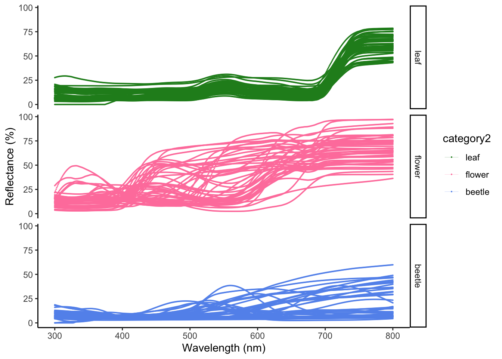
Visual sensitivities and visual systems
- We created 9 sensitivity curves peaking at 380, 460, 520, 580, 600, 620, 640, 660, 680 nm and classified them into 4 photoreceptor types based on their peaks:
- Ultraviolet sensitive (UVS): 380 nm
- Short-wavelength sensitive (SWS): 460 nm
- Medium-wavelength sensitive (MWS): 520 nm
- Long-wavelength sensitive (LWS): 580, 600, 620, 640, 660, 680 nm
- Based on these sensitivities, we created several different visual systems for 2 visual models:
- In the first model ( Visual model 1 ), we tested effect of having an LWS photoreceptor. We compared the contrast between 3 trichromatic visual system with varied photoreceptor combination. We also tested an extra receptor the extent to which enhanced the contrast by comparing with a tetrachromatic visual system.
- Visual systems in visual model 1:
- Visual system USM: 380 nm, 460 nm, 520 nm (UVS,SWS,MWS)
- Visual system UML: 380 nm, 520 nm, 580 nm (UVS,MWS,LWS)
- Visual system USL: 380 nm, 460 nm, 580 nm (UVS,SWS,LWS)
- Visual system USML: 380 nm, 460 nm, 520 nm, 580 nm (UVS,SWS,MWS,LWS)
- Visual systems in visual model 1:
- In the second model ( Visual model 2 ), we tested how the contrast changed as peak sensitivity increased by systematically increasing the peak sensitivity of the LWS photoreceptor from 580-680 nm.
- Visual systems in visual model 2:
- Visual system 580: 380 nm, 460 nm, 520 nm, 580 nm
- Visual system 600: 380 nm, 460 nm, 520 nm, 600 nm
- Visual system 620: 380 nm, 460 nm, 520 nm, 620 nm
- Visual system 640: 380 nm, 460 nm, 520 nm, 640 nm
- Visual system 660: 380 nm, 460 nm, 520 nm, 660 nm
- Visual system 680: 380 nm, 460 nm, 520 nm, 680 nm
- Visual systems in visual model 2:
wl<-specsensbuprest.model2[,1]
peaks<-gather(specsensbuprest.model2[,2:10], peak, value) %>% cbind(wl)
peak.order <- c("UVS.380.", "UVS.460.", "LWS.520.", "LWS.580.", "LWS.600.", "LWS.620.", "LWS.640.", "LWS.660.", "LWS.680.") #to order the peaks in the legend
ggplot(peaks,aes(x=wl, y=value, col=peak))+
geom_line()+
guides(color=guide_legend(title="peak sensitivity"))+
scale_color_manual(
values = c("olivedrab4", "orange1", "orange3","darkorange3", "orangered1", "red2","red4", "darkorchid4", "dodgerblue3"),
labels=c("320 nm", "460 nm","520 nm", "580 nm", "600 nm", "620 nm", "640 nm", "660 nm", "680 nm" ),
breaks=peak.order)+
xlab("Wavelength (nm)")+
ylab("Relative spectral sensitivity")+
theme_classic()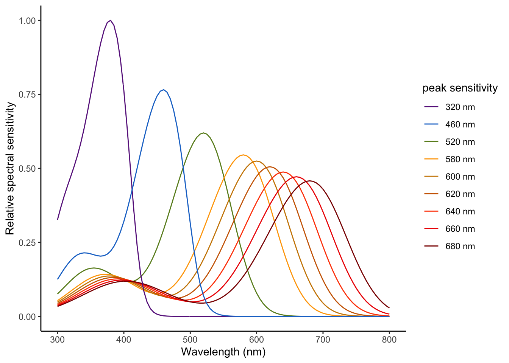
Illuminations
- Two light environments: daylight and twilight (to represent red-shifted illumination).
- daylight: D65 from Commission internationale de l’eclairage CIE
- twilight: measured at the Pinnacles Lookout in Alpine National Park, VIC, Australia at 18:15 on September 14th 2019.
illum <- merge(irradiance.d65, irradiance.twilight) %>% gather(light, illuminace, -wl)
ggplot(illum, aes(x=wl, y=illuminace, color=light))+
geom_line()+
xlab("Wavelength (nm)")+
ylab("Irradiance")+
theme_classic()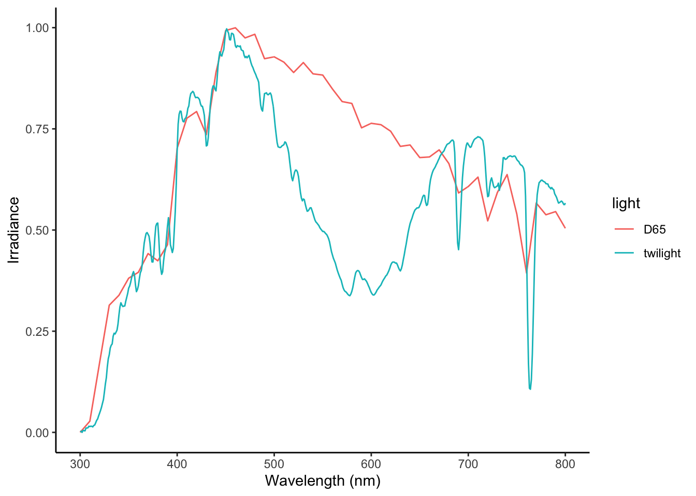
Run the visual models
First: Quantum catch calculation
- We calculated quantum catch of each visual system based on Fechner’s law (the signal of the receptor channel is proportional to the logarithm of the quantum catch).
- The average leaf was used for the background.
- von Kries chromatic adaptation was applied to correct the colour.
#Quantum catch - D65 - Visual model 1
visUVSWMW..=vismodel(dataset[1:501,], visual = specsensbuprest.model1[, 1:4], bkg=aveleaf$aveleaf, illum = irradiance.d65[1:501,2], qcatch = 'fi', relative=FALSE, vonkries=TRUE)
visUV..MWLW=vismodel(dataset[1:501,], visual = specsensbuprest.model1[, c(1,2,4,5)], bkg=aveleaf$aveleaf, illum = irradiance.d65[1:501,2], qcatch = 'fi', relative=FALSE, vonkries=TRUE)
visUVSW..LW=vismodel(dataset[1:501,], visual = specsensbuprest.model1[, c(1,2,3,5)], bkg=aveleaf$aveleaf, illum = irradiance.d65[1:501,2], qcatch = 'fi', relative=FALSE, vonkries=TRUE)
visUVSWMWLW=vismodel(dataset[1:501,], visual = specsensbuprest.model1[, 1:5], bkg=aveleaf$aveleaf, illum = irradiance.d65[1:501,2], qcatch = 'fi', relative=FALSE, vonkries=TRUE)
#Quantum catch - D65 - Visual model 2
buprest580=vismodel(dataset[1:501,], visual = specsensbuprest.model2[, 1:5], bkg=aveleaf$aveleaf, illum = irradiance.d65[1:501,2], qcatch = 'fi', relative=FALSE, vonkries=TRUE)
buprest600=vismodel(dataset[1:501,], visual = specsensbuprest.model2[, c(1,2,3,4,6)], bkg=aveleaf$aveleaf, illum = irradiance.d65[1:501,2], qcatch = 'fi', relative=FALSE, vonkries=TRUE)
buprest620=vismodel(dataset[1:501,], visual = specsensbuprest.model2[, c(1,2,3,4,7)], bkg=aveleaf$aveleaf, illum = irradiance.d65[1:501,2], qcatch = 'fi', relative=FALSE, vonkries=TRUE)
buprest640=vismodel(dataset[1:501,], visual = specsensbuprest.model2[, c(1,2,3,4,8)], bkg=aveleaf$aveleaf, illum = irradiance.d65[1:501,2], qcatch = 'fi', relative=FALSE, vonkries=TRUE)
buprest660=vismodel(dataset[1:501,], visual = specsensbuprest.model2[, c(1,2,3,4,9)], bkg=aveleaf$aveleaf, illum = irradiance.d65[1:501,2], qcatch = 'fi', relative=FALSE, vonkries=TRUE)
buprest680=vismodel(dataset[1:501,], visual = specsensbuprest.model2[, c(1,2,3,4,10)], bkg=aveleaf$aveleaf, illum = irradiance.d65[1:501,2], qcatch = 'fi', relative=FALSE, vonkries=TRUE)
#Quantum catch - twilight - Visual model 1
visUVSWMW.._twilight=vismodel(dataset[1:501,], visual = specsensbuprest.model1[, 1:4], bkg=aveleaf$aveleaf, illum = irradiance.twilight[1:501,2], qcatch = 'fi', relative=FALSE, vonkries=TRUE)
visUV..MWLW_twilight=vismodel(dataset[1:501,], visual = specsensbuprest.model1[, c(1,2,4,5)], bkg=aveleaf$aveleaf, illum = irradiance.twilight[1:501,2], qcatch = 'fi', relative=FALSE, vonkries=TRUE)
visUVSW..LW_twilight=vismodel(dataset[1:501,], visual = specsensbuprest.model1[, c(1,2,3,5)], bkg=aveleaf$aveleaf, illum = irradiance.twilight[1:501,2], qcatch = 'fi', relative=FALSE, vonkries=TRUE)
visUVSWMWLW_twilight=vismodel(dataset[1:501,], visual = specsensbuprest.model1[, 1:5], bkg=aveleaf$aveleaf, illum = irradiance.twilight[1:501,2], qcatch = 'fi', relative=FALSE, vonkries=TRUE)
#Quantum catch - twilight - Visual model 2
buprest580_twilight=vismodel(dataset[1:501,], visual = specsensbuprest.model2[, 1:5], bkg=aveleaf$aveleaf, illum = irradiance.twilight[1:501,2], qcatch = 'fi', relative=FALSE, vonkries=TRUE)
buprest600_twilight=vismodel(dataset[1:501,], visual = specsensbuprest.model2[, c(1,2,3,4,6)], bkg=aveleaf$aveleaf, illum = irradiance.twilight[1:501,2], qcatch = 'fi', relative=FALSE, vonkries=TRUE)
buprest620_twilight=vismodel(dataset[1:501,], visual = specsensbuprest.model2[, c(1,2,3,4,7)], bkg=aveleaf$aveleaf, illum = irradiance.twilight[1:501,2], qcatch = 'fi', relative=FALSE, vonkries=TRUE)
buprest640_twilight=vismodel(dataset[1:501,], visual = specsensbuprest.model2[, c(1,2,3,4,8)], bkg=aveleaf$aveleaf, illum = irradiance.twilight[1:501,2], qcatch = 'fi', relative=FALSE, vonkries=TRUE)
buprest660_twilight=vismodel(dataset[1:501,], visual = specsensbuprest.model2[, c(1,2,3,4,9)], bkg=aveleaf$aveleaf, illum = irradiance.twilight[1:501,2], qcatch = 'fi', relative=FALSE, vonkries=TRUE)
buprest680_twilight=vismodel(dataset[1:501,], visual = specsensbuprest.model2[, c(1,2,3,4,10)], bkg=aveleaf$aveleaf, illum = irradiance.twilight[1:501,2], qcatch = 'fi', relative=FALSE, vonkries=TRUE)Second: Contrast calculation
- We used a neural noise-limited model where the noise is proportional to the Weber fraction and is independent of the intensity of the signal received.
- Photoreceptor density is based on the opisn gene epxression of Emerald ash borer, Agrilus planipennis: 1.14, 1, 1.26, 1.38
- The Weber fraction was asinged to be 0.1
#Contrast calculation- D65 - Visual model 1
CvisUVSWMW.. = coldist(visUVSWMW.., noise="neural", achro=FALSE, n = c(1.14,1,1.26), weber = 0.1, weber.ref = 3) ##change "weber.ref" to 3
CvisUV..MWLW = coldist(visUV..MWLW, noise="neural", achro=FALSE, n = c(1.14,1.26,1.38), weber = 0.1, weber.ref = 3)
CvisUVSW..LW = coldist(visUVSW..LW, noise="neural", achro=FALSE, n = c(1.14,1,1.38), weber = 0.1, weber.ref = 3)
CvisUVSWMWLW = coldist(visUVSWMWLW, noise="neural", achro=FALSE, n = c(1.14,1,1.26,1.38), weber = 0.1, weber.ref = 4)
#Contrast calculation- D65 - Visual model 2
Cbuprest580 = coldist(buprest580, noise="neural", achro=FALSE, n = c(1.14,1,1.26,1.38), weber = 0.1, weber.ref = 4)
Cbuprest600 = coldist(buprest600, noise="neural", achro=FALSE, n = c(1.14,1,1.26,1.38), weber = 0.1, weber.ref = 4)
Cbuprest620 = coldist(buprest620, noise="neural", achro=FALSE, n = c(1.14,1,1.26,1.38), weber = 0.1, weber.ref = 4)
Cbuprest640 = coldist(buprest640, noise="neural", achro=FALSE, n = c(1.14,1,1.26,1.38), weber = 0.1, weber.ref = 4)
Cbuprest660 = coldist(buprest660, noise="neural", achro=FALSE, n = c(1.14,1,1.26,1.38), weber = 0.1, weber.ref = 4)
Cbuprest680 = coldist(buprest680, noise="neural", achro=FALSE, n = c(1.14,1,1.26,1.38), weber = 0.1, weber.ref = 4)
#Contrast calculation- twilight - Visual model 1
CvisUVSWMW.._twilight = coldist(visUVSWMW.._twilight, noise="neural", achro=FALSE, n = c(1.14,1,1.26), weber = 0.1, weber.ref = 3) ##change "weber.ref" to 3
CvisUV..MWLW_twilight = coldist(visUV..MWLW_twilight, noise="neural", achro=FALSE, n = c(1.14,1.26,1.38), weber = 0.1, weber.ref = 3)
CvisUVSW..LW_twilight = coldist(visUVSW..LW_twilight, noise="neural", achro=FALSE, n = c(1.14,1,1.38), weber = 0.1, weber.ref = 3)
CvisUVSWMWLW_twilight = coldist(visUVSWMWLW_twilight, noise="neural", achro=FALSE, n = c(1.14,1,1.26,1.38), weber = 0.1, weber.ref = 4)
#Contrast calculation- twilight - Visual model 2
Cbuprest580_twilight = coldist(buprest580_twilight, noise="neural", achro=FALSE, n = c(1.14,1,1.26,1.38), weber = 0.1, weber.ref = 4)
Cbuprest600_twilight = coldist(buprest600_twilight, noise="neural", achro=FALSE, n = c(1.14,1,1.26,1.38), weber = 0.1, weber.ref = 4)
Cbuprest620_twilight = coldist(buprest620_twilight, noise="neural", achro=FALSE, n = c(1.14,1,1.26,1.38), weber = 0.1, weber.ref = 4)
Cbuprest640_twilight = coldist(buprest640_twilight, noise="neural", achro=FALSE, n = c(1.14,1,1.26,1.38), weber = 0.1, weber.ref = 4)
Cbuprest660_twilight = coldist(buprest660_twilight, noise="neural", achro=FALSE, n = c(1.14,1,1.26,1.38), weber = 0.1, weber.ref = 4)
Cbuprest680_twilight = coldist(buprest680_twilight, noise="neural", achro=FALSE, n = c(1.14,1,1.26,1.38), weber = 0.1, weber.ref = 4)Compare contrasts
- Using GLMM to test if contasts were different among visual systems
#creat different comparison groups for furthur GLMM analysis
#Organize data before GLMM
#D65 - visual model 1
##flower vs leaf
CvisUVSWMW...leaf.vs.flower=
CvisUVSWMW.. %>%filter(str_detect(patch1, "flower")) %>% filter(str_detect(patch2, "leaves"))
CvisUV..MWLW.leaf.vs.flower=
CvisUV..MWLW %>%filter(str_detect(patch1, "flower")) %>% filter(str_detect(patch2, "leaves"))
CvisUVSW..LW.leaf.vs.flower=
CvisUVSW..LW %>%filter(str_detect(patch1, "flower")) %>% filter(str_detect(patch2, "leaves"))
CvisUVSWMWLW.leaf.vs.flower=
CvisUVSWMWLW %>%filter(str_detect(patch1, "flower")) %>% filter(str_detect(patch2, "leaves"))
C.leaf.vs.flower.model1=
CvisUVSWMW...leaf.vs.flower %>% rbind(CvisUV..MWLW.leaf.vs.flower) %>%
rbind(CvisUVSW..LW.leaf.vs.flower)%>% rbind(CvisUVSWMWLW.leaf.vs.flower)
contrast.UVSWMW...leaf.vs.flower<-CvisUVSWMW...leaf.vs.flower[,3]
contrast.UV..MWLW.leaf.vs.flower<-CvisUV..MWLW.leaf.vs.flower[,3]
contrast.UVSW..LW.leaf.vs.flower<-CvisUVSW..LW.leaf.vs.flower[,3]
contrast.UVSWMWLW.leaf.vs.flower<-CvisUVSWMWLW.leaf.vs.flower[,3]
com.contrast.leaf.vs.flower.model1<-cbind(CvisUVSWMW...leaf.vs.flower[,1:2],contrast.UVSWMW...leaf.vs.flower,contrast.UV..MWLW.leaf.vs.flower,contrast.UVSW..LW.leaf.vs.flower,contrast.UVSWMWLW.leaf.vs.flower)
compare.leaf.vs.flower.model1 <- com.contrast.leaf.vs.flower.model1 %>%
gather(key = "peak_wl.leaf.vs.flower", value = "dS", 3:6)
##beetle vs leaf
CvisUVSWMW...leaf.vs.beetle=
CvisUVSWMW.. %>%filter(str_detect(patch1, "leaves")) %>% filter(str_detect(patch2, "beetle"))
CvisUV..MWLW.leaf.vs.beetle=
CvisUV..MWLW %>%filter(str_detect(patch1, "leaves")) %>% filter(str_detect(patch2, "beetle"))
CvisUVSW..LW.leaf.vs.beetle=
CvisUVSW..LW %>%filter(str_detect(patch1, "leaves")) %>% filter(str_detect(patch2, "beetle"))
CvisUVSWMWLW.leaf.vs.beetle=
CvisUVSWMWLW %>%filter(str_detect(patch1, "leaves")) %>% filter(str_detect(patch2, "beetle"))
C.leaf.vs.beetle.model1=
CvisUVSWMW...leaf.vs.beetle %>% rbind(CvisUV..MWLW.leaf.vs.beetle) %>%
rbind(CvisUVSW..LW.leaf.vs.beetle)%>% rbind(CvisUVSWMWLW.leaf.vs.beetle)
contrast.UVSWMW...leaf.vs.beetle<-CvisUVSWMW...leaf.vs.beetle[,3]
contrast.UV..MWLW.leaf.vs.beetle<-CvisUV..MWLW.leaf.vs.beetle[,3]
contrast.UVSW..LW.leaf.vs.beetle<-CvisUVSW..LW.leaf.vs.beetle[,3]
contrast.UVSWMWLW.leaf.vs.beetle<-CvisUVSWMWLW.leaf.vs.beetle[,3]
com.contrast.leaf.vs.beetle.model1<-cbind(CvisUVSWMW...leaf.vs.beetle[,1:2],contrast.UVSWMW...leaf.vs.beetle,contrast.UV..MWLW.leaf.vs.beetle,contrast.UVSW..LW.leaf.vs.beetle,contrast.UVSWMWLW.leaf.vs.beetle)
compare.leaf.vs.beetle.model1 <- com.contrast.leaf.vs.beetle.model1 %>%
gather(key = "peak_wl.leaf.vs.beetle", value = "dS", 3:6)
##beetle vs flower
CvisUVSWMW...flower.vs.beetle=
CvisUVSWMW.. %>%filter(str_detect(patch1, "flower")) %>% filter(str_detect(patch2, "beetle"))
CvisUV..MWLW.flower.vs.beetle=
CvisUV..MWLW %>%filter(str_detect(patch1, "flower")) %>% filter(str_detect(patch2, "beetle"))
CvisUVSW..LW.flower.vs.beetle=
CvisUVSW..LW %>%filter(str_detect(patch1, "flower")) %>% filter(str_detect(patch2, "beetle"))
CvisUVSWMWLW.flower.vs.beetle=
CvisUVSWMWLW %>%filter(str_detect(patch1, "flower")) %>% filter(str_detect(patch2, "beetle"))
C.flower.vs.beetle.model1=
CvisUVSWMW...flower.vs.beetle %>% rbind(CvisUV..MWLW.flower.vs.beetle) %>%
rbind(CvisUVSW..LW.flower.vs.beetle) %>% rbind(CvisUVSWMWLW.flower.vs.beetle)
contrast.UVSWMW...flower.vs.beetle<-CvisUVSWMW...flower.vs.beetle[,3]
contrast.UV..MWLW.flower.vs.beetle<-CvisUV..MWLW.flower.vs.beetle[,3]
contrast.UVSW..LW.flower.vs.beetle<-CvisUVSW..LW.flower.vs.beetle[,3]
contrast.UVSWMWLW.flower.vs.beetle<-CvisUVSWMWLW.flower.vs.beetle[,3]
com.contrast.flower.vs.beetle.model1<-cbind(CvisUVSWMW...flower.vs.beetle[,1:2],contrast.UVSWMW...flower.vs.beetle,contrast.UV..MWLW.flower.vs.beetle,contrast.UVSW..LW.flower.vs.beetle,contrast.UVSWMWLW.flower.vs.beetle)
compare.flower.vs.beetle.model1 <- com.contrast.flower.vs.beetle.model1 %>%
gather(key = "peak_wl.flower.vs.beetle", value = "dS", 3:6)
#D65 - visual model 2
##flower vs leaf
Cbuprest580.leaf.vs.flower=
Cbuprest580 %>%filter(str_detect(patch1, "flower")) %>% filter(str_detect(patch2, "leaves"))
Cbuprest600.leaf.vs.flower=
Cbuprest600 %>%filter(str_detect(patch1, "flower")) %>% filter(str_detect(patch2, "leaves"))
Cbuprest620.leaf.vs.flower=
Cbuprest620 %>%filter(str_detect(patch1, "flower")) %>% filter(str_detect(patch2, "leaves"))
Cbuprest640.leaf.vs.flower=
Cbuprest640 %>%filter(str_detect(patch1, "flower")) %>% filter(str_detect(patch2, "leaves"))
Cbuprest660.leaf.vs.flower=
Cbuprest660 %>%filter(str_detect(patch1, "flower")) %>% filter(str_detect(patch2, "leaves"))
Cbuprest680.leaf.vs.flower=
Cbuprest680 %>%filter(str_detect(patch1, "flower")) %>% filter(str_detect(patch2, "leaves"))
Cbuprest.leaf.vs.flower.model2=
Cbuprest580.leaf.vs.flower %>% rbind(Cbuprest600.leaf.vs.flower) %>%
rbind(Cbuprest620.leaf.vs.flower)%>% rbind(Cbuprest640.leaf.vs.flower) %>% rbind(Cbuprest660.leaf.vs.flower) %>%
rbind(Cbuprest680.leaf.vs.flower)
bup580.leaf.vs.flower<-Cbuprest580.leaf.vs.flower[,3]
bup600.leaf.vs.flower<-Cbuprest600.leaf.vs.flower[,3]
bup620.leaf.vs.flower<-Cbuprest620.leaf.vs.flower[,3]
bup640.leaf.vs.flower<-Cbuprest640.leaf.vs.flower[,3]
bup660.leaf.vs.flower<-Cbuprest660.leaf.vs.flower[,3]
bup680.leaf.vs.flower<-Cbuprest680.leaf.vs.flower[,3]
com.bupcontrast.leaf.vs.flower.model2<-cbind(Cbuprest.leaf.vs.flower.model2[,1:2],bup580.leaf.vs.flower,bup600.leaf.vs.flower,bup620.leaf.vs.flower,bup640.leaf.vs.flower,bup660.leaf.vs.flower,bup680.leaf.vs.flower)
compare.leaf.vs.flower.model2 <- com.bupcontrast.leaf.vs.flower.model2 %>%
gather(key = "peak_wl.leaf.vs.flower", value = "dS", 3:8)
##beetle vs leaf
Cbuprest580.leaf.vs.beetle=
Cbuprest580 %>%filter(str_detect(patch1, "leaves")) %>% filter(str_detect(patch2, "beetle"))
Cbuprest600.leaf.vs.beetle=
Cbuprest600 %>%filter(str_detect(patch1, "leaves")) %>% filter(str_detect(patch2, "beetle"))
Cbuprest620.leaf.vs.beetle=
Cbuprest620 %>%filter(str_detect(patch1, "leaves")) %>% filter(str_detect(patch2, "beetle"))
Cbuprest640.leaf.vs.beetle=
Cbuprest640 %>%filter(str_detect(patch1, "leaves")) %>% filter(str_detect(patch2, "beetle"))
Cbuprest660.leaf.vs.beetle=
Cbuprest660 %>%filter(str_detect(patch1, "leaves")) %>% filter(str_detect(patch2, "beetle"))
Cbuprest680.leaf.vs.beetle=
Cbuprest680 %>%filter(str_detect(patch1, "leaves")) %>% filter(str_detect(patch2, "beetle"))
Cbuprest.leaf.vs.beetle.model2=
Cbuprest580.leaf.vs.beetle %>% rbind(Cbuprest600.leaf.vs.beetle)%>%
rbind(Cbuprest620.leaf.vs.beetle)%>% rbind(Cbuprest640.leaf.vs.beetle) %>% rbind(Cbuprest660.leaf.vs.beetle) %>%
rbind(Cbuprest680.leaf.vs.beetle)
bup580.leaf.vs.beetle<-Cbuprest580.leaf.vs.beetle[,3]
bup600.leaf.vs.beetle<-Cbuprest600.leaf.vs.beetle[,3]
bup620.leaf.vs.beetle<-Cbuprest620.leaf.vs.beetle[,3]
bup640.leaf.vs.beetle<-Cbuprest640.leaf.vs.beetle[,3]
bup660.leaf.vs.beetle<-Cbuprest660.leaf.vs.beetle[,3]
bup680.leaf.vs.beetle<-Cbuprest680.leaf.vs.beetle[,3]
com.bupcontrast.leaf.vs.beetle.model2<-cbind(Cbuprest.leaf.vs.beetle.model2[,1:2],bup580.leaf.vs.beetle,bup600.leaf.vs.beetle,bup620.leaf.vs.beetle,bup640.leaf.vs.beetle,bup660.leaf.vs.beetle,bup680.leaf.vs.beetle)
compare.leaf.vs.beetle.model2 <- com.bupcontrast.leaf.vs.beetle.model2 %>%
gather(key = "peak_wl.leaf.vs.beetle", value = "dS", 3:8)
##beetle vs flower
Cbuprest580.flower.vs.beetle=
Cbuprest580 %>%filter(str_detect(patch1, "flower")) %>% filter(str_detect(patch2, "beetle"))
Cbuprest600.flower.vs.beetle=
Cbuprest600 %>%filter(str_detect(patch1, "flower")) %>% filter(str_detect(patch2, "beetle"))
Cbuprest620.flower.vs.beetle=
Cbuprest620 %>%filter(str_detect(patch1, "flower")) %>% filter(str_detect(patch2, "beetle"))
Cbuprest640.flower.vs.beetle=
Cbuprest640 %>%filter(str_detect(patch1, "flower")) %>% filter(str_detect(patch2, "beetle"))
Cbuprest660.flower.vs.beetle=
Cbuprest660 %>%filter(str_detect(patch1, "flower")) %>% filter(str_detect(patch2, "beetle"))
Cbuprest680.flower.vs.beetle=
Cbuprest680 %>%filter(str_detect(patch1, "flower")) %>% filter(str_detect(patch2, "beetle"))
Cbuprest.flower.vs.beetle.model2=
Cbuprest580.flower.vs.beetle %>% rbind(Cbuprest600.flower.vs.beetle) %>%
rbind(Cbuprest620.flower.vs.beetle)%>% rbind(Cbuprest640.flower.vs.beetle) %>%
rbind(Cbuprest660.flower.vs.beetle)%>% rbind(Cbuprest680.flower.vs.beetle)
bup580.flower.vs.beetle<-Cbuprest580.flower.vs.beetle[,3]
bup600.flower.vs.beetle<-Cbuprest600.flower.vs.beetle[,3]
bup620.flower.vs.beetle<-Cbuprest620.flower.vs.beetle[,3]
bup640.flower.vs.beetle<-Cbuprest640.flower.vs.beetle[,3]
bup660.flower.vs.beetle<-Cbuprest660.flower.vs.beetle[,3]
bup680.flower.vs.beetle<-Cbuprest680.flower.vs.beetle[,3]
com.bupcontrast.flower.vs.beetle.model2<-cbind(Cbuprest.flower.vs.beetle.model2[,1:2],bup580.flower.vs.beetle,bup600.flower.vs.beetle,bup620.flower.vs.beetle,bup640.flower.vs.beetle,bup660.flower.vs.beetle,bup680.flower.vs.beetle)
compare.flower.vs.beetle.model2 <- com.bupcontrast.flower.vs.beetle.model2 %>%
gather(key = "peak_wl.flower.vs.beetle", value = "dS", 3:8)
#Twilight - visual model 1
##flower vs leaf
CvisUVSWMW...leaf.vs.flower_twilight=
CvisUVSWMW.._twilight %>%filter(str_detect(patch1, "flower")) %>% filter(str_detect(patch2, "leaves"))
CvisUV..MWLW.leaf.vs.flower_twilight=
CvisUV..MWLW_twilight %>%filter(str_detect(patch1, "flower")) %>% filter(str_detect(patch2, "leaves"))
CvisUVSW..LW.leaf.vs.flower_twilight=
CvisUVSW..LW_twilight %>%filter(str_detect(patch1, "flower")) %>% filter(str_detect(patch2, "leaves"))
CvisUVSWMWLW.leaf.vs.flower_twilight=
CvisUVSWMWLW_twilight %>%filter(str_detect(patch1, "flower")) %>% filter(str_detect(patch2, "leaves"))
C.leaf.vs.flower_twilight.model1=
CvisUVSWMW...leaf.vs.flower_twilight %>% rbind(CvisUV..MWLW.leaf.vs.flower_twilight) %>%
rbind(CvisUVSW..LW.leaf.vs.flower_twilight)%>% rbind(CvisUVSWMWLW.leaf.vs.flower_twilight)
contrast.UVSWMW...leaf.vs.flower_twilight<-CvisUVSWMW...leaf.vs.flower_twilight[,3]
contrast.UV..MWLW.leaf.vs.flower_twilight<-CvisUV..MWLW.leaf.vs.flower_twilight[,3]
contrast.UVSW..LW.leaf.vs.flower_twilight<-CvisUVSW..LW.leaf.vs.flower_twilight[,3]
contrast.UVSWMWLW.leaf.vs.flower_twilight<-CvisUVSWMWLW.leaf.vs.flower_twilight[,3]
com.contrast.leaf.vs.flower_twilight.model1<-cbind(CvisUVSWMW...leaf.vs.flower_twilight[,1:2],contrast.UVSWMW...leaf.vs.flower_twilight,contrast.UV..MWLW.leaf.vs.flower_twilight,contrast.UVSW..LW.leaf.vs.flower_twilight,contrast.UVSWMWLW.leaf.vs.flower_twilight)
compare.leaf.vs.flower_twilight.model1 <- com.contrast.leaf.vs.flower_twilight.model1 %>%
gather(key = "peak_wl.leaf.vs.flower", value = "dS", 3:6)
##beetle vs leaf
CvisUVSWMW...leaf.vs.beetle_twilight=
CvisUVSWMW.._twilight %>%filter(str_detect(patch1, "leaves")) %>% filter(str_detect(patch2, "beetle"))
CvisUV..MWLW.leaf.vs.beetle_twilight=
CvisUV..MWLW_twilight %>%filter(str_detect(patch1, "leaves")) %>% filter(str_detect(patch2, "beetle"))
CvisUVSW..LW.leaf.vs.beetle_twilight=
CvisUVSW..LW_twilight %>%filter(str_detect(patch1, "leaves")) %>% filter(str_detect(patch2, "beetle"))
CvisUVSWMWLW.leaf.vs.beetle_twilight=
CvisUVSWMWLW_twilight %>%filter(str_detect(patch1, "leaves")) %>% filter(str_detect(patch2, "beetle"))
C.leaf.vs.beetle_twilight.model1=
CvisUVSWMW...leaf.vs.beetle_twilight %>% rbind(CvisUV..MWLW.leaf.vs.beetle_twilight) %>%
rbind(CvisUVSW..LW.leaf.vs.beetle_twilight)%>% rbind(CvisUVSWMWLW.leaf.vs.beetle_twilight)
contrast.UVSWMW...leaf.vs.beetle_twilight<-CvisUVSWMW...leaf.vs.beetle_twilight[,3]
contrast.UV..MWLW.leaf.vs.beetle_twilight<-CvisUV..MWLW.leaf.vs.beetle_twilight[,3]
contrast.UVSW..LW.leaf.vs.beetle_twilight<-CvisUVSW..LW.leaf.vs.beetle_twilight[,3]
contrast.UVSWMWLW.leaf.vs.beetle_twilight<-CvisUVSWMWLW.leaf.vs.beetle_twilight[,3]
com.contrast.leaf.vs.beetle_twilight.model1<-cbind(CvisUVSWMW...leaf.vs.beetle_twilight[,1:2],contrast.UVSWMW...leaf.vs.beetle_twilight,contrast.UV..MWLW.leaf.vs.beetle_twilight,contrast.UVSW..LW.leaf.vs.beetle_twilight,contrast.UVSWMWLW.leaf.vs.beetle_twilight)
compare.leaf.vs.beetle_twilight.model1 <- com.contrast.leaf.vs.beetle_twilight.model1 %>%
gather(key = "peak_wl.leaf.vs.beetle", value = "dS", 3:6)
##beetle vs flower
CvisUVSWMW...flower.vs.beetle_twilight=
CvisUVSWMW.._twilight %>%filter(str_detect(patch1, "flower")) %>% filter(str_detect(patch2, "beetle"))
CvisUV..MWLW.flower.vs.beetle_twilight=
CvisUV..MWLW_twilight %>%filter(str_detect(patch1, "flower")) %>% filter(str_detect(patch2, "beetle"))
CvisUVSW..LW.flower.vs.beetle_twilight=
CvisUVSW..LW_twilight %>%filter(str_detect(patch1, "flower")) %>% filter(str_detect(patch2, "beetle"))
CvisUVSWMWLW.flower.vs.beetle_twilight=
CvisUVSWMWLW_twilight %>%filter(str_detect(patch1, "flower")) %>% filter(str_detect(patch2, "beetle"))
C.flower.vs.beetle_twilight.model1=
CvisUVSWMW...flower.vs.beetle_twilight %>% rbind(CvisUV..MWLW.flower.vs.beetle_twilight) %>%
rbind(CvisUVSW..LW.flower.vs.beetle_twilight) %>% rbind(CvisUVSWMWLW.flower.vs.beetle_twilight)
contrast.UVSWMW...flower.vs.beetle_twilight<-CvisUVSWMW...flower.vs.beetle_twilight[,3]
contrast.UV..MWLW.flower.vs.beetle_twilight<-CvisUV..MWLW.flower.vs.beetle_twilight[,3]
contrast.UVSW..LW.flower.vs.beetle_twilight<-CvisUVSW..LW.flower.vs.beetle_twilight[,3]
contrast.UVSWMWLW.flower.vs.beetle_twilight<-CvisUVSWMWLW.flower.vs.beetle_twilight[,3]
com.contrast.flower.vs.beetle_twilight.model1<-cbind(CvisUVSWMW...flower.vs.beetle_twilight[,1:2],contrast.UVSWMW...flower.vs.beetle_twilight,contrast.UV..MWLW.flower.vs.beetle_twilight,contrast.UVSW..LW.flower.vs.beetle_twilight,contrast.UVSWMWLW.flower.vs.beetle_twilight)
compare.flower.vs.beetle_twilight.model1 <- com.contrast.flower.vs.beetle_twilight.model1 %>%
gather(key = "peak_wl.flower.vs.beetle", value = "dS", 3:6)
#Twilight - visual model 2
##flower vs leaf
Cbuprest580.leaf.vs.flower_twilight=
Cbuprest580_twilight %>%filter(str_detect(patch1, "flower")) %>% filter(str_detect(patch2, "leaves"))
Cbuprest600.leaf.vs.flower_twilight=
Cbuprest600_twilight %>%filter(str_detect(patch1, "flower")) %>% filter(str_detect(patch2, "leaves"))
Cbuprest620.leaf.vs.flower_twilight=
Cbuprest620_twilight %>%filter(str_detect(patch1, "flower")) %>% filter(str_detect(patch2, "leaves"))
Cbuprest640.leaf.vs.flower_twilight=
Cbuprest640_twilight %>%filter(str_detect(patch1, "flower")) %>% filter(str_detect(patch2, "leaves"))
Cbuprest660.leaf.vs.flower_twilight=
Cbuprest660_twilight %>%filter(str_detect(patch1, "flower")) %>% filter(str_detect(patch2, "leaves"))
Cbuprest680.leaf.vs.flower_twilight=
Cbuprest680_twilight %>%filter(str_detect(patch1, "flower")) %>% filter(str_detect(patch2, "leaves"))
Cbuprest.leaf.vs.flower_twilight.model2=
Cbuprest580.leaf.vs.flower_twilight %>% rbind(Cbuprest600.leaf.vs.flower_twilight) %>%
rbind(Cbuprest620.leaf.vs.flower_twilight)%>% rbind(Cbuprest640.leaf.vs.flower_twilight) %>% rbind(Cbuprest660.leaf.vs.flower_twilight) %>% rbind(Cbuprest680.leaf.vs.flower_twilight)
bup580.leaf.vs.flower_twilight<-Cbuprest580.leaf.vs.flower_twilight[,3]
bup600.leaf.vs.flower_twilight<-Cbuprest600.leaf.vs.flower_twilight[,3]
bup620.leaf.vs.flower_twilight<-Cbuprest620.leaf.vs.flower_twilight[,3]
bup640.leaf.vs.flower_twilight<-Cbuprest640.leaf.vs.flower_twilight[,3]
bup660.leaf.vs.flower_twilight<-Cbuprest660.leaf.vs.flower_twilight[,3]
bup680.leaf.vs.flower_twilight<-Cbuprest680.leaf.vs.flower_twilight[,3]
com.bupcontrast.leaf.vs.flower_twilight.model2<-cbind(Cbuprest.leaf.vs.flower_twilight.model2[,1:2],bup580.leaf.vs.flower_twilight,bup600.leaf.vs.flower_twilight,bup620.leaf.vs.flower_twilight,bup640.leaf.vs.flower_twilight,bup660.leaf.vs.flower_twilight,bup680.leaf.vs.flower_twilight)
compare.leaf.vs.flower_twilight.model2 <- com.bupcontrast.leaf.vs.flower_twilight.model2 %>%
gather(key = "peak_wl.leaf.vs.flower", value = "dS", 3:8)
##beetle vs leaf
Cbuprest580.leaf.vs.beetle_twilight=
Cbuprest580_twilight %>%filter(str_detect(patch1, "leaves")) %>% filter(str_detect(patch2, "beetle"))
Cbuprest600.leaf.vs.beetle_twilight=
Cbuprest600_twilight %>%filter(str_detect(patch1, "leaves")) %>% filter(str_detect(patch2, "beetle"))
Cbuprest620.leaf.vs.beetle_twilight=
Cbuprest620_twilight %>%filter(str_detect(patch1, "leaves")) %>% filter(str_detect(patch2, "beetle"))
Cbuprest640.leaf.vs.beetle_twilight=
Cbuprest640_twilight %>%filter(str_detect(patch1, "leaves")) %>% filter(str_detect(patch2, "beetle"))
Cbuprest660.leaf.vs.beetle_twilight=
Cbuprest660_twilight %>%filter(str_detect(patch1, "leaves")) %>% filter(str_detect(patch2, "beetle"))
Cbuprest680.leaf.vs.beetle_twilight=
Cbuprest680_twilight %>%filter(str_detect(patch1, "leaves")) %>% filter(str_detect(patch2, "beetle"))
Cbuprest.leaf.vs.beetle_twilight.model2=
Cbuprest580.leaf.vs.beetle_twilight %>% rbind(Cbuprest600.leaf.vs.beetle_twilight)%>%
rbind(Cbuprest620.leaf.vs.beetle_twilight)%>% rbind(Cbuprest640.leaf.vs.beetle_twilight) %>%
rbind(Cbuprest660.leaf.vs.beetle_twilight) %>% rbind(Cbuprest680.leaf.vs.beetle_twilight)
bup580.leaf.vs.beetle_twilight<-Cbuprest580.leaf.vs.beetle_twilight[,3]
bup600.leaf.vs.beetle_twilight<-Cbuprest600.leaf.vs.beetle_twilight[,3]
bup620.leaf.vs.beetle_twilight<-Cbuprest620.leaf.vs.beetle_twilight[,3]
bup640.leaf.vs.beetle_twilight<-Cbuprest640.leaf.vs.beetle_twilight[,3]
bup660.leaf.vs.beetle_twilight<-Cbuprest660.leaf.vs.beetle_twilight[,3]
bup680.leaf.vs.beetle_twilight<-Cbuprest680.leaf.vs.beetle_twilight[,3]
com.bupcontrast.leaf.vs.beetle_twilight.model2<-cbind(Cbuprest.leaf.vs.beetle_twilight.model2[,1:2],bup580.leaf.vs.beetle_twilight,bup600.leaf.vs.beetle_twilight,bup620.leaf.vs.beetle_twilight,bup640.leaf.vs.beetle_twilight,bup660.leaf.vs.beetle_twilight,bup680.leaf.vs.beetle_twilight)
compare.leaf.vs.beetle_twilight.model2 <- com.bupcontrast.leaf.vs.beetle_twilight.model2 %>%
gather(key = "peak_wl.leaf.vs.beetle", value = "dS", 3:8)
##beetle vs flower
Cbuprest580.flower.vs.beetle_twilight=
Cbuprest580_twilight %>%filter(str_detect(patch1, "flower")) %>% filter(str_detect(patch2, "beetle"))
Cbuprest600.flower.vs.beetle_twilight=
Cbuprest600_twilight %>%filter(str_detect(patch1, "flower")) %>% filter(str_detect(patch2, "beetle"))
Cbuprest620.flower.vs.beetle_twilight=
Cbuprest620_twilight %>%filter(str_detect(patch1, "flower")) %>% filter(str_detect(patch2, "beetle"))
Cbuprest640.flower.vs.beetle_twilight=
Cbuprest640_twilight %>%filter(str_detect(patch1, "flower")) %>% filter(str_detect(patch2, "beetle"))
Cbuprest660.flower.vs.beetle_twilight=
Cbuprest660_twilight %>%filter(str_detect(patch1, "flower")) %>% filter(str_detect(patch2, "beetle"))
Cbuprest680.flower.vs.beetle_twilight=
Cbuprest680_twilight %>%filter(str_detect(patch1, "flower")) %>% filter(str_detect(patch2, "beetle"))
Cbuprest.flower.vs.beetle_twilight.model2=
Cbuprest580.flower.vs.beetle_twilight %>%rbind(Cbuprest600.flower.vs.beetle_twilight) %>%
rbind(Cbuprest620.flower.vs.beetle_twilight) %>% rbind(Cbuprest640.flower.vs.beetle_twilight) %>%
rbind(Cbuprest660.flower.vs.beetle_twilight) %>% rbind(Cbuprest680.flower.vs.beetle_twilight)
bup580.flower.vs.beetle_twilight<-Cbuprest580.flower.vs.beetle_twilight[,3]
bup600.flower.vs.beetle_twilight<-Cbuprest600.flower.vs.beetle_twilight[,3]
bup620.flower.vs.beetle_twilight<-Cbuprest620.flower.vs.beetle_twilight[,3]
bup640.flower.vs.beetle_twilight<-Cbuprest640.flower.vs.beetle_twilight[,3]
bup660.flower.vs.beetle_twilight<-Cbuprest660.flower.vs.beetle_twilight[,3]
bup680.flower.vs.beetle_twilight<-Cbuprest680.flower.vs.beetle_twilight[,3]
com.bupcontrast.flower.vs.beetle_twilight.model2<-cbind(Cbuprest.flower.vs.beetle_twilight.model2[,1:2],bup580.flower.vs.beetle_twilight,bup600.flower.vs.beetle_twilight,bup620.flower.vs.beetle_twilight,bup640.flower.vs.beetle_twilight,bup660.flower.vs.beetle_twilight,bup680.flower.vs.beetle_twilight)
compare.flower.vs.beetle_twilight.model2 <- com.bupcontrast.flower.vs.beetle_twilight.model2 %>%
gather(key = "peak_wl.flower.vs.beetle", value = "dS", 3:8)Check assumptions
#checking assumptions
##D65 - visual model 1
res.leaf.vs.flower_d65.model1<-lm(compare.leaf.vs.flower.model1$dS ~ compare.leaf.vs.flower.model1$peak_wl.leaf.vs.flower)
res.leaf.vs.beetle_d65.model1<-lm(compare.leaf.vs.beetle.model1$dS ~ compare.leaf.vs.beetle.model1$peak_wl.leaf.vs.beetle)
res.flower.vs.beetle_d65.model1<-lm(compare.flower.vs.beetle.model1$dS ~ compare.flower.vs.beetle.model1$peak_wl.flower.vs.beetle)
##D65 - visual model 2
res.leaf.vs.flower_d65.model2<-lm(compare.leaf.vs.flower.model2$dS ~ compare.leaf.vs.flower.model2$peak_wl.leaf.vs.flower)
res.leaf.vs.beetle_d65.model2<-lm(compare.leaf.vs.beetle.model2$dS ~ compare.leaf.vs.beetle.model2$peak_wl.leaf.vs.beetle)
res.flower.vs.beetle_d65.model2<-lm(compare.flower.vs.beetle.model2$dS ~ compare.flower.vs.beetle.model2$peak_wl.flower.vs.beetle)
##Twilight - visual model 1
res.leaf.vs.flower_twilight.model1<-lm(compare.leaf.vs.flower.model1$dS ~ compare.leaf.vs.flower.model1$peak_wl.leaf.vs.flower)
res.leaf.vs.beetle_twilight.model1<-lm(compare.leaf.vs.beetle.model1$dS ~ compare.leaf.vs.beetle.model1$peak_wl.leaf.vs.beetle)
res.flower.vs.beetle_twilight.model1<-lm(compare.flower.vs.beetle.model1$dS ~ compare.flower.vs.beetle.model1$peak_wl.flower.vs.beetle)
##Twilight - visual model 2
res.leaf.vs.flower_twilight.model2<-lm(compare.leaf.vs.flower.model2$dS ~ compare.leaf.vs.flower.model2$peak_wl.leaf.vs.flower)
res.leaf.vs.beetle_twilight.model2<-lm(compare.leaf.vs.beetle.model2$dS ~ compare.leaf.vs.beetle.model2$peak_wl.leaf.vs.beetle)
res.flower.vs.beetle_twilight.model2<-lm(compare.flower.vs.beetle.model2$dS ~ compare.flower.vs.beetle.model2$peak_wl.flower.vs.beetle)Normality
Visual model 1
D65
par (mfrow=c(1,3))
qqnorm(res.leaf.vs.flower_d65.model1$residuals, main = "Leaf vs Flower")
qqnorm(res.leaf.vs.beetle_d65.model1$residuals, main = "Leaf vs Beetle")
qqnorm(res.flower.vs.beetle_d65.model1$residuals, main = "Beetle vs Flower")
Twilight
par (mfrow=c(1,3))
qqnorm(res.leaf.vs.flower_twilight.model1$residuals, main = "Leaf vs Flower")
qqnorm(res.leaf.vs.beetle_twilight.model1$residuals, main = "Leaf vs Beetle")
qqnorm(res.flower.vs.beetle_twilight.model1$residuals, main = "Beetle vs Flower")
Visual model 2
D65
par (mfrow=c(1,3))
qqnorm(res.leaf.vs.flower_d65.model2$residuals, main = "Leaf vs Flower")
qqnorm(res.leaf.vs.beetle_d65.model2$residuals, main = "Leaf vs Beetle")
qqnorm(res.flower.vs.beetle_d65.model2$residuals, main = "Beetle vs Flower")
Twilight
par (mfrow=c(1,3))
qqnorm(res.leaf.vs.flower_twilight.model2$residuals, main = "Leaf vs Flower")
qqnorm(res.leaf.vs.beetle_twilight.model2$residuals, main = "Leaf vs Beetle")
qqnorm(res.flower.vs.beetle_twilight.model2$residuals, main = "Beetle vs Flower")
Homoscedasticity
Visual model 1
D65
par (mfrow=c(1,3))
boxplot(compare.leaf.vs.flower.model1$dS~compare.leaf.vs.flower.model1$peak_wl.leaf.vs.flower, las=2,
main = "Leaf vs Flower",
names=c("Vis UML", "Vis USL", "Vis USM", "Vis USML"))
boxplot(compare.leaf.vs.beetle.model1$dS~compare.leaf.vs.beetle.model1$peak_wl.leaf.vs.beetle, las=2,
main = "Leaf vs Beetle",
names=c("Vis UML", "Vis USL", "Vis USM", "Vis USML"))
boxplot(compare.flower.vs.beetle.model1$dS~compare.flower.vs.beetle.model1$peak_wl.flower.vs.beetle, las=2,
main = "Beetle vs Flower",
names=c("Vis UML", "Vis USL", "Vis USM", "Vis USML"))
Twilight
par (mfrow=c(1,3))
boxplot(compare.leaf.vs.flower_twilight.model1$dS~compare.leaf.vs.flower_twilight.model1$peak_wl.leaf.vs.flower, las=2,
main = "Leaf vs Flower",
names=c("Vis UML", "Vis USL", "Vis USM", "Vis USML"))
boxplot(compare.leaf.vs.beetle_twilight.model1$dS~compare.leaf.vs.beetle_twilight.model1$peak_wl.leaf.vs.beetle, las=2,
main = "Leaf vs Beetle",
names=c("Vis UML", "Vis USL", "Vis USM", "Vis USML"))
boxplot(compare.flower.vs.beetle_twilight.model1$dS~compare.flower.vs.beetle_twilight.model1$peak_wl.flower.vs.beetle, las=2,
main = "Beetle vs Flower",
names=c("Vis UML", "Vis USL", "Vis USM", "Vis USML"))
Visual model 2
D65
par (mfrow=c(1,3))
boxplot(compare.leaf.vs.flower.model2$dS~compare.leaf.vs.flower.model2$peak_wl.leaf.vs.flower, las=2,
main = "Leaf vs Flower",
names=c("Vis 580", "Vis 600", "Vis 620", "Vis 640", "Vis 660", "Vis 680"))
boxplot(compare.leaf.vs.beetle.model2$dS~compare.leaf.vs.beetle.model2$peak_wl.leaf.vs.beetle, las=2,
main = "Leaf vs Beetle",
names=c("Vis 580", "Vis 600", "Vis 620", "Vis 640", "Vis 660", "Vis 680"))
boxplot(compare.flower.vs.beetle.model2$dS~compare.flower.vs.beetle.model2$peak_wl.flower.vs.beetle, las=2,
main = "Beetle vs Flower",
names=c("Vis 580", "Vis 600", "Vis 620", "Vis 640", "Vis 660", "Vis 680"))
Twilight
par (mfrow=c(1,3))
boxplot(compare.leaf.vs.flower_twilight.model2$dS~compare.leaf.vs.flower_twilight.model2$peak_wl.leaf.vs.flower, las=2,
main = "Leaf vs Flower",
names=c("Vis 580", "Vis 600", "Vis 620", "Vis 640", "Vis 660", "Vis 680"))
boxplot(compare.leaf.vs.beetle_twilight.model2$dS~compare.leaf.vs.beetle_twilight.model2$peak_wl.leaf.vs.beetle, las=2,
main = "Leaf vs Beetle",
names=c("Vis 580", "Vis 600", "Vis 620", "Vis 640", "Vis 660", "Vis 680"))
boxplot(compare.flower.vs.beetle_twilight.model2$dS~compare.flower.vs.beetle_twilight.model2$peak_wl.flower.vs.beetle, las=2,
main = "Beetle vs Flower",
names=c("Vis 580", "Vis 600", "Vis 620", "Vis 640", "Vis 660", "Vis 680"))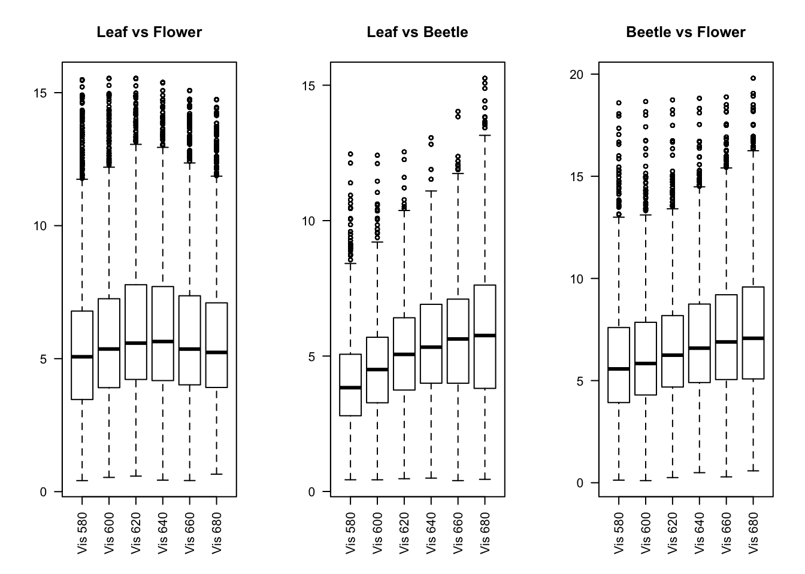
GLMM results
#GLMM - D65 - visual model 1
##Leaf vs Flower
m.leaf.vs.flower_d65.model1 <- lmer(dS~peak_wl.leaf.vs.flower + (1|patch2) + (1|patch1), data = compare.leaf.vs.flower.model1,REML=F)
sum.leaf.vs.flower_d65.model1<-summary(glht(m.leaf.vs.flower_d65.model1, linfct = mcp(peak_wl.leaf.vs.flower = "Tukey")), test = adjusted("bonferroni"))
#REML=F, in order to fit the model using the likelihood ratio test. Otherwise, the lmer default will fit the model using the REML (REstricted Maximum Likelihood) criterion.
##Leaf vs Beetle
m.leaf.vs.beetle_d65.model1 <- lmer(dS~peak_wl.leaf.vs.beetle + (1|patch2) + (1|patch1), data = compare.leaf.vs.beetle.model1,REML=F)
sum.leaf.vs.beetle_d65.model1 <- summary(glht(m.leaf.vs.beetle_d65.model1, linfct = mcp(peak_wl.leaf.vs.beetle = "Tukey")), test = adjusted("bonferroni"))
##Beetle vs Flower
m.flower.vs.beetle_d65.model1 <- lmer(dS~peak_wl.flower.vs.beetle + (1|patch2) + (1|patch1), data = compare.flower.vs.beetle.model1,REML=F)
sum.flower.vs.beetle_d65.model1 <-summary(glht(m.flower.vs.beetle_d65.model1, linfct = mcp(peak_wl.flower.vs.beetle = "Tukey")), test = adjusted("bonferroni"))
###reshape data for heatmap
p1_d65.model1<-sum.leaf.vs.flower_d65.model1[["test"]][["pvalues"]]
p2_d65.model1<-sum.leaf.vs.beetle_d65.model1[["test"]][["pvalues"]]
p3_d65.model1<-sum.flower.vs.beetle_d65.model1[["test"]][["pvalues"]]
VislistA_d65.model1<-c("Vis USL", "Vis USM","Vis USML","Vis USM","Vis USML","Vis USML")
VislistB_d65.model1<-c("Vis UML", "Vis UML","Vis UML","Vis USL","Vis USL","Vis USW")
heat1_d65.model1<-data.frame(names(p1_d65.model1),as.numeric(str_extract(p1_d65.model1,"([0-9]+).*$"))) %>%
cbind(as.numeric(str_extract(p2_d65.model1,"([0-9]+).*$"))) %>%
cbind(as.numeric(str_extract(p3_d65.model1,"([0-9]+).*$"))) %>%
dplyr:: rename(orignial.list = 1, leaf.vs.flower = 2, leaf.vs.beetle = 3, flower.vs.beetle = 4) %>%
cbind(VislistA_d65.model1) %>%
cbind(VislistB_d65.model1) %>%
dplyr::select(-orignial.list)
#GLMM - D65 - visual model 2
##Leaf vs Flower
m.leaf.vs.flower_d65.model2 <- lmer(dS~peak_wl.leaf.vs.flower + (1|patch2) + (1|patch1), data = compare.leaf.vs.flower.model2,REML=F)
sum.leaf.vs.flower_d65.model2 <- summary(glht(m.leaf.vs.flower_d65.model2, linfct = mcp(peak_wl.leaf.vs.flower = "Tukey")), test = adjusted("bonferroni"))
##Leaf vs Beetle
m.leaf.vs.beetle_d65.model2 <- lmer(dS~peak_wl.leaf.vs.beetle + (1|patch2) + (1|patch1), data = compare.leaf.vs.beetle.model2,REML=F)
sum.leaf.vs.beetle_d65.model2 <- summary(glht(m.leaf.vs.beetle_d65.model2, linfct = mcp(peak_wl.leaf.vs.beetle = "Tukey")), test = adjusted("bonferroni"))
##Beetle vs Flower
m.flower.vs.beetle_d65.model2 <- lmer(dS~peak_wl.flower.vs.beetle + (1|patch2) + (1|patch1), data = compare.flower.vs.beetle.model2,REML=F)
sum.flower.vs.beetle_d65.model2 <- summary(glht(m.flower.vs.beetle_d65.model2, linfct = mcp(peak_wl.flower.vs.beetle = "Tukey")), test = adjusted("bonferroni"))
###reshape data for heatmap
p1_d65.model2<-sum.leaf.vs.flower_d65.model2[["test"]][["pvalues"]]
p2_d65.model2<-sum.leaf.vs.beetle_d65.model2[["test"]][["pvalues"]]
p3_d65.model2<-sum.flower.vs.beetle_d65.model2[["test"]][["pvalues"]]
VislistA_d65.model2<-c("Vis 600", "Vis 620","Vis 640","Vis 660","Vis 680","Vis 620","Vis 640","Vis 660","Vis 680","Vis 640","Vis 660","Vis 680","Vis 660","Vis 680","Vis 680")
VislistB_d65.model2<-c("Vis 580","Vis 580","Vis 580","Vis 580","Vis 580","Vis 600","Vis 600","Vis 600","Vis 600","Vis 620","Vis 620","Vis 620","Vis 640","Vis 640","Vis 660")
heat1_d65.model2<-data.frame(names(p1_d65.model2),as.numeric(str_extract(p1_d65.model2,"([0-9]+).*$"))) %>%
cbind(as.numeric(str_extract(p2_d65.model2,"([0-9]+).*$"))) %>%
cbind(as.numeric(str_extract(p3_d65.model2,"([0-9]+).*$"))) %>%
dplyr:: rename(orignial.list = 1, leaf.vs.flower = 2, leaf.vs.beetle = 3, flower.vs.beetle = 4) %>%
cbind(VislistA_d65.model2) %>%
cbind(VislistB_d65.model2) %>%
dplyr::select(-orignial.list)
#GLMM - Twilight - visual model 1
##Leaf vs Flower
m.leaf.vs.flower_twilight.model1 <- lmer(dS~peak_wl.leaf.vs.flower + (1|patch2) + (1|patch1), data = compare.leaf.vs.flower_twilight.model1,REML=F)
sum.leaf.vs.flower_twilight.model1 <- summary(glht(m.leaf.vs.flower_twilight.model1, linfct = mcp(peak_wl.leaf.vs.flower = "Tukey")), test = adjusted("bonferroni"))
##Leaf vs Beetle
m.leaf.vs.beetle_twilight.model1 <- lmer(dS~peak_wl.leaf.vs.beetle + (1|patch2) + (1|patch1), data = compare.leaf.vs.beetle_twilight.model1,REML=F)
sum.leaf.vs.beetle_twilight.model1<-summary(glht(m.leaf.vs.beetle_twilight.model1, linfct = mcp(peak_wl.leaf.vs.beetle = "Tukey")), test = adjusted("bonferroni"))
##Beetle vs Flower
m.flower.vs.beetle_twilight.model1 <- lmer(dS~peak_wl.flower.vs.beetle + (1|patch2) + (1|patch1), data = compare.flower.vs.beetle_twilight.model1,REML=F)
sum.flower.vs.beetle_twilight.model1<-summary(glht(m.flower.vs.beetle_twilight.model1, linfct = mcp(peak_wl.flower.vs.beetle = "Tukey")), test = adjusted("bonferroni"))
###reshape data for heatmap
p1_twilight.model1<-sum.leaf.vs.flower_twilight.model1[["test"]][["pvalues"]]
p2_twilight.model1<-sum.leaf.vs.beetle_twilight.model1[["test"]][["pvalues"]]
p3_twilight.model1<-sum.flower.vs.beetle_twilight.model1[["test"]][["pvalues"]]
VislistA_twilight.model1<-c("Vis USL", "Vis USM","Vis USML","Vis USM","Vis USML","Vis USML")
VislistB_twilight.model1<-c("Vis UML", "Vis UML","Vis UML","Vis USL","Vis USL","Vis USW")
heat1_twilight.model1<-data.frame(names(p1_twilight.model1),as.numeric(str_extract(p1_twilight.model1,"([0-9]+).*$"))) %>%
cbind(as.numeric(str_extract(p2_twilight.model1,"([0-9]+).*$"))) %>%
cbind(as.numeric(str_extract(p3_twilight.model1,"([0-9]+).*$"))) %>%
dplyr:: rename(orignial.list = 1, leaf.vs.flower = 2, leaf.vs.beetle = 3, flower.vs.beetle = 4) %>%
cbind(VislistA_twilight.model1) %>%
cbind(VislistB_twilight.model1) %>%
dplyr::select(-orignial.list)
#GLMM - Twilight - visual model 2
##Leaf vs Flower
m.leaf.vs.flower_twilight.model2 <- lmer(dS~peak_wl.leaf.vs.flower + (1|patch2) + (1|patch1), data = compare.leaf.vs.flower_twilight.model2,REML=F)
sum.leaf.vs.flower_twilight.model2 <- summary(glht(m.leaf.vs.flower_twilight.model2, linfct = mcp(peak_wl.leaf.vs.flower = "Tukey")), test = adjusted("bonferroni"))
##Leaf vs Beetle
m.leaf.vs.beetle_twilight.model2 <- lmer(dS~peak_wl.leaf.vs.beetle + (1|patch2) + (1|patch1), data = compare.leaf.vs.beetle_twilight.model2,REML=F)
sum.leaf.vs.beetle_twilight.model2 <- summary(glht(m.leaf.vs.beetle_twilight.model2, linfct = mcp(peak_wl.leaf.vs.beetle = "Tukey")), test = adjusted("bonferroni"))
##Beetle vs Flower
m.flower.vs.beetle_twilight.model2 <- lmer(dS~peak_wl.flower.vs.beetle + (1|patch2) + (1|patch1), data = compare.flower.vs.beetle_twilight.model2,REML=F)
sum.flower.vs.beetle_twilight.model2 <-summary(glht(m.flower.vs.beetle_twilight.model2, linfct = mcp(peak_wl.flower.vs.beetle = "Tukey")), test = adjusted("bonferroni"))
###reshape data for heatmap
p1_twilight.model2<-sum.leaf.vs.flower_twilight.model2[["test"]][["pvalues"]]
p2_twilight.model2<-sum.leaf.vs.beetle_twilight.model2[["test"]][["pvalues"]]
p3_twilight.model2<-sum.flower.vs.beetle_twilight.model2[["test"]][["pvalues"]]
VislistA_twilight.model2<-c("Vis 600", "Vis 620","Vis 640","Vis 660","Vis 680","Vis 620","Vis 640","Vis 660","Vis 680","Vis 640","Vis 660","Vis 680","Vis 660","Vis 680","Vis 680")
VislistB_twilight.model2<-c("Vis 580","Vis 580","Vis 580","Vis 580","Vis 580","Vis 600","Vis 600","Vis 600","Vis 600","Vis 620","Vis 620","Vis 620","Vis 640","Vis 640","Vis 660")
heat1_twilight.model2<-data.frame(names(p1_twilight.model2),as.numeric(str_extract(p1_twilight.model2,"([0-9]+).*$"))) %>%
cbind(as.numeric(str_extract(p2_twilight.model2,"([0-9]+).*$"))) %>%
cbind(as.numeric(str_extract(p3_twilight.model2,"([0-9]+).*$"))) %>%
dplyr:: rename(orignial.list = 1, leaf.vs.flower = 2, leaf.vs.beetle = 3, flower.vs.beetle = 4) %>%
cbind(VislistA_twilight.model2) %>%
cbind(VislistB_twilight.model2) %>%
dplyr::select(-orignial.list)Result of visual model 1: comparing visual systems with different photoreceptor combination
Click the tabs to see the results in each comparison groups ( Leaf vs. Flower / Leaf vs. Beetle / Beetle vs. Flower) and under different light conditions ( Daylight / Twilight)
Leaf vs Flower
Daylight
Anova(m.leaf.vs.flower_d65.model1) %>% pander()| Chisq | Df | Pr(>Chisq) | |
|---|---|---|---|
| peak_wl.leaf.vs.flower | 397.5 | 3 | 7.567e-86 |
Click the tabs to see the p-value summary plot or the original model output
Pair-wise p-values
ggplot(data = heat1_d65.model1[,c(1,4:5)], aes(x=VislistA_d65.model1, y=VislistB_d65.model1, fill=leaf.vs.flower)) +
geom_tile()+
geom_text(aes(VislistA_d65.model1, VislistB_d65.model1, label = round(leaf.vs.flower, 2)))+
scale_fill_continuous(high = "#132B43", low = "#56B1F7", limit=c(0,1))+ #delete if want to reverse the colour
theme_minimal()+
theme(axis.title.x=element_blank(),
axis.title.y=element_blank())
Original model output
sum.leaf.vs.flower_d65.model1##
## Simultaneous Tests for General Linear Hypotheses
##
## Multiple Comparisons of Means: Tukey Contrasts
##
##
## Fit: lmer(formula = dS ~ peak_wl.leaf.vs.flower + (1 | patch2) + (1 |
## patch1), data = compare.leaf.vs.flower.model1, REML = F)
##
## Linear Hypotheses:
## Estimate
## contrast.UVSW..LW.leaf.vs.flower - contrast.UV..MWLW.leaf.vs.flower == 0 0.35939
## contrast.UVSWMW...leaf.vs.flower - contrast.UV..MWLW.leaf.vs.flower == 0 0.41078
## contrast.UVSWMWLW.leaf.vs.flower - contrast.UV..MWLW.leaf.vs.flower == 0 1.00853
## contrast.UVSWMW...leaf.vs.flower - contrast.UVSW..LW.leaf.vs.flower == 0 0.05139
## contrast.UVSWMWLW.leaf.vs.flower - contrast.UVSW..LW.leaf.vs.flower == 0 0.64914
## contrast.UVSWMWLW.leaf.vs.flower - contrast.UVSWMW...leaf.vs.flower == 0 0.59775
## Std. Error
## contrast.UVSW..LW.leaf.vs.flower - contrast.UV..MWLW.leaf.vs.flower == 0 0.05135
## contrast.UVSWMW...leaf.vs.flower - contrast.UV..MWLW.leaf.vs.flower == 0 0.05135
## contrast.UVSWMWLW.leaf.vs.flower - contrast.UV..MWLW.leaf.vs.flower == 0 0.05135
## contrast.UVSWMW...leaf.vs.flower - contrast.UVSW..LW.leaf.vs.flower == 0 0.05135
## contrast.UVSWMWLW.leaf.vs.flower - contrast.UVSW..LW.leaf.vs.flower == 0 0.05135
## contrast.UVSWMWLW.leaf.vs.flower - contrast.UVSWMW...leaf.vs.flower == 0 0.05135
## z value
## contrast.UVSW..LW.leaf.vs.flower - contrast.UV..MWLW.leaf.vs.flower == 0 6.999
## contrast.UVSWMW...leaf.vs.flower - contrast.UV..MWLW.leaf.vs.flower == 0 8.000
## contrast.UVSWMWLW.leaf.vs.flower - contrast.UV..MWLW.leaf.vs.flower == 0 19.641
## contrast.UVSWMW...leaf.vs.flower - contrast.UVSW..LW.leaf.vs.flower == 0 1.001
## contrast.UVSWMWLW.leaf.vs.flower - contrast.UVSW..LW.leaf.vs.flower == 0 12.642
## contrast.UVSWMWLW.leaf.vs.flower - contrast.UVSWMW...leaf.vs.flower == 0 11.641
## Pr(>|z|)
## contrast.UVSW..LW.leaf.vs.flower - contrast.UV..MWLW.leaf.vs.flower == 0 1.55e-11
## contrast.UVSWMW...leaf.vs.flower - contrast.UV..MWLW.leaf.vs.flower == 0 7.99e-15
## contrast.UVSWMWLW.leaf.vs.flower - contrast.UV..MWLW.leaf.vs.flower == 0 < 2e-16
## contrast.UVSWMW...leaf.vs.flower - contrast.UVSW..LW.leaf.vs.flower == 0 1
## contrast.UVSWMWLW.leaf.vs.flower - contrast.UVSW..LW.leaf.vs.flower == 0 < 2e-16
## contrast.UVSWMWLW.leaf.vs.flower - contrast.UVSWMW...leaf.vs.flower == 0 < 2e-16
##
## contrast.UVSW..LW.leaf.vs.flower - contrast.UV..MWLW.leaf.vs.flower == 0 ***
## contrast.UVSWMW...leaf.vs.flower - contrast.UV..MWLW.leaf.vs.flower == 0 ***
## contrast.UVSWMWLW.leaf.vs.flower - contrast.UV..MWLW.leaf.vs.flower == 0 ***
## contrast.UVSWMW...leaf.vs.flower - contrast.UVSW..LW.leaf.vs.flower == 0
## contrast.UVSWMWLW.leaf.vs.flower - contrast.UVSW..LW.leaf.vs.flower == 0 ***
## contrast.UVSWMWLW.leaf.vs.flower - contrast.UVSWMW...leaf.vs.flower == 0 ***
## ---
## Signif. codes: 0 '***' 0.001 '**' 0.01 '*' 0.05 '.' 0.1 ' ' 1
## (Adjusted p values reported -- bonferroni method)Twilight
Anova(m.leaf.vs.flower_twilight.model1) %>% pander()| Chisq | Df | Pr(>Chisq) | |
|---|---|---|---|
| peak_wl.leaf.vs.flower | 366.8 | 3 | 3.429e-79 |
Click the tabs to see the p-value summary plot or the original model output
Pair-wise p-values
ggplot(data = heat1_twilight.model1[,c(1,4:5)], aes(x=VislistA_twilight.model1, y=VislistB_twilight.model1, fill=leaf.vs.flower)) +
geom_tile()+
geom_text(aes(VislistA_twilight.model1, VislistB_twilight.model1, label = round(leaf.vs.flower, 2)))+
scale_fill_continuous(high = "#132B43", low = "#56B1F7", limit=c(0,1))+ #delete if want to reverse the colour
theme_minimal()+
theme(axis.title.x=element_blank(),
axis.title.y=element_blank())
Original model output
sum.leaf.vs.flower_twilight.model1##
## Simultaneous Tests for General Linear Hypotheses
##
## Multiple Comparisons of Means: Tukey Contrasts
##
##
## Fit: lmer(formula = dS ~ peak_wl.leaf.vs.flower + (1 | patch2) + (1 |
## patch1), data = compare.leaf.vs.flower_twilight.model1, REML = F)
##
## Linear Hypotheses:
## Estimate
## contrast.UVSW..LW.leaf.vs.flower_twilight - contrast.UV..MWLW.leaf.vs.flower_twilight == 0 0.28995
## contrast.UVSWMW...leaf.vs.flower_twilight - contrast.UV..MWLW.leaf.vs.flower_twilight == 0 0.30736
## contrast.UVSWMWLW.leaf.vs.flower_twilight - contrast.UV..MWLW.leaf.vs.flower_twilight == 0 0.88756
## contrast.UVSWMW...leaf.vs.flower_twilight - contrast.UVSW..LW.leaf.vs.flower_twilight == 0 0.01741
## contrast.UVSWMWLW.leaf.vs.flower_twilight - contrast.UVSW..LW.leaf.vs.flower_twilight == 0 0.59762
## contrast.UVSWMWLW.leaf.vs.flower_twilight - contrast.UVSWMW...leaf.vs.flower_twilight == 0 0.58021
## Std. Error
## contrast.UVSW..LW.leaf.vs.flower_twilight - contrast.UV..MWLW.leaf.vs.flower_twilight == 0 0.04757
## contrast.UVSWMW...leaf.vs.flower_twilight - contrast.UV..MWLW.leaf.vs.flower_twilight == 0 0.04757
## contrast.UVSWMWLW.leaf.vs.flower_twilight - contrast.UV..MWLW.leaf.vs.flower_twilight == 0 0.04757
## contrast.UVSWMW...leaf.vs.flower_twilight - contrast.UVSW..LW.leaf.vs.flower_twilight == 0 0.04757
## contrast.UVSWMWLW.leaf.vs.flower_twilight - contrast.UVSW..LW.leaf.vs.flower_twilight == 0 0.04757
## contrast.UVSWMWLW.leaf.vs.flower_twilight - contrast.UVSWMW...leaf.vs.flower_twilight == 0 0.04757
## z value
## contrast.UVSW..LW.leaf.vs.flower_twilight - contrast.UV..MWLW.leaf.vs.flower_twilight == 0 6.095
## contrast.UVSWMW...leaf.vs.flower_twilight - contrast.UV..MWLW.leaf.vs.flower_twilight == 0 6.461
## contrast.UVSWMWLW.leaf.vs.flower_twilight - contrast.UV..MWLW.leaf.vs.flower_twilight == 0 18.656
## contrast.UVSWMW...leaf.vs.flower_twilight - contrast.UVSW..LW.leaf.vs.flower_twilight == 0 0.366
## contrast.UVSWMWLW.leaf.vs.flower_twilight - contrast.UVSW..LW.leaf.vs.flower_twilight == 0 12.562
## contrast.UVSWMWLW.leaf.vs.flower_twilight - contrast.UVSWMW...leaf.vs.flower_twilight == 0 12.196
## Pr(>|z|)
## contrast.UVSW..LW.leaf.vs.flower_twilight - contrast.UV..MWLW.leaf.vs.flower_twilight == 0 6.58e-09
## contrast.UVSWMW...leaf.vs.flower_twilight - contrast.UV..MWLW.leaf.vs.flower_twilight == 0 6.26e-10
## contrast.UVSWMWLW.leaf.vs.flower_twilight - contrast.UV..MWLW.leaf.vs.flower_twilight == 0 < 2e-16
## contrast.UVSWMW...leaf.vs.flower_twilight - contrast.UVSW..LW.leaf.vs.flower_twilight == 0 1
## contrast.UVSWMWLW.leaf.vs.flower_twilight - contrast.UVSW..LW.leaf.vs.flower_twilight == 0 < 2e-16
## contrast.UVSWMWLW.leaf.vs.flower_twilight - contrast.UVSWMW...leaf.vs.flower_twilight == 0 < 2e-16
##
## contrast.UVSW..LW.leaf.vs.flower_twilight - contrast.UV..MWLW.leaf.vs.flower_twilight == 0 ***
## contrast.UVSWMW...leaf.vs.flower_twilight - contrast.UV..MWLW.leaf.vs.flower_twilight == 0 ***
## contrast.UVSWMWLW.leaf.vs.flower_twilight - contrast.UV..MWLW.leaf.vs.flower_twilight == 0 ***
## contrast.UVSWMW...leaf.vs.flower_twilight - contrast.UVSW..LW.leaf.vs.flower_twilight == 0
## contrast.UVSWMWLW.leaf.vs.flower_twilight - contrast.UVSW..LW.leaf.vs.flower_twilight == 0 ***
## contrast.UVSWMWLW.leaf.vs.flower_twilight - contrast.UVSWMW...leaf.vs.flower_twilight == 0 ***
## ---
## Signif. codes: 0 '***' 0.001 '**' 0.01 '*' 0.05 '.' 0.1 ' ' 1
## (Adjusted p values reported -- bonferroni method)Leaf vs Beetle
Daylight
Anova(m.leaf.vs.beetle_d65.model1) %>% pander()| Chisq | Df | Pr(>Chisq) | |
|---|---|---|---|
| peak_wl.leaf.vs.beetle | 428.9 | 3 | 1.186e-92 |
Click the tabs to see the p-value summary plot or the original model output
Pair-wise p-values
ggplot(data = heat1_d65.model1[,c(2,4:5)], aes(x=VislistA_d65.model1, y=VislistB_d65.model1, fill=leaf.vs.beetle)) +
geom_tile()+
geom_text(aes(VislistA_d65.model1, VislistB_d65.model1, label = round(leaf.vs.beetle, 2))) +
scale_fill_continuous(high = "#132B43", low = "#56B1F7", limit=c(0,1))+ #delete if want to reverse the colour
theme_minimal()+
theme(axis.title.x=element_blank(),
axis.title.y=element_blank())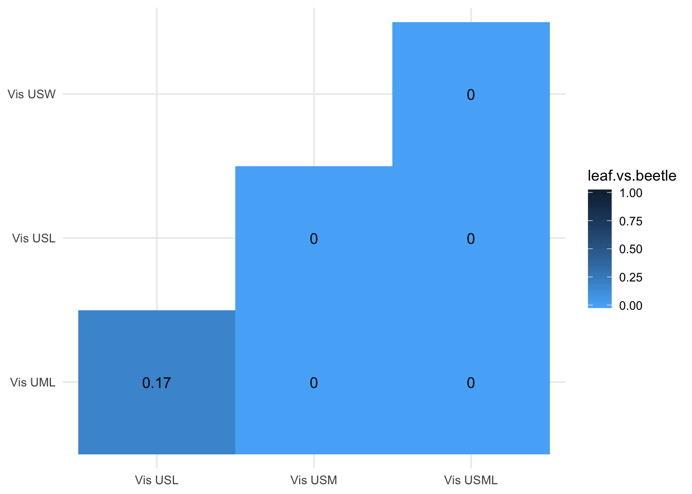
Original model output
sum.leaf.vs.beetle_d65.model1##
## Simultaneous Tests for General Linear Hypotheses
##
## Multiple Comparisons of Means: Tukey Contrasts
##
##
## Fit: lmer(formula = dS ~ peak_wl.leaf.vs.beetle + (1 | patch2) + (1 |
## patch1), data = compare.leaf.vs.beetle.model1, REML = F)
##
## Linear Hypotheses:
## Estimate
## contrast.UVSW..LW.leaf.vs.beetle - contrast.UV..MWLW.leaf.vs.beetle == 0 -0.10903
## contrast.UVSWMW...leaf.vs.beetle - contrast.UV..MWLW.leaf.vs.beetle == 0 -0.57455
## contrast.UVSWMWLW.leaf.vs.beetle - contrast.UV..MWLW.leaf.vs.beetle == 0 0.45280
## contrast.UVSWMW...leaf.vs.beetle - contrast.UVSW..LW.leaf.vs.beetle == 0 -0.46552
## contrast.UVSWMWLW.leaf.vs.beetle - contrast.UVSW..LW.leaf.vs.beetle == 0 0.56183
## contrast.UVSWMWLW.leaf.vs.beetle - contrast.UVSWMW...leaf.vs.beetle == 0 1.02735
## Std. Error
## contrast.UVSW..LW.leaf.vs.beetle - contrast.UV..MWLW.leaf.vs.beetle == 0 0.04988
## contrast.UVSWMW...leaf.vs.beetle - contrast.UV..MWLW.leaf.vs.beetle == 0 0.04988
## contrast.UVSWMWLW.leaf.vs.beetle - contrast.UV..MWLW.leaf.vs.beetle == 0 0.04988
## contrast.UVSWMW...leaf.vs.beetle - contrast.UVSW..LW.leaf.vs.beetle == 0 0.04988
## contrast.UVSWMWLW.leaf.vs.beetle - contrast.UVSW..LW.leaf.vs.beetle == 0 0.04988
## contrast.UVSWMWLW.leaf.vs.beetle - contrast.UVSWMW...leaf.vs.beetle == 0 0.04988
## z value
## contrast.UVSW..LW.leaf.vs.beetle - contrast.UV..MWLW.leaf.vs.beetle == 0 -2.186
## contrast.UVSWMW...leaf.vs.beetle - contrast.UV..MWLW.leaf.vs.beetle == 0 -11.518
## contrast.UVSWMWLW.leaf.vs.beetle - contrast.UV..MWLW.leaf.vs.beetle == 0 9.077
## contrast.UVSWMW...leaf.vs.beetle - contrast.UVSW..LW.leaf.vs.beetle == 0 -9.332
## contrast.UVSWMWLW.leaf.vs.beetle - contrast.UVSW..LW.leaf.vs.beetle == 0 11.263
## contrast.UVSWMWLW.leaf.vs.beetle - contrast.UVSWMW...leaf.vs.beetle == 0 20.595
## Pr(>|z|)
## contrast.UVSW..LW.leaf.vs.beetle - contrast.UV..MWLW.leaf.vs.beetle == 0 0.173
## contrast.UVSWMW...leaf.vs.beetle - contrast.UV..MWLW.leaf.vs.beetle == 0 <2e-16
## contrast.UVSWMWLW.leaf.vs.beetle - contrast.UV..MWLW.leaf.vs.beetle == 0 <2e-16
## contrast.UVSWMW...leaf.vs.beetle - contrast.UVSW..LW.leaf.vs.beetle == 0 <2e-16
## contrast.UVSWMWLW.leaf.vs.beetle - contrast.UVSW..LW.leaf.vs.beetle == 0 <2e-16
## contrast.UVSWMWLW.leaf.vs.beetle - contrast.UVSWMW...leaf.vs.beetle == 0 <2e-16
##
## contrast.UVSW..LW.leaf.vs.beetle - contrast.UV..MWLW.leaf.vs.beetle == 0
## contrast.UVSWMW...leaf.vs.beetle - contrast.UV..MWLW.leaf.vs.beetle == 0 ***
## contrast.UVSWMWLW.leaf.vs.beetle - contrast.UV..MWLW.leaf.vs.beetle == 0 ***
## contrast.UVSWMW...leaf.vs.beetle - contrast.UVSW..LW.leaf.vs.beetle == 0 ***
## contrast.UVSWMWLW.leaf.vs.beetle - contrast.UVSW..LW.leaf.vs.beetle == 0 ***
## contrast.UVSWMWLW.leaf.vs.beetle - contrast.UVSWMW...leaf.vs.beetle == 0 ***
## ---
## Signif. codes: 0 '***' 0.001 '**' 0.01 '*' 0.05 '.' 0.1 ' ' 1
## (Adjusted p values reported -- bonferroni method)Twilight
Anova(m.leaf.vs.beetle_twilight.model1) %>% pander()| Chisq | Df | Pr(>Chisq) | |
|---|---|---|---|
| peak_wl.leaf.vs.beetle | 488.9 | 3 | 1.225e-105 |
Click the tabs to see the p-value summary plot or the original model output
Pair-wise p-values
ggplot(data = heat1_twilight.model1[,c(2,4:5)], aes(x=VislistA_twilight.model1, y=VislistB_twilight.model1, fill=leaf.vs.beetle)) +
geom_tile()+
geom_text(aes(VislistA_twilight.model1, VislistB_twilight.model1, label = round(leaf.vs.beetle, 2))) +
scale_fill_continuous(high = "#132B43", low = "#56B1F7", limit=c(0,1))+ #delete if want to reverse the colour
theme_minimal()+
theme(axis.title.x=element_blank(),
axis.title.y=element_blank())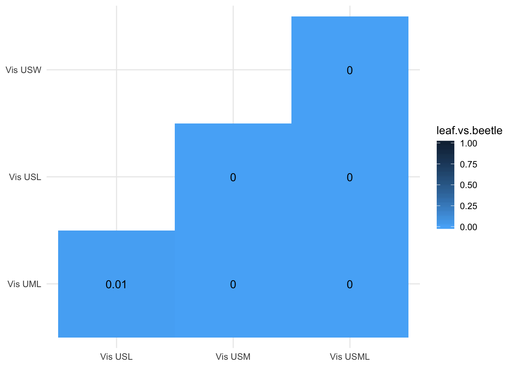
Original model output
sum.leaf.vs.beetle_twilight.model1##
## Simultaneous Tests for General Linear Hypotheses
##
## Multiple Comparisons of Means: Tukey Contrasts
##
##
## Fit: lmer(formula = dS ~ peak_wl.leaf.vs.beetle + (1 | patch2) + (1 |
## patch1), data = compare.leaf.vs.beetle_twilight.model1, REML = F)
##
## Linear Hypotheses:
## Estimate
## contrast.UVSW..LW.leaf.vs.beetle_twilight - contrast.UV..MWLW.leaf.vs.beetle_twilight == 0 -0.14766
## contrast.UVSWMW...leaf.vs.beetle_twilight - contrast.UV..MWLW.leaf.vs.beetle_twilight == 0 -0.62399
## contrast.UVSWMWLW.leaf.vs.beetle_twilight - contrast.UV..MWLW.leaf.vs.beetle_twilight == 0 0.38815
## contrast.UVSWMW...leaf.vs.beetle_twilight - contrast.UVSW..LW.leaf.vs.beetle_twilight == 0 -0.47633
## contrast.UVSWMWLW.leaf.vs.beetle_twilight - contrast.UVSW..LW.leaf.vs.beetle_twilight == 0 0.53581
## contrast.UVSWMWLW.leaf.vs.beetle_twilight - contrast.UVSWMW...leaf.vs.beetle_twilight == 0 1.01214
## Std. Error
## contrast.UVSW..LW.leaf.vs.beetle_twilight - contrast.UV..MWLW.leaf.vs.beetle_twilight == 0 0.04635
## contrast.UVSWMW...leaf.vs.beetle_twilight - contrast.UV..MWLW.leaf.vs.beetle_twilight == 0 0.04635
## contrast.UVSWMWLW.leaf.vs.beetle_twilight - contrast.UV..MWLW.leaf.vs.beetle_twilight == 0 0.04635
## contrast.UVSWMW...leaf.vs.beetle_twilight - contrast.UVSW..LW.leaf.vs.beetle_twilight == 0 0.04635
## contrast.UVSWMWLW.leaf.vs.beetle_twilight - contrast.UVSW..LW.leaf.vs.beetle_twilight == 0 0.04635
## contrast.UVSWMWLW.leaf.vs.beetle_twilight - contrast.UVSWMW...leaf.vs.beetle_twilight == 0 0.04635
## z value
## contrast.UVSW..LW.leaf.vs.beetle_twilight - contrast.UV..MWLW.leaf.vs.beetle_twilight == 0 -3.186
## contrast.UVSWMW...leaf.vs.beetle_twilight - contrast.UV..MWLW.leaf.vs.beetle_twilight == 0 -13.463
## contrast.UVSWMWLW.leaf.vs.beetle_twilight - contrast.UV..MWLW.leaf.vs.beetle_twilight == 0 8.375
## contrast.UVSWMW...leaf.vs.beetle_twilight - contrast.UVSW..LW.leaf.vs.beetle_twilight == 0 -10.277
## contrast.UVSWMWLW.leaf.vs.beetle_twilight - contrast.UVSW..LW.leaf.vs.beetle_twilight == 0 11.561
## contrast.UVSWMWLW.leaf.vs.beetle_twilight - contrast.UVSWMW...leaf.vs.beetle_twilight == 0 21.839
## Pr(>|z|)
## contrast.UVSW..LW.leaf.vs.beetle_twilight - contrast.UV..MWLW.leaf.vs.beetle_twilight == 0 0.00866
## contrast.UVSWMW...leaf.vs.beetle_twilight - contrast.UV..MWLW.leaf.vs.beetle_twilight == 0 < 2e-16
## contrast.UVSWMWLW.leaf.vs.beetle_twilight - contrast.UV..MWLW.leaf.vs.beetle_twilight == 0 < 2e-16
## contrast.UVSWMW...leaf.vs.beetle_twilight - contrast.UVSW..LW.leaf.vs.beetle_twilight == 0 < 2e-16
## contrast.UVSWMWLW.leaf.vs.beetle_twilight - contrast.UVSW..LW.leaf.vs.beetle_twilight == 0 < 2e-16
## contrast.UVSWMWLW.leaf.vs.beetle_twilight - contrast.UVSWMW...leaf.vs.beetle_twilight == 0 < 2e-16
##
## contrast.UVSW..LW.leaf.vs.beetle_twilight - contrast.UV..MWLW.leaf.vs.beetle_twilight == 0 **
## contrast.UVSWMW...leaf.vs.beetle_twilight - contrast.UV..MWLW.leaf.vs.beetle_twilight == 0 ***
## contrast.UVSWMWLW.leaf.vs.beetle_twilight - contrast.UV..MWLW.leaf.vs.beetle_twilight == 0 ***
## contrast.UVSWMW...leaf.vs.beetle_twilight - contrast.UVSW..LW.leaf.vs.beetle_twilight == 0 ***
## contrast.UVSWMWLW.leaf.vs.beetle_twilight - contrast.UVSW..LW.leaf.vs.beetle_twilight == 0 ***
## contrast.UVSWMWLW.leaf.vs.beetle_twilight - contrast.UVSWMW...leaf.vs.beetle_twilight == 0 ***
## ---
## Signif. codes: 0 '***' 0.001 '**' 0.01 '*' 0.05 '.' 0.1 ' ' 1
## (Adjusted p values reported -- bonferroni method)Beetle vs Flower
Daylight
Anova(m.flower.vs.beetle_twilight.model1) %>% pander()| Chisq | Df | Pr(>Chisq) | |
|---|---|---|---|
| peak_wl.flower.vs.beetle | 257.8 | 3 | 1.331e-55 |
Click the tabs to see the p-value summary plot or the original model output
Pair-wise p-values
ggplot(data = heat1_twilight.model1[,3:5,], aes(x=VislistA_twilight.model1, y=VislistB_twilight.model1, fill=flower.vs.beetle)) +
geom_tile()+
geom_text(aes(VislistA_twilight.model1, VislistB_twilight.model1, label = round(flower.vs.beetle, 2)))+
scale_fill_continuous(high = "#132B43", low = "#56B1F7", limit=c(0,1))+ #delete if want to reverse the colour
theme_minimal()+
theme(axis.title.x=element_blank(),
axis.title.y=element_blank())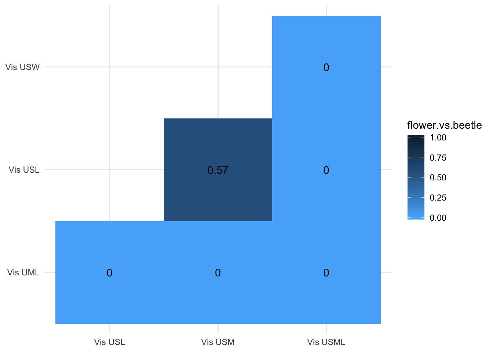
Original model output
sum.flower.vs.beetle_twilight.model1##
## Simultaneous Tests for General Linear Hypotheses
##
## Multiple Comparisons of Means: Tukey Contrasts
##
##
## Fit: lmer(formula = dS ~ peak_wl.flower.vs.beetle + (1 | patch2) +
## (1 | patch1), data = compare.flower.vs.beetle_twilight.model1,
## REML = F)
##
## Linear Hypotheses:
## Estimate
## contrast.UVSW..LW.flower.vs.beetle_twilight - contrast.UV..MWLW.flower.vs.beetle_twilight == 0 0.35978
## contrast.UVSWMW...flower.vs.beetle_twilight - contrast.UV..MWLW.flower.vs.beetle_twilight == 0 0.24697
## contrast.UVSWMWLW.flower.vs.beetle_twilight - contrast.UV..MWLW.flower.vs.beetle_twilight == 0 1.03501
## contrast.UVSWMW...flower.vs.beetle_twilight - contrast.UVSW..LW.flower.vs.beetle_twilight == 0 -0.11280
## contrast.UVSWMWLW.flower.vs.beetle_twilight - contrast.UVSW..LW.flower.vs.beetle_twilight == 0 0.67523
## contrast.UVSWMWLW.flower.vs.beetle_twilight - contrast.UVSWMW...flower.vs.beetle_twilight == 0 0.78803
## Std. Error
## contrast.UVSW..LW.flower.vs.beetle_twilight - contrast.UV..MWLW.flower.vs.beetle_twilight == 0 0.06753
## contrast.UVSWMW...flower.vs.beetle_twilight - contrast.UV..MWLW.flower.vs.beetle_twilight == 0 0.06753
## contrast.UVSWMWLW.flower.vs.beetle_twilight - contrast.UV..MWLW.flower.vs.beetle_twilight == 0 0.06753
## contrast.UVSWMW...flower.vs.beetle_twilight - contrast.UVSW..LW.flower.vs.beetle_twilight == 0 0.06753
## contrast.UVSWMWLW.flower.vs.beetle_twilight - contrast.UVSW..LW.flower.vs.beetle_twilight == 0 0.06753
## contrast.UVSWMWLW.flower.vs.beetle_twilight - contrast.UVSWMW...flower.vs.beetle_twilight == 0 0.06753
## z value
## contrast.UVSW..LW.flower.vs.beetle_twilight - contrast.UV..MWLW.flower.vs.beetle_twilight == 0 5.328
## contrast.UVSWMW...flower.vs.beetle_twilight - contrast.UV..MWLW.flower.vs.beetle_twilight == 0 3.657
## contrast.UVSWMWLW.flower.vs.beetle_twilight - contrast.UV..MWLW.flower.vs.beetle_twilight == 0 15.327
## contrast.UVSWMW...flower.vs.beetle_twilight - contrast.UVSW..LW.flower.vs.beetle_twilight == 0 -1.670
## contrast.UVSWMWLW.flower.vs.beetle_twilight - contrast.UVSW..LW.flower.vs.beetle_twilight == 0 9.999
## contrast.UVSWMWLW.flower.vs.beetle_twilight - contrast.UVSWMW...flower.vs.beetle_twilight == 0 11.670
## Pr(>|z|)
## contrast.UVSW..LW.flower.vs.beetle_twilight - contrast.UV..MWLW.flower.vs.beetle_twilight == 0 5.96e-07
## contrast.UVSWMW...flower.vs.beetle_twilight - contrast.UV..MWLW.flower.vs.beetle_twilight == 0 0.00153
## contrast.UVSWMWLW.flower.vs.beetle_twilight - contrast.UV..MWLW.flower.vs.beetle_twilight == 0 < 2e-16
## contrast.UVSWMW...flower.vs.beetle_twilight - contrast.UVSW..LW.flower.vs.beetle_twilight == 0 0.56893
## contrast.UVSWMWLW.flower.vs.beetle_twilight - contrast.UVSW..LW.flower.vs.beetle_twilight == 0 < 2e-16
## contrast.UVSWMWLW.flower.vs.beetle_twilight - contrast.UVSWMW...flower.vs.beetle_twilight == 0 < 2e-16
##
## contrast.UVSW..LW.flower.vs.beetle_twilight - contrast.UV..MWLW.flower.vs.beetle_twilight == 0 ***
## contrast.UVSWMW...flower.vs.beetle_twilight - contrast.UV..MWLW.flower.vs.beetle_twilight == 0 **
## contrast.UVSWMWLW.flower.vs.beetle_twilight - contrast.UV..MWLW.flower.vs.beetle_twilight == 0 ***
## contrast.UVSWMW...flower.vs.beetle_twilight - contrast.UVSW..LW.flower.vs.beetle_twilight == 0
## contrast.UVSWMWLW.flower.vs.beetle_twilight - contrast.UVSW..LW.flower.vs.beetle_twilight == 0 ***
## contrast.UVSWMWLW.flower.vs.beetle_twilight - contrast.UVSWMW...flower.vs.beetle_twilight == 0 ***
## ---
## Signif. codes: 0 '***' 0.001 '**' 0.01 '*' 0.05 '.' 0.1 ' ' 1
## (Adjusted p values reported -- bonferroni method)Twilight
Anova(m.flower.vs.beetle_twilight.model1) %>% pander()| Chisq | Df | Pr(>Chisq) | |
|---|---|---|---|
| peak_wl.flower.vs.beetle | 257.8 | 3 | 1.331e-55 |
Click the tabs to see the p-value summary plot or the original model output
Pair-wise p-values
ggplot(data = heat1_twilight.model1[,c(1,4:5)], aes(x=VislistA_twilight.model1, y=VislistB_twilight.model1, fill=leaf.vs.flower)) +
geom_tile()+
geom_text(aes(VislistA_twilight.model1, VislistB_twilight.model1, label = round(leaf.vs.flower, 2)))+
scale_fill_continuous(high = "#132B43", low = "#56B1F7", limit=c(0,1))+ #delete if want to reverse the colour
theme_minimal()+
theme(axis.title.x=element_blank(),
axis.title.y=element_blank())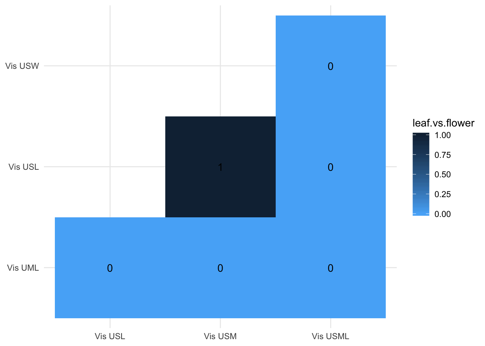
Original model output
sum.leaf.vs.flower_twilight.model1##
## Simultaneous Tests for General Linear Hypotheses
##
## Multiple Comparisons of Means: Tukey Contrasts
##
##
## Fit: lmer(formula = dS ~ peak_wl.leaf.vs.flower + (1 | patch2) + (1 |
## patch1), data = compare.leaf.vs.flower_twilight.model1, REML = F)
##
## Linear Hypotheses:
## Estimate
## contrast.UVSW..LW.leaf.vs.flower_twilight - contrast.UV..MWLW.leaf.vs.flower_twilight == 0 0.28995
## contrast.UVSWMW...leaf.vs.flower_twilight - contrast.UV..MWLW.leaf.vs.flower_twilight == 0 0.30736
## contrast.UVSWMWLW.leaf.vs.flower_twilight - contrast.UV..MWLW.leaf.vs.flower_twilight == 0 0.88756
## contrast.UVSWMW...leaf.vs.flower_twilight - contrast.UVSW..LW.leaf.vs.flower_twilight == 0 0.01741
## contrast.UVSWMWLW.leaf.vs.flower_twilight - contrast.UVSW..LW.leaf.vs.flower_twilight == 0 0.59762
## contrast.UVSWMWLW.leaf.vs.flower_twilight - contrast.UVSWMW...leaf.vs.flower_twilight == 0 0.58021
## Std. Error
## contrast.UVSW..LW.leaf.vs.flower_twilight - contrast.UV..MWLW.leaf.vs.flower_twilight == 0 0.04757
## contrast.UVSWMW...leaf.vs.flower_twilight - contrast.UV..MWLW.leaf.vs.flower_twilight == 0 0.04757
## contrast.UVSWMWLW.leaf.vs.flower_twilight - contrast.UV..MWLW.leaf.vs.flower_twilight == 0 0.04757
## contrast.UVSWMW...leaf.vs.flower_twilight - contrast.UVSW..LW.leaf.vs.flower_twilight == 0 0.04757
## contrast.UVSWMWLW.leaf.vs.flower_twilight - contrast.UVSW..LW.leaf.vs.flower_twilight == 0 0.04757
## contrast.UVSWMWLW.leaf.vs.flower_twilight - contrast.UVSWMW...leaf.vs.flower_twilight == 0 0.04757
## z value
## contrast.UVSW..LW.leaf.vs.flower_twilight - contrast.UV..MWLW.leaf.vs.flower_twilight == 0 6.095
## contrast.UVSWMW...leaf.vs.flower_twilight - contrast.UV..MWLW.leaf.vs.flower_twilight == 0 6.461
## contrast.UVSWMWLW.leaf.vs.flower_twilight - contrast.UV..MWLW.leaf.vs.flower_twilight == 0 18.656
## contrast.UVSWMW...leaf.vs.flower_twilight - contrast.UVSW..LW.leaf.vs.flower_twilight == 0 0.366
## contrast.UVSWMWLW.leaf.vs.flower_twilight - contrast.UVSW..LW.leaf.vs.flower_twilight == 0 12.562
## contrast.UVSWMWLW.leaf.vs.flower_twilight - contrast.UVSWMW...leaf.vs.flower_twilight == 0 12.196
## Pr(>|z|)
## contrast.UVSW..LW.leaf.vs.flower_twilight - contrast.UV..MWLW.leaf.vs.flower_twilight == 0 6.58e-09
## contrast.UVSWMW...leaf.vs.flower_twilight - contrast.UV..MWLW.leaf.vs.flower_twilight == 0 6.26e-10
## contrast.UVSWMWLW.leaf.vs.flower_twilight - contrast.UV..MWLW.leaf.vs.flower_twilight == 0 < 2e-16
## contrast.UVSWMW...leaf.vs.flower_twilight - contrast.UVSW..LW.leaf.vs.flower_twilight == 0 1
## contrast.UVSWMWLW.leaf.vs.flower_twilight - contrast.UVSW..LW.leaf.vs.flower_twilight == 0 < 2e-16
## contrast.UVSWMWLW.leaf.vs.flower_twilight - contrast.UVSWMW...leaf.vs.flower_twilight == 0 < 2e-16
##
## contrast.UVSW..LW.leaf.vs.flower_twilight - contrast.UV..MWLW.leaf.vs.flower_twilight == 0 ***
## contrast.UVSWMW...leaf.vs.flower_twilight - contrast.UV..MWLW.leaf.vs.flower_twilight == 0 ***
## contrast.UVSWMWLW.leaf.vs.flower_twilight - contrast.UV..MWLW.leaf.vs.flower_twilight == 0 ***
## contrast.UVSWMW...leaf.vs.flower_twilight - contrast.UVSW..LW.leaf.vs.flower_twilight == 0
## contrast.UVSWMWLW.leaf.vs.flower_twilight - contrast.UVSW..LW.leaf.vs.flower_twilight == 0 ***
## contrast.UVSWMWLW.leaf.vs.flower_twilight - contrast.UVSWMW...leaf.vs.flower_twilight == 0 ***
## ---
## Signif. codes: 0 '***' 0.001 '**' 0.01 '*' 0.05 '.' 0.1 ' ' 1
## (Adjusted p values reported -- bonferroni method)Result of visual model 2: comparing visual systems with different peak of LWS photoreceptor
Click the tabs to see the results in each comparison groups ( Leaf vs. Flower / Leaf vs. Beetle / Beetle vs. Flower) and under different light conditions ( Daylight / Twilight)
Leaf vs Flower
Daylight
Anova(m.leaf.vs.flower_d65.model2) %>% pander()| Chisq | Df | Pr(>Chisq) | |
|---|---|---|---|
| peak_wl.leaf.vs.flower | 1713 | 5 | 0 |
Click the tabs to see the p-value summary plot or the original model output
Pair-wise p-values
ggplot(data = heat1_d65.model2[,c(1,4:5)], aes(x=VislistA_d65.model2, y=VislistB_d65.model2, fill=leaf.vs.flower)) +
geom_tile()+
geom_text(aes(VislistA_d65.model2, VislistB_d65.model2, label = round(leaf.vs.flower, 2)))+
scale_fill_continuous(high = "#132B43", low = "#56B1F7", limit=c(0,1))+ #delete if want to reverse the colour
theme_minimal()+
theme(axis.title.x=element_blank(),
axis.title.y=element_blank())
Original model output
sum.leaf.vs.flower_d65.model2##
## Simultaneous Tests for General Linear Hypotheses
##
## Multiple Comparisons of Means: Tukey Contrasts
##
##
## Fit: lmer(formula = dS ~ peak_wl.leaf.vs.flower + (1 | patch2) + (1 |
## patch1), data = compare.leaf.vs.flower.model2, REML = F)
##
## Linear Hypotheses:
## Estimate Std. Error
## bup600.leaf.vs.flower - bup580.leaf.vs.flower == 0 0.24412 0.01775
## bup620.leaf.vs.flower - bup580.leaf.vs.flower == 0 0.52938 0.01775
## bup640.leaf.vs.flower - bup580.leaf.vs.flower == 0 0.62627 0.01775
## bup660.leaf.vs.flower - bup580.leaf.vs.flower == 0 0.44845 0.01775
## bup680.leaf.vs.flower - bup580.leaf.vs.flower == 0 0.21500 0.01775
## bup620.leaf.vs.flower - bup600.leaf.vs.flower == 0 0.28526 0.01775
## bup640.leaf.vs.flower - bup600.leaf.vs.flower == 0 0.38215 0.01775
## bup660.leaf.vs.flower - bup600.leaf.vs.flower == 0 0.20433 0.01775
## bup680.leaf.vs.flower - bup600.leaf.vs.flower == 0 -0.02912 0.01775
## bup640.leaf.vs.flower - bup620.leaf.vs.flower == 0 0.09689 0.01775
## bup660.leaf.vs.flower - bup620.leaf.vs.flower == 0 -0.08093 0.01775
## bup680.leaf.vs.flower - bup620.leaf.vs.flower == 0 -0.31438 0.01775
## bup660.leaf.vs.flower - bup640.leaf.vs.flower == 0 -0.17782 0.01775
## bup680.leaf.vs.flower - bup640.leaf.vs.flower == 0 -0.41127 0.01775
## bup680.leaf.vs.flower - bup660.leaf.vs.flower == 0 -0.23345 0.01775
## z value Pr(>|z|)
## bup600.leaf.vs.flower - bup580.leaf.vs.flower == 0 13.751 < 2e-16 ***
## bup620.leaf.vs.flower - bup580.leaf.vs.flower == 0 29.819 < 2e-16 ***
## bup640.leaf.vs.flower - bup580.leaf.vs.flower == 0 35.276 < 2e-16 ***
## bup660.leaf.vs.flower - bup580.leaf.vs.flower == 0 25.260 < 2e-16 ***
## bup680.leaf.vs.flower - bup580.leaf.vs.flower == 0 12.110 < 2e-16 ***
## bup620.leaf.vs.flower - bup600.leaf.vs.flower == 0 16.068 < 2e-16 ***
## bup640.leaf.vs.flower - bup600.leaf.vs.flower == 0 21.526 < 2e-16 ***
## bup660.leaf.vs.flower - bup600.leaf.vs.flower == 0 11.509 < 2e-16 ***
## bup680.leaf.vs.flower - bup600.leaf.vs.flower == 0 -1.640 1
## bup640.leaf.vs.flower - bup620.leaf.vs.flower == 0 5.457 7.25e-07 ***
## bup660.leaf.vs.flower - bup620.leaf.vs.flower == 0 -4.559 7.72e-05 ***
## bup680.leaf.vs.flower - bup620.leaf.vs.flower == 0 -17.708 < 2e-16 ***
## bup660.leaf.vs.flower - bup640.leaf.vs.flower == 0 -10.016 < 2e-16 ***
## bup680.leaf.vs.flower - bup640.leaf.vs.flower == 0 -23.166 < 2e-16 ***
## bup680.leaf.vs.flower - bup660.leaf.vs.flower == 0 -13.150 < 2e-16 ***
## ---
## Signif. codes: 0 '***' 0.001 '**' 0.01 '*' 0.05 '.' 0.1 ' ' 1
## (Adjusted p values reported -- bonferroni method)Twilight
Anova(m.leaf.vs.flower_twilight.model2) %>% pander()| Chisq | Df | Pr(>Chisq) | |
|---|---|---|---|
| peak_wl.leaf.vs.flower | 2513 | 5 | 0 |
Click the tabs to see the p-value summary plot or the original model output
Pair-wise p-values
ggplot(data = heat1_twilight.model2[,c(1,4:5)], aes(x=VislistA_twilight.model2, y=VislistB_twilight.model2, fill=leaf.vs.flower)) +
geom_tile()+
geom_text(aes(VislistA_twilight.model2, VislistB_twilight.model2, label = round(leaf.vs.flower, 2)))+
scale_fill_continuous(high = "#132B43", low = "#56B1F7", limit=c(0,1))+ #delete if want to reverse the colour
theme_minimal()+
theme(axis.title.x=element_blank(),
axis.title.y=element_blank())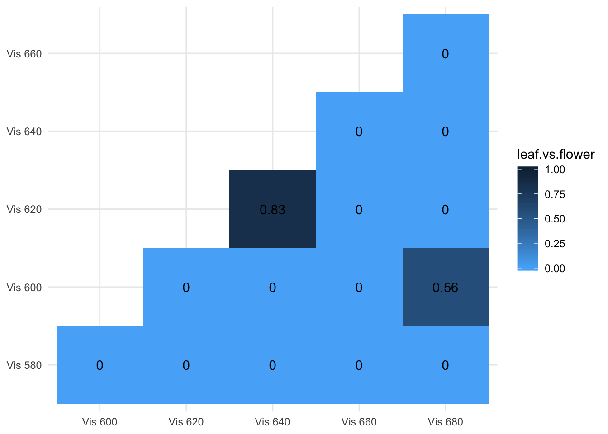
Original model output
sum.leaf.vs.flower_twilight.model2##
## Simultaneous Tests for General Linear Hypotheses
##
## Multiple Comparisons of Means: Tukey Contrasts
##
##
## Fit: lmer(formula = dS ~ peak_wl.leaf.vs.flower + (1 | patch2) + (1 |
## patch1), data = compare.leaf.vs.flower_twilight.model2, REML = F)
##
## Linear Hypotheses:
## Estimate
## bup600.leaf.vs.flower_twilight - bup580.leaf.vs.flower_twilight == 0 0.33799
## bup620.leaf.vs.flower_twilight - bup580.leaf.vs.flower_twilight == 0 0.67777
## bup640.leaf.vs.flower_twilight - bup580.leaf.vs.flower_twilight == 0 0.70976
## bup660.leaf.vs.flower_twilight - bup580.leaf.vs.flower_twilight == 0 0.48063
## bup680.leaf.vs.flower_twilight - bup580.leaf.vs.flower_twilight == 0 0.30326
## bup620.leaf.vs.flower_twilight - bup600.leaf.vs.flower_twilight == 0 0.33978
## bup640.leaf.vs.flower_twilight - bup600.leaf.vs.flower_twilight == 0 0.37177
## bup660.leaf.vs.flower_twilight - bup600.leaf.vs.flower_twilight == 0 0.14264
## bup680.leaf.vs.flower_twilight - bup600.leaf.vs.flower_twilight == 0 -0.03473
## bup640.leaf.vs.flower_twilight - bup620.leaf.vs.flower_twilight == 0 0.03199
## bup660.leaf.vs.flower_twilight - bup620.leaf.vs.flower_twilight == 0 -0.19714
## bup680.leaf.vs.flower_twilight - bup620.leaf.vs.flower_twilight == 0 -0.37451
## bup660.leaf.vs.flower_twilight - bup640.leaf.vs.flower_twilight == 0 -0.22913
## bup680.leaf.vs.flower_twilight - bup640.leaf.vs.flower_twilight == 0 -0.40651
## bup680.leaf.vs.flower_twilight - bup660.leaf.vs.flower_twilight == 0 -0.17737
## Std. Error
## bup600.leaf.vs.flower_twilight - bup580.leaf.vs.flower_twilight == 0 0.01671
## bup620.leaf.vs.flower_twilight - bup580.leaf.vs.flower_twilight == 0 0.01671
## bup640.leaf.vs.flower_twilight - bup580.leaf.vs.flower_twilight == 0 0.01671
## bup660.leaf.vs.flower_twilight - bup580.leaf.vs.flower_twilight == 0 0.01671
## bup680.leaf.vs.flower_twilight - bup580.leaf.vs.flower_twilight == 0 0.01671
## bup620.leaf.vs.flower_twilight - bup600.leaf.vs.flower_twilight == 0 0.01671
## bup640.leaf.vs.flower_twilight - bup600.leaf.vs.flower_twilight == 0 0.01671
## bup660.leaf.vs.flower_twilight - bup600.leaf.vs.flower_twilight == 0 0.01671
## bup680.leaf.vs.flower_twilight - bup600.leaf.vs.flower_twilight == 0 0.01671
## bup640.leaf.vs.flower_twilight - bup620.leaf.vs.flower_twilight == 0 0.01671
## bup660.leaf.vs.flower_twilight - bup620.leaf.vs.flower_twilight == 0 0.01671
## bup680.leaf.vs.flower_twilight - bup620.leaf.vs.flower_twilight == 0 0.01671
## bup660.leaf.vs.flower_twilight - bup640.leaf.vs.flower_twilight == 0 0.01671
## bup680.leaf.vs.flower_twilight - bup640.leaf.vs.flower_twilight == 0 0.01671
## bup680.leaf.vs.flower_twilight - bup660.leaf.vs.flower_twilight == 0 0.01671
## z value
## bup600.leaf.vs.flower_twilight - bup580.leaf.vs.flower_twilight == 0 20.227
## bup620.leaf.vs.flower_twilight - bup580.leaf.vs.flower_twilight == 0 40.561
## bup640.leaf.vs.flower_twilight - bup580.leaf.vs.flower_twilight == 0 42.476
## bup660.leaf.vs.flower_twilight - bup580.leaf.vs.flower_twilight == 0 28.763
## bup680.leaf.vs.flower_twilight - bup580.leaf.vs.flower_twilight == 0 18.148
## bup620.leaf.vs.flower_twilight - bup600.leaf.vs.flower_twilight == 0 20.334
## bup640.leaf.vs.flower_twilight - bup600.leaf.vs.flower_twilight == 0 22.249
## bup660.leaf.vs.flower_twilight - bup600.leaf.vs.flower_twilight == 0 8.536
## bup680.leaf.vs.flower_twilight - bup600.leaf.vs.flower_twilight == 0 -2.079
## bup640.leaf.vs.flower_twilight - bup620.leaf.vs.flower_twilight == 0 1.915
## bup660.leaf.vs.flower_twilight - bup620.leaf.vs.flower_twilight == 0 -11.798
## bup680.leaf.vs.flower_twilight - bup620.leaf.vs.flower_twilight == 0 -22.413
## bup660.leaf.vs.flower_twilight - bup640.leaf.vs.flower_twilight == 0 -13.712
## bup680.leaf.vs.flower_twilight - bup640.leaf.vs.flower_twilight == 0 -24.327
## bup680.leaf.vs.flower_twilight - bup660.leaf.vs.flower_twilight == 0 -10.615
## Pr(>|z|)
## bup600.leaf.vs.flower_twilight - bup580.leaf.vs.flower_twilight == 0 <2e-16
## bup620.leaf.vs.flower_twilight - bup580.leaf.vs.flower_twilight == 0 <2e-16
## bup640.leaf.vs.flower_twilight - bup580.leaf.vs.flower_twilight == 0 <2e-16
## bup660.leaf.vs.flower_twilight - bup580.leaf.vs.flower_twilight == 0 <2e-16
## bup680.leaf.vs.flower_twilight - bup580.leaf.vs.flower_twilight == 0 <2e-16
## bup620.leaf.vs.flower_twilight - bup600.leaf.vs.flower_twilight == 0 <2e-16
## bup640.leaf.vs.flower_twilight - bup600.leaf.vs.flower_twilight == 0 <2e-16
## bup660.leaf.vs.flower_twilight - bup600.leaf.vs.flower_twilight == 0 <2e-16
## bup680.leaf.vs.flower_twilight - bup600.leaf.vs.flower_twilight == 0 0.565
## bup640.leaf.vs.flower_twilight - bup620.leaf.vs.flower_twilight == 0 0.833
## bup660.leaf.vs.flower_twilight - bup620.leaf.vs.flower_twilight == 0 <2e-16
## bup680.leaf.vs.flower_twilight - bup620.leaf.vs.flower_twilight == 0 <2e-16
## bup660.leaf.vs.flower_twilight - bup640.leaf.vs.flower_twilight == 0 <2e-16
## bup680.leaf.vs.flower_twilight - bup640.leaf.vs.flower_twilight == 0 <2e-16
## bup680.leaf.vs.flower_twilight - bup660.leaf.vs.flower_twilight == 0 <2e-16
##
## bup600.leaf.vs.flower_twilight - bup580.leaf.vs.flower_twilight == 0 ***
## bup620.leaf.vs.flower_twilight - bup580.leaf.vs.flower_twilight == 0 ***
## bup640.leaf.vs.flower_twilight - bup580.leaf.vs.flower_twilight == 0 ***
## bup660.leaf.vs.flower_twilight - bup580.leaf.vs.flower_twilight == 0 ***
## bup680.leaf.vs.flower_twilight - bup580.leaf.vs.flower_twilight == 0 ***
## bup620.leaf.vs.flower_twilight - bup600.leaf.vs.flower_twilight == 0 ***
## bup640.leaf.vs.flower_twilight - bup600.leaf.vs.flower_twilight == 0 ***
## bup660.leaf.vs.flower_twilight - bup600.leaf.vs.flower_twilight == 0 ***
## bup680.leaf.vs.flower_twilight - bup600.leaf.vs.flower_twilight == 0
## bup640.leaf.vs.flower_twilight - bup620.leaf.vs.flower_twilight == 0
## bup660.leaf.vs.flower_twilight - bup620.leaf.vs.flower_twilight == 0 ***
## bup680.leaf.vs.flower_twilight - bup620.leaf.vs.flower_twilight == 0 ***
## bup660.leaf.vs.flower_twilight - bup640.leaf.vs.flower_twilight == 0 ***
## bup680.leaf.vs.flower_twilight - bup640.leaf.vs.flower_twilight == 0 ***
## bup680.leaf.vs.flower_twilight - bup660.leaf.vs.flower_twilight == 0 ***
## ---
## Signif. codes: 0 '***' 0.001 '**' 0.01 '*' 0.05 '.' 0.1 ' ' 1
## (Adjusted p values reported -- bonferroni method)Leaf vs Beetle
Daylight
Anova(m.leaf.vs.beetle_d65.model2) %>% pander()| Chisq | Df | Pr(>Chisq) | |
|---|---|---|---|
| peak_wl.leaf.vs.beetle | 6680 | 5 | 0 |
Click the tabs to see the p-value summary plot or the original model output
Pair-wise p-values
ggplot(data = heat1_d65.model2[,c(2,4:5)], aes(x=VislistA_d65.model2, y=VislistB_d65.model2, fill=leaf.vs.beetle)) +
geom_tile()+
geom_text(aes(VislistA_d65.model2, VislistB_d65.model2, label = round(leaf.vs.beetle, 2))) +
scale_fill_continuous(high = "#132B43", low = "#56B1F7", limit=c(0,1))+ #delete if want to reverse the colour
theme_minimal()+
theme(axis.title.x=element_blank(),
axis.title.y=element_blank())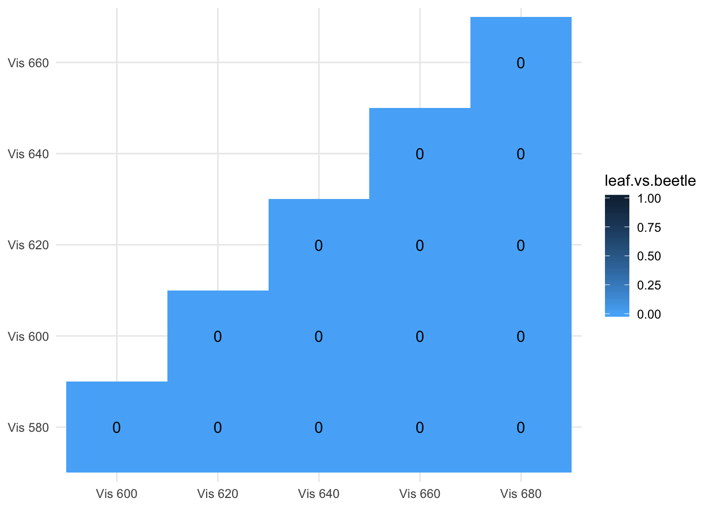
Original model output
sum.leaf.vs.beetle_d65.model2##
## Simultaneous Tests for General Linear Hypotheses
##
## Multiple Comparisons of Means: Tukey Contrasts
##
##
## Fit: lmer(formula = dS ~ peak_wl.leaf.vs.beetle + (1 | patch2) + (1 |
## patch1), data = compare.leaf.vs.beetle.model2, REML = F)
##
## Linear Hypotheses:
## Estimate Std. Error
## bup600.leaf.vs.beetle - bup580.leaf.vs.beetle == 0 0.39775 0.02123
## bup620.leaf.vs.beetle - bup580.leaf.vs.beetle == 0 0.78833 0.02123
## bup640.leaf.vs.beetle - bup580.leaf.vs.beetle == 0 1.07273 0.02123
## bup660.leaf.vs.beetle - bup580.leaf.vs.beetle == 0 1.25623 0.02123
## bup680.leaf.vs.beetle - bup580.leaf.vs.beetle == 0 1.45229 0.02123
## bup620.leaf.vs.beetle - bup600.leaf.vs.beetle == 0 0.39057 0.02123
## bup640.leaf.vs.beetle - bup600.leaf.vs.beetle == 0 0.67498 0.02123
## bup660.leaf.vs.beetle - bup600.leaf.vs.beetle == 0 0.85848 0.02123
## bup680.leaf.vs.beetle - bup600.leaf.vs.beetle == 0 1.05454 0.02123
## bup640.leaf.vs.beetle - bup620.leaf.vs.beetle == 0 0.28440 0.02123
## bup660.leaf.vs.beetle - bup620.leaf.vs.beetle == 0 0.46790 0.02123
## bup680.leaf.vs.beetle - bup620.leaf.vs.beetle == 0 0.66397 0.02123
## bup660.leaf.vs.beetle - bup640.leaf.vs.beetle == 0 0.18350 0.02123
## bup680.leaf.vs.beetle - bup640.leaf.vs.beetle == 0 0.37956 0.02123
## bup680.leaf.vs.beetle - bup660.leaf.vs.beetle == 0 0.19606 0.02123
## z value Pr(>|z|)
## bup600.leaf.vs.beetle - bup580.leaf.vs.beetle == 0 18.737 <2e-16 ***
## bup620.leaf.vs.beetle - bup580.leaf.vs.beetle == 0 37.135 <2e-16 ***
## bup640.leaf.vs.beetle - bup580.leaf.vs.beetle == 0 50.532 <2e-16 ***
## bup660.leaf.vs.beetle - bup580.leaf.vs.beetle == 0 59.176 <2e-16 ***
## bup680.leaf.vs.beetle - bup580.leaf.vs.beetle == 0 68.412 <2e-16 ***
## bup620.leaf.vs.beetle - bup600.leaf.vs.beetle == 0 18.398 <2e-16 ***
## bup640.leaf.vs.beetle - bup600.leaf.vs.beetle == 0 31.796 <2e-16 ***
## bup660.leaf.vs.beetle - bup600.leaf.vs.beetle == 0 40.440 <2e-16 ***
## bup680.leaf.vs.beetle - bup600.leaf.vs.beetle == 0 49.675 <2e-16 ***
## bup640.leaf.vs.beetle - bup620.leaf.vs.beetle == 0 13.397 <2e-16 ***
## bup660.leaf.vs.beetle - bup620.leaf.vs.beetle == 0 22.041 <2e-16 ***
## bup680.leaf.vs.beetle - bup620.leaf.vs.beetle == 0 31.277 <2e-16 ***
## bup660.leaf.vs.beetle - bup640.leaf.vs.beetle == 0 8.644 <2e-16 ***
## bup680.leaf.vs.beetle - bup640.leaf.vs.beetle == 0 17.880 <2e-16 ***
## bup680.leaf.vs.beetle - bup660.leaf.vs.beetle == 0 9.236 <2e-16 ***
## ---
## Signif. codes: 0 '***' 0.001 '**' 0.01 '*' 0.05 '.' 0.1 ' ' 1
## (Adjusted p values reported -- bonferroni method)Twilight
Anova(m.leaf.vs.beetle_twilight.model2) %>% pander()| Chisq | Df | Pr(>Chisq) | |
|---|---|---|---|
| peak_wl.leaf.vs.beetle | 9992 | 5 | 0 |
Click the tabs to see the p-value summary plot or the original model output
Pair-wise p-values
ggplot(data = heat1_twilight.model2[,c(2,4:5)], aes(x=VislistA_twilight.model2, y=VislistB_twilight.model2, fill=leaf.vs.beetle)) +
geom_tile()+
geom_text(aes(VislistA_twilight.model2, VislistB_twilight.model2, label = round(leaf.vs.beetle, 2))) +
scale_fill_continuous(high = "#132B43", low = "#56B1F7", limit=c(0,1))+ #delete if want to reverse the colour
theme_minimal()+
theme(axis.title.x=element_blank(),
axis.title.y=element_blank())
Original model output
sum.leaf.vs.beetle_twilight.model2##
## Simultaneous Tests for General Linear Hypotheses
##
## Multiple Comparisons of Means: Tukey Contrasts
##
##
## Fit: lmer(formula = dS ~ peak_wl.leaf.vs.beetle + (1 | patch2) + (1 |
## patch1), data = compare.leaf.vs.beetle_twilight.model2, REML = F)
##
## Linear Hypotheses:
## Estimate
## bup600.leaf.vs.beetle_twilight - bup580.leaf.vs.beetle_twilight == 0 0.51006
## bup620.leaf.vs.beetle_twilight - bup580.leaf.vs.beetle_twilight == 0 1.00162
## bup640.leaf.vs.beetle_twilight - bup580.leaf.vs.beetle_twilight == 0 1.34108
## bup660.leaf.vs.beetle_twilight - bup580.leaf.vs.beetle_twilight == 0 1.57985
## bup680.leaf.vs.beetle_twilight - bup580.leaf.vs.beetle_twilight == 0 1.85649
## bup620.leaf.vs.beetle_twilight - bup600.leaf.vs.beetle_twilight == 0 0.49156
## bup640.leaf.vs.beetle_twilight - bup600.leaf.vs.beetle_twilight == 0 0.83103
## bup660.leaf.vs.beetle_twilight - bup600.leaf.vs.beetle_twilight == 0 1.06979
## bup680.leaf.vs.beetle_twilight - bup600.leaf.vs.beetle_twilight == 0 1.34643
## bup640.leaf.vs.beetle_twilight - bup620.leaf.vs.beetle_twilight == 0 0.33946
## bup660.leaf.vs.beetle_twilight - bup620.leaf.vs.beetle_twilight == 0 0.57823
## bup680.leaf.vs.beetle_twilight - bup620.leaf.vs.beetle_twilight == 0 0.85487
## bup660.leaf.vs.beetle_twilight - bup640.leaf.vs.beetle_twilight == 0 0.23876
## bup680.leaf.vs.beetle_twilight - bup640.leaf.vs.beetle_twilight == 0 0.51540
## bup680.leaf.vs.beetle_twilight - bup660.leaf.vs.beetle_twilight == 0 0.27664
## Std. Error
## bup600.leaf.vs.beetle_twilight - bup580.leaf.vs.beetle_twilight == 0 0.02197
## bup620.leaf.vs.beetle_twilight - bup580.leaf.vs.beetle_twilight == 0 0.02197
## bup640.leaf.vs.beetle_twilight - bup580.leaf.vs.beetle_twilight == 0 0.02197
## bup660.leaf.vs.beetle_twilight - bup580.leaf.vs.beetle_twilight == 0 0.02197
## bup680.leaf.vs.beetle_twilight - bup580.leaf.vs.beetle_twilight == 0 0.02197
## bup620.leaf.vs.beetle_twilight - bup600.leaf.vs.beetle_twilight == 0 0.02197
## bup640.leaf.vs.beetle_twilight - bup600.leaf.vs.beetle_twilight == 0 0.02197
## bup660.leaf.vs.beetle_twilight - bup600.leaf.vs.beetle_twilight == 0 0.02197
## bup680.leaf.vs.beetle_twilight - bup600.leaf.vs.beetle_twilight == 0 0.02197
## bup640.leaf.vs.beetle_twilight - bup620.leaf.vs.beetle_twilight == 0 0.02197
## bup660.leaf.vs.beetle_twilight - bup620.leaf.vs.beetle_twilight == 0 0.02197
## bup680.leaf.vs.beetle_twilight - bup620.leaf.vs.beetle_twilight == 0 0.02197
## bup660.leaf.vs.beetle_twilight - bup640.leaf.vs.beetle_twilight == 0 0.02197
## bup680.leaf.vs.beetle_twilight - bup640.leaf.vs.beetle_twilight == 0 0.02197
## bup680.leaf.vs.beetle_twilight - bup660.leaf.vs.beetle_twilight == 0 0.02197
## z value
## bup600.leaf.vs.beetle_twilight - bup580.leaf.vs.beetle_twilight == 0 23.21
## bup620.leaf.vs.beetle_twilight - bup580.leaf.vs.beetle_twilight == 0 45.58
## bup640.leaf.vs.beetle_twilight - bup580.leaf.vs.beetle_twilight == 0 61.03
## bup660.leaf.vs.beetle_twilight - bup580.leaf.vs.beetle_twilight == 0 71.90
## bup680.leaf.vs.beetle_twilight - bup580.leaf.vs.beetle_twilight == 0 84.49
## bup620.leaf.vs.beetle_twilight - bup600.leaf.vs.beetle_twilight == 0 22.37
## bup640.leaf.vs.beetle_twilight - bup600.leaf.vs.beetle_twilight == 0 37.82
## bup660.leaf.vs.beetle_twilight - bup600.leaf.vs.beetle_twilight == 0 48.69
## bup680.leaf.vs.beetle_twilight - bup600.leaf.vs.beetle_twilight == 0 61.27
## bup640.leaf.vs.beetle_twilight - bup620.leaf.vs.beetle_twilight == 0 15.45
## bup660.leaf.vs.beetle_twilight - bup620.leaf.vs.beetle_twilight == 0 26.32
## bup680.leaf.vs.beetle_twilight - bup620.leaf.vs.beetle_twilight == 0 38.90
## bup660.leaf.vs.beetle_twilight - bup640.leaf.vs.beetle_twilight == 0 10.87
## bup680.leaf.vs.beetle_twilight - bup640.leaf.vs.beetle_twilight == 0 23.46
## bup680.leaf.vs.beetle_twilight - bup660.leaf.vs.beetle_twilight == 0 12.59
## Pr(>|z|)
## bup600.leaf.vs.beetle_twilight - bup580.leaf.vs.beetle_twilight == 0 <2e-16
## bup620.leaf.vs.beetle_twilight - bup580.leaf.vs.beetle_twilight == 0 <2e-16
## bup640.leaf.vs.beetle_twilight - bup580.leaf.vs.beetle_twilight == 0 <2e-16
## bup660.leaf.vs.beetle_twilight - bup580.leaf.vs.beetle_twilight == 0 <2e-16
## bup680.leaf.vs.beetle_twilight - bup580.leaf.vs.beetle_twilight == 0 <2e-16
## bup620.leaf.vs.beetle_twilight - bup600.leaf.vs.beetle_twilight == 0 <2e-16
## bup640.leaf.vs.beetle_twilight - bup600.leaf.vs.beetle_twilight == 0 <2e-16
## bup660.leaf.vs.beetle_twilight - bup600.leaf.vs.beetle_twilight == 0 <2e-16
## bup680.leaf.vs.beetle_twilight - bup600.leaf.vs.beetle_twilight == 0 <2e-16
## bup640.leaf.vs.beetle_twilight - bup620.leaf.vs.beetle_twilight == 0 <2e-16
## bup660.leaf.vs.beetle_twilight - bup620.leaf.vs.beetle_twilight == 0 <2e-16
## bup680.leaf.vs.beetle_twilight - bup620.leaf.vs.beetle_twilight == 0 <2e-16
## bup660.leaf.vs.beetle_twilight - bup640.leaf.vs.beetle_twilight == 0 <2e-16
## bup680.leaf.vs.beetle_twilight - bup640.leaf.vs.beetle_twilight == 0 <2e-16
## bup680.leaf.vs.beetle_twilight - bup660.leaf.vs.beetle_twilight == 0 <2e-16
##
## bup600.leaf.vs.beetle_twilight - bup580.leaf.vs.beetle_twilight == 0 ***
## bup620.leaf.vs.beetle_twilight - bup580.leaf.vs.beetle_twilight == 0 ***
## bup640.leaf.vs.beetle_twilight - bup580.leaf.vs.beetle_twilight == 0 ***
## bup660.leaf.vs.beetle_twilight - bup580.leaf.vs.beetle_twilight == 0 ***
## bup680.leaf.vs.beetle_twilight - bup580.leaf.vs.beetle_twilight == 0 ***
## bup620.leaf.vs.beetle_twilight - bup600.leaf.vs.beetle_twilight == 0 ***
## bup640.leaf.vs.beetle_twilight - bup600.leaf.vs.beetle_twilight == 0 ***
## bup660.leaf.vs.beetle_twilight - bup600.leaf.vs.beetle_twilight == 0 ***
## bup680.leaf.vs.beetle_twilight - bup600.leaf.vs.beetle_twilight == 0 ***
## bup640.leaf.vs.beetle_twilight - bup620.leaf.vs.beetle_twilight == 0 ***
## bup660.leaf.vs.beetle_twilight - bup620.leaf.vs.beetle_twilight == 0 ***
## bup680.leaf.vs.beetle_twilight - bup620.leaf.vs.beetle_twilight == 0 ***
## bup660.leaf.vs.beetle_twilight - bup640.leaf.vs.beetle_twilight == 0 ***
## bup680.leaf.vs.beetle_twilight - bup640.leaf.vs.beetle_twilight == 0 ***
## bup680.leaf.vs.beetle_twilight - bup660.leaf.vs.beetle_twilight == 0 ***
## ---
## Signif. codes: 0 '***' 0.001 '**' 0.01 '*' 0.05 '.' 0.1 ' ' 1
## (Adjusted p values reported -- bonferroni method)Beetle vs Flower
Daylight
Anova(m.flower.vs.beetle_twilight.model2) %>% pander()| Chisq | Df | Pr(>Chisq) | |
|---|---|---|---|
| peak_wl.flower.vs.beetle | 4750 | 5 | 0 |
Click the tabs to see the p-value summary plot or the original model output
Pair-wise p-values
ggplot(data = heat1_twilight.model2[,3:5,], aes(x=VislistA_twilight.model2, y=VislistB_twilight.model2, fill=flower.vs.beetle)) +
geom_tile()+
geom_text(aes(VislistA_twilight.model2, VislistB_twilight.model2, label = round(flower.vs.beetle, 2)))+
scale_fill_continuous(high = "#132B43", low = "#56B1F7", limit=c(0,1))+ #delete if want to reverse the colour
theme_minimal()+
theme(axis.title.x=element_blank(),
axis.title.y=element_blank())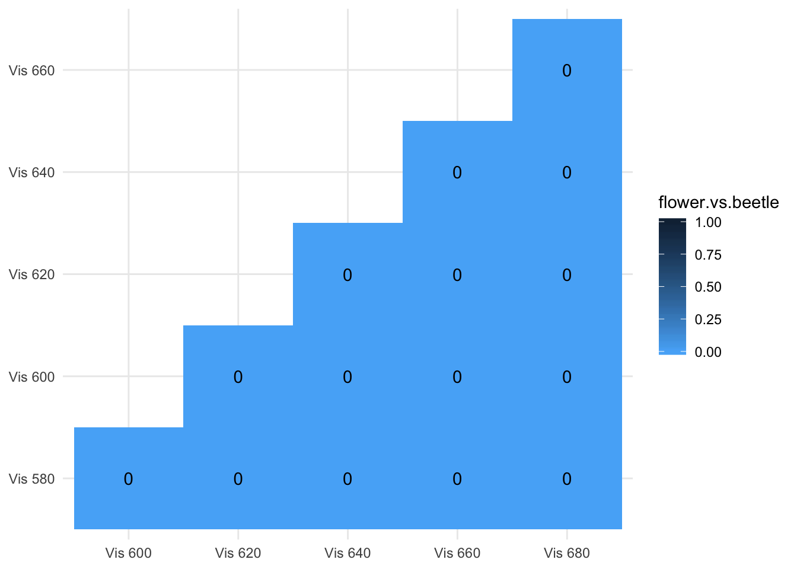
Original model output
sum.flower.vs.beetle_twilight.model2##
## Simultaneous Tests for General Linear Hypotheses
##
## Multiple Comparisons of Means: Tukey Contrasts
##
##
## Fit: lmer(formula = dS ~ peak_wl.flower.vs.beetle + (1 | patch2) +
## (1 | patch1), data = compare.flower.vs.beetle_twilight.model2,
## REML = F)
##
## Linear Hypotheses:
## Estimate
## bup600.flower.vs.beetle_twilight - bup580.flower.vs.beetle_twilight == 0 0.30286
## bup620.flower.vs.beetle_twilight - bup580.flower.vs.beetle_twilight == 0 0.69141
## bup640.flower.vs.beetle_twilight - bup580.flower.vs.beetle_twilight == 0 1.07424
## bup660.flower.vs.beetle_twilight - bup580.flower.vs.beetle_twilight == 0 1.38676
## bup680.flower.vs.beetle_twilight - bup580.flower.vs.beetle_twilight == 0 1.61180
## bup620.flower.vs.beetle_twilight - bup600.flower.vs.beetle_twilight == 0 0.38855
## bup640.flower.vs.beetle_twilight - bup600.flower.vs.beetle_twilight == 0 0.77138
## bup660.flower.vs.beetle_twilight - bup600.flower.vs.beetle_twilight == 0 1.08390
## bup680.flower.vs.beetle_twilight - bup600.flower.vs.beetle_twilight == 0 1.30894
## bup640.flower.vs.beetle_twilight - bup620.flower.vs.beetle_twilight == 0 0.38282
## bup660.flower.vs.beetle_twilight - bup620.flower.vs.beetle_twilight == 0 0.69535
## bup680.flower.vs.beetle_twilight - bup620.flower.vs.beetle_twilight == 0 0.92039
## bup660.flower.vs.beetle_twilight - bup640.flower.vs.beetle_twilight == 0 0.31252
## bup680.flower.vs.beetle_twilight - bup640.flower.vs.beetle_twilight == 0 0.53757
## bup680.flower.vs.beetle_twilight - bup660.flower.vs.beetle_twilight == 0 0.22505
## Std. Error
## bup600.flower.vs.beetle_twilight - bup580.flower.vs.beetle_twilight == 0 0.02877
## bup620.flower.vs.beetle_twilight - bup580.flower.vs.beetle_twilight == 0 0.02877
## bup640.flower.vs.beetle_twilight - bup580.flower.vs.beetle_twilight == 0 0.02877
## bup660.flower.vs.beetle_twilight - bup580.flower.vs.beetle_twilight == 0 0.02877
## bup680.flower.vs.beetle_twilight - bup580.flower.vs.beetle_twilight == 0 0.02877
## bup620.flower.vs.beetle_twilight - bup600.flower.vs.beetle_twilight == 0 0.02877
## bup640.flower.vs.beetle_twilight - bup600.flower.vs.beetle_twilight == 0 0.02877
## bup660.flower.vs.beetle_twilight - bup600.flower.vs.beetle_twilight == 0 0.02877
## bup680.flower.vs.beetle_twilight - bup600.flower.vs.beetle_twilight == 0 0.02877
## bup640.flower.vs.beetle_twilight - bup620.flower.vs.beetle_twilight == 0 0.02877
## bup660.flower.vs.beetle_twilight - bup620.flower.vs.beetle_twilight == 0 0.02877
## bup680.flower.vs.beetle_twilight - bup620.flower.vs.beetle_twilight == 0 0.02877
## bup660.flower.vs.beetle_twilight - bup640.flower.vs.beetle_twilight == 0 0.02877
## bup680.flower.vs.beetle_twilight - bup640.flower.vs.beetle_twilight == 0 0.02877
## bup680.flower.vs.beetle_twilight - bup660.flower.vs.beetle_twilight == 0 0.02877
## z value
## bup600.flower.vs.beetle_twilight - bup580.flower.vs.beetle_twilight == 0 10.528
## bup620.flower.vs.beetle_twilight - bup580.flower.vs.beetle_twilight == 0 24.034
## bup640.flower.vs.beetle_twilight - bup580.flower.vs.beetle_twilight == 0 37.342
## bup660.flower.vs.beetle_twilight - bup580.flower.vs.beetle_twilight == 0 48.206
## bup680.flower.vs.beetle_twilight - bup580.flower.vs.beetle_twilight == 0 56.029
## bup620.flower.vs.beetle_twilight - bup600.flower.vs.beetle_twilight == 0 13.507
## bup640.flower.vs.beetle_twilight - bup600.flower.vs.beetle_twilight == 0 26.814
## bup660.flower.vs.beetle_twilight - bup600.flower.vs.beetle_twilight == 0 37.678
## bup680.flower.vs.beetle_twilight - bup600.flower.vs.beetle_twilight == 0 45.501
## bup640.flower.vs.beetle_twilight - bup620.flower.vs.beetle_twilight == 0 13.308
## bup660.flower.vs.beetle_twilight - bup620.flower.vs.beetle_twilight == 0 24.171
## bup680.flower.vs.beetle_twilight - bup620.flower.vs.beetle_twilight == 0 31.994
## bup660.flower.vs.beetle_twilight - bup640.flower.vs.beetle_twilight == 0 10.864
## bup680.flower.vs.beetle_twilight - bup640.flower.vs.beetle_twilight == 0 18.687
## bup680.flower.vs.beetle_twilight - bup660.flower.vs.beetle_twilight == 0 7.823
## Pr(>|z|)
## bup600.flower.vs.beetle_twilight - bup580.flower.vs.beetle_twilight == 0 < 2e-16
## bup620.flower.vs.beetle_twilight - bup580.flower.vs.beetle_twilight == 0 < 2e-16
## bup640.flower.vs.beetle_twilight - bup580.flower.vs.beetle_twilight == 0 < 2e-16
## bup660.flower.vs.beetle_twilight - bup580.flower.vs.beetle_twilight == 0 < 2e-16
## bup680.flower.vs.beetle_twilight - bup580.flower.vs.beetle_twilight == 0 < 2e-16
## bup620.flower.vs.beetle_twilight - bup600.flower.vs.beetle_twilight == 0 < 2e-16
## bup640.flower.vs.beetle_twilight - bup600.flower.vs.beetle_twilight == 0 < 2e-16
## bup660.flower.vs.beetle_twilight - bup600.flower.vs.beetle_twilight == 0 < 2e-16
## bup680.flower.vs.beetle_twilight - bup600.flower.vs.beetle_twilight == 0 < 2e-16
## bup640.flower.vs.beetle_twilight - bup620.flower.vs.beetle_twilight == 0 < 2e-16
## bup660.flower.vs.beetle_twilight - bup620.flower.vs.beetle_twilight == 0 < 2e-16
## bup680.flower.vs.beetle_twilight - bup620.flower.vs.beetle_twilight == 0 < 2e-16
## bup660.flower.vs.beetle_twilight - bup640.flower.vs.beetle_twilight == 0 < 2e-16
## bup680.flower.vs.beetle_twilight - bup640.flower.vs.beetle_twilight == 0 < 2e-16
## bup680.flower.vs.beetle_twilight - bup660.flower.vs.beetle_twilight == 0 7.66e-14
##
## bup600.flower.vs.beetle_twilight - bup580.flower.vs.beetle_twilight == 0 ***
## bup620.flower.vs.beetle_twilight - bup580.flower.vs.beetle_twilight == 0 ***
## bup640.flower.vs.beetle_twilight - bup580.flower.vs.beetle_twilight == 0 ***
## bup660.flower.vs.beetle_twilight - bup580.flower.vs.beetle_twilight == 0 ***
## bup680.flower.vs.beetle_twilight - bup580.flower.vs.beetle_twilight == 0 ***
## bup620.flower.vs.beetle_twilight - bup600.flower.vs.beetle_twilight == 0 ***
## bup640.flower.vs.beetle_twilight - bup600.flower.vs.beetle_twilight == 0 ***
## bup660.flower.vs.beetle_twilight - bup600.flower.vs.beetle_twilight == 0 ***
## bup680.flower.vs.beetle_twilight - bup600.flower.vs.beetle_twilight == 0 ***
## bup640.flower.vs.beetle_twilight - bup620.flower.vs.beetle_twilight == 0 ***
## bup660.flower.vs.beetle_twilight - bup620.flower.vs.beetle_twilight == 0 ***
## bup680.flower.vs.beetle_twilight - bup620.flower.vs.beetle_twilight == 0 ***
## bup660.flower.vs.beetle_twilight - bup640.flower.vs.beetle_twilight == 0 ***
## bup680.flower.vs.beetle_twilight - bup640.flower.vs.beetle_twilight == 0 ***
## bup680.flower.vs.beetle_twilight - bup660.flower.vs.beetle_twilight == 0 ***
## ---
## Signif. codes: 0 '***' 0.001 '**' 0.01 '*' 0.05 '.' 0.1 ' ' 1
## (Adjusted p values reported -- bonferroni method)Twilight
Anova(m.flower.vs.beetle_twilight.model2) %>% pander()| Chisq | Df | Pr(>Chisq) | |
|---|---|---|---|
| peak_wl.flower.vs.beetle | 4750 | 5 | 0 |
Click the tabs to see the p-value summary plot or the original model output
Pair-wise p-values
ggplot(data = heat1_twilight.model2[,c(1,4:5)], aes(x=VislistA_twilight.model2, y=VislistB_twilight.model2, fill=leaf.vs.flower)) +
geom_tile()+
geom_text(aes(VislistA_twilight.model2, VislistB_twilight.model2, label = round(leaf.vs.flower, 2)))+
scale_fill_continuous(high = "#132B43", low = "#56B1F7", limit=c(0,1))+ #delete if want to reverse the colour
theme_minimal()+
theme(axis.title.x=element_blank(),
axis.title.y=element_blank())
Original model output
sum.leaf.vs.flower_twilight.model2##
## Simultaneous Tests for General Linear Hypotheses
##
## Multiple Comparisons of Means: Tukey Contrasts
##
##
## Fit: lmer(formula = dS ~ peak_wl.leaf.vs.flower + (1 | patch2) + (1 |
## patch1), data = compare.leaf.vs.flower_twilight.model2, REML = F)
##
## Linear Hypotheses:
## Estimate
## bup600.leaf.vs.flower_twilight - bup580.leaf.vs.flower_twilight == 0 0.33799
## bup620.leaf.vs.flower_twilight - bup580.leaf.vs.flower_twilight == 0 0.67777
## bup640.leaf.vs.flower_twilight - bup580.leaf.vs.flower_twilight == 0 0.70976
## bup660.leaf.vs.flower_twilight - bup580.leaf.vs.flower_twilight == 0 0.48063
## bup680.leaf.vs.flower_twilight - bup580.leaf.vs.flower_twilight == 0 0.30326
## bup620.leaf.vs.flower_twilight - bup600.leaf.vs.flower_twilight == 0 0.33978
## bup640.leaf.vs.flower_twilight - bup600.leaf.vs.flower_twilight == 0 0.37177
## bup660.leaf.vs.flower_twilight - bup600.leaf.vs.flower_twilight == 0 0.14264
## bup680.leaf.vs.flower_twilight - bup600.leaf.vs.flower_twilight == 0 -0.03473
## bup640.leaf.vs.flower_twilight - bup620.leaf.vs.flower_twilight == 0 0.03199
## bup660.leaf.vs.flower_twilight - bup620.leaf.vs.flower_twilight == 0 -0.19714
## bup680.leaf.vs.flower_twilight - bup620.leaf.vs.flower_twilight == 0 -0.37451
## bup660.leaf.vs.flower_twilight - bup640.leaf.vs.flower_twilight == 0 -0.22913
## bup680.leaf.vs.flower_twilight - bup640.leaf.vs.flower_twilight == 0 -0.40651
## bup680.leaf.vs.flower_twilight - bup660.leaf.vs.flower_twilight == 0 -0.17737
## Std. Error
## bup600.leaf.vs.flower_twilight - bup580.leaf.vs.flower_twilight == 0 0.01671
## bup620.leaf.vs.flower_twilight - bup580.leaf.vs.flower_twilight == 0 0.01671
## bup640.leaf.vs.flower_twilight - bup580.leaf.vs.flower_twilight == 0 0.01671
## bup660.leaf.vs.flower_twilight - bup580.leaf.vs.flower_twilight == 0 0.01671
## bup680.leaf.vs.flower_twilight - bup580.leaf.vs.flower_twilight == 0 0.01671
## bup620.leaf.vs.flower_twilight - bup600.leaf.vs.flower_twilight == 0 0.01671
## bup640.leaf.vs.flower_twilight - bup600.leaf.vs.flower_twilight == 0 0.01671
## bup660.leaf.vs.flower_twilight - bup600.leaf.vs.flower_twilight == 0 0.01671
## bup680.leaf.vs.flower_twilight - bup600.leaf.vs.flower_twilight == 0 0.01671
## bup640.leaf.vs.flower_twilight - bup620.leaf.vs.flower_twilight == 0 0.01671
## bup660.leaf.vs.flower_twilight - bup620.leaf.vs.flower_twilight == 0 0.01671
## bup680.leaf.vs.flower_twilight - bup620.leaf.vs.flower_twilight == 0 0.01671
## bup660.leaf.vs.flower_twilight - bup640.leaf.vs.flower_twilight == 0 0.01671
## bup680.leaf.vs.flower_twilight - bup640.leaf.vs.flower_twilight == 0 0.01671
## bup680.leaf.vs.flower_twilight - bup660.leaf.vs.flower_twilight == 0 0.01671
## z value
## bup600.leaf.vs.flower_twilight - bup580.leaf.vs.flower_twilight == 0 20.227
## bup620.leaf.vs.flower_twilight - bup580.leaf.vs.flower_twilight == 0 40.561
## bup640.leaf.vs.flower_twilight - bup580.leaf.vs.flower_twilight == 0 42.476
## bup660.leaf.vs.flower_twilight - bup580.leaf.vs.flower_twilight == 0 28.763
## bup680.leaf.vs.flower_twilight - bup580.leaf.vs.flower_twilight == 0 18.148
## bup620.leaf.vs.flower_twilight - bup600.leaf.vs.flower_twilight == 0 20.334
## bup640.leaf.vs.flower_twilight - bup600.leaf.vs.flower_twilight == 0 22.249
## bup660.leaf.vs.flower_twilight - bup600.leaf.vs.flower_twilight == 0 8.536
## bup680.leaf.vs.flower_twilight - bup600.leaf.vs.flower_twilight == 0 -2.079
## bup640.leaf.vs.flower_twilight - bup620.leaf.vs.flower_twilight == 0 1.915
## bup660.leaf.vs.flower_twilight - bup620.leaf.vs.flower_twilight == 0 -11.798
## bup680.leaf.vs.flower_twilight - bup620.leaf.vs.flower_twilight == 0 -22.413
## bup660.leaf.vs.flower_twilight - bup640.leaf.vs.flower_twilight == 0 -13.712
## bup680.leaf.vs.flower_twilight - bup640.leaf.vs.flower_twilight == 0 -24.327
## bup680.leaf.vs.flower_twilight - bup660.leaf.vs.flower_twilight == 0 -10.615
## Pr(>|z|)
## bup600.leaf.vs.flower_twilight - bup580.leaf.vs.flower_twilight == 0 <2e-16
## bup620.leaf.vs.flower_twilight - bup580.leaf.vs.flower_twilight == 0 <2e-16
## bup640.leaf.vs.flower_twilight - bup580.leaf.vs.flower_twilight == 0 <2e-16
## bup660.leaf.vs.flower_twilight - bup580.leaf.vs.flower_twilight == 0 <2e-16
## bup680.leaf.vs.flower_twilight - bup580.leaf.vs.flower_twilight == 0 <2e-16
## bup620.leaf.vs.flower_twilight - bup600.leaf.vs.flower_twilight == 0 <2e-16
## bup640.leaf.vs.flower_twilight - bup600.leaf.vs.flower_twilight == 0 <2e-16
## bup660.leaf.vs.flower_twilight - bup600.leaf.vs.flower_twilight == 0 <2e-16
## bup680.leaf.vs.flower_twilight - bup600.leaf.vs.flower_twilight == 0 0.565
## bup640.leaf.vs.flower_twilight - bup620.leaf.vs.flower_twilight == 0 0.833
## bup660.leaf.vs.flower_twilight - bup620.leaf.vs.flower_twilight == 0 <2e-16
## bup680.leaf.vs.flower_twilight - bup620.leaf.vs.flower_twilight == 0 <2e-16
## bup660.leaf.vs.flower_twilight - bup640.leaf.vs.flower_twilight == 0 <2e-16
## bup680.leaf.vs.flower_twilight - bup640.leaf.vs.flower_twilight == 0 <2e-16
## bup680.leaf.vs.flower_twilight - bup660.leaf.vs.flower_twilight == 0 <2e-16
##
## bup600.leaf.vs.flower_twilight - bup580.leaf.vs.flower_twilight == 0 ***
## bup620.leaf.vs.flower_twilight - bup580.leaf.vs.flower_twilight == 0 ***
## bup640.leaf.vs.flower_twilight - bup580.leaf.vs.flower_twilight == 0 ***
## bup660.leaf.vs.flower_twilight - bup580.leaf.vs.flower_twilight == 0 ***
## bup680.leaf.vs.flower_twilight - bup580.leaf.vs.flower_twilight == 0 ***
## bup620.leaf.vs.flower_twilight - bup600.leaf.vs.flower_twilight == 0 ***
## bup640.leaf.vs.flower_twilight - bup600.leaf.vs.flower_twilight == 0 ***
## bup660.leaf.vs.flower_twilight - bup600.leaf.vs.flower_twilight == 0 ***
## bup680.leaf.vs.flower_twilight - bup600.leaf.vs.flower_twilight == 0
## bup640.leaf.vs.flower_twilight - bup620.leaf.vs.flower_twilight == 0
## bup660.leaf.vs.flower_twilight - bup620.leaf.vs.flower_twilight == 0 ***
## bup680.leaf.vs.flower_twilight - bup620.leaf.vs.flower_twilight == 0 ***
## bup660.leaf.vs.flower_twilight - bup640.leaf.vs.flower_twilight == 0 ***
## bup680.leaf.vs.flower_twilight - bup640.leaf.vs.flower_twilight == 0 ***
## bup680.leaf.vs.flower_twilight - bup660.leaf.vs.flower_twilight == 0 ***
## ---
## Signif. codes: 0 '***' 0.001 '**' 0.01 '*' 0.05 '.' 0.1 ' ' 1
## (Adjusted p values reported -- bonferroni method)Plot the contasts
- Colours are in accordence with the actual sample colouration in visible range.
- Lines of the same colors connect the same samples
Visual model 1
Daylight
#import the flower color code
color.code<-read.csv("data/color code list.csv",header=TRUE)
#creat a list of species name used in the spec data and
name.list<-unique(dataset.transpose$species) %>%
sort() %>% #order it alphebatically as well
data.frame() %>% dplyr::rename(species = ".")#make it a data frame and name the column "species"
#creat flower name list for visual model 1
flower.colour.model1 <- name.list %>% filter(str_detect(species, "flower")) %>% #select flower names
cbind(color.code %>% filter(str_detect(type, "flower")) %>% arrange(name)) %>% #select flower color codes and order it alphebatically
dplyr::select(-type) %>% #remove the redundant column
mutate(count = 4) %>% uncount(count) #repeat each row for 4 times for 4 visual systems
#creat beetle name list for visual model 1
beetle.colour.model1 <- name.list %>% filter(str_detect(species, "beetle")) %>% #select flower names
cbind(color.code %>% filter(str_detect(type, "beetle")) %>% arrange(name)) %>% #select flower color codes and order it alphebatically
dplyr::select(-type) %>% #remove the redundant column
mutate(count = 4) %>% uncount(count) #repeat each row for 4 times for 4 visual systems
#make flower vs leaf plot
Vis1.lf_d65.model1<- CvisUVSWMW..%>% filter(str_detect(patch1,"flower")) %>%
filter(str_detect(patch2,"leaves"))
Vis1.lf_d65.model1$vissys<-strrep("Vis1.lf",1)
Vis2.lf_d65.model1<-CvisUV..MWLW%>% filter(str_detect(patch1,"flower")) %>%
filter(str_detect(patch2,"leaves"))
Vis2.lf_d65.model1$vissys<-strrep("Vis2.lf",1)
Vis3.lf_d65.model1<-CvisUVSW..LW%>% filter(str_detect(patch1,"flower")) %>%
filter(str_detect(patch2,"leaves"))
Vis3.lf_d65.model1$vissys<-strrep("Vis3.lf",1)
Vis4.lf_d65.model1<-CvisUVSWMWLW%>% filter(str_detect(patch1,"flower")) %>%
filter(str_detect(patch2,"leaves"))
Vis4.lf_d65.model1$vissys<-strrep("Vis4.lf",1)
allvis.lf_d65.model1<-Vis1.lf_d65.model1 %>% rbind(Vis2.lf_d65.model1) %>% rbind(Vis3.lf_d65.model1) %>%rbind(Vis4.lf_d65.model1)
#add the mean
mean.lf_d65.model1<-allvis.lf_d65.model1 %>% mutate(patch3 = paste(allvis.lf_d65.model1$vissys,allvis.lf_d65.model1$patch1,sep=".")) %>%
#create a new column "patch3" which combines the category info of patch1(flowers) and vissys
group_by(patch3,vissys,patch1) %>% summarize(mean.dS.lf=mean(dS)) %>%
#create a column "mean.dS" as the mean dS for one patch1 to all corresponding patch2
ungroup() %>%
dplyr::select(-patch3) #remove the patch3 column because we don't need it anymore
#plot the mean
names(mean.lf_d65.model1)[names(mean.lf_d65.model1) == "patch1"] <- "flowerID"
#rename the column "patch1" because somehow it doesn't work in the ggplot function
mean.lf_d65.model1<-mean.lf_d65.model1[order(mean.lf_d65.model1$flowerID),]
#make the data frame order by flowerID then when apply the colour code in the following step "viridis", the colour will be consistent in the same comparison accross different visual systems
#combine the colour code list to the mean.bf for ploting
mean.lf_d65.model1$match.name<-flower.colour.model1$species # this column is just for checking if match correctly
mean.lf_d65.model1$colour<-flower.colour.model1$colour
lf_d65.model1<-ggplot(mean.lf_d65.model1, aes(x=vissys, y=mean.dS.lf,group=flowerID))+
geom_point(col=mean.lf_d65.model1$colour,size=3, alpha=0.7) +
geom_line(col=mean.lf_d65.model1$colour, size = 1, alpha=0.7)+
xlab("Visual system") +
ylab("Chromatic contrast (JND)") +
ylim(0,15)+
theme(panel.grid.major = element_blank(), panel.grid.minor = element_blank(),
panel.background = element_rect(fill = "grey80",size = NA), #make the backfround empty: panel.background = element_blank()
axis.title.x = element_text(size=12),
axis.text.x = element_text(size=8, colour="black", angle=90),
axis.title.y = element_text(size =12, vjust = 1),
axis.text.y = element_text(size=8, colour="black"),
axis.line.x = element_line(colour = 'black', size=0.5, linetype='solid'),
axis.line.y = element_line(colour = 'black', size=0.5, linetype='solid'),
legend.justification=c(1,0), legend.position=c(1,0.45),
legend.key = element_blank(),
legend.title = element_text(size = 10),
legend.text = element_text(size = 9))+
scale_x_discrete(limits = c("Vis1.lf", "Vis2.lf", "Vis3.lf","Vis4.lf"),
labels=c("Vis USM", "Vis UML", "Vis USL","Vis USML"))+
geom_hline(yintercept = 1,linetype="dotted")+ ##add a JND=1 line
geom_point(data = mean.lf_d65.model1, aes(x= "Vis1.lf", y= median(Vis1.lf_d65.model1$dS)),
col="black", size=5)+ #add the median point
geom_point(data = mean.lf_d65.model1, aes(x= "Vis2.lf", y= median(Vis2.lf_d65.model1$dS)),
col="black", size=5)+ #add the median point
geom_point(data = mean.lf_d65.model1, aes(x= "Vis3.lf", y= median(Vis3.lf_d65.model1$dS)),
col="black", size=5)+ #add the median point
geom_point(data = mean.lf_d65.model1, aes(x= "Vis4.lf", y= median(Vis4.lf_d65.model1$dS)),
col="black", size=5)+ #add the median point
#change the x labels
ggtitle("Leaf vs. Flower")+
annotate("text", x = c("Vis1.lf", "Vis2.lf", "Vis3.lf","Vis4.lf"), y = 15, label =c("a","b","a","c")) #add stitistical info
#make beetle vs leaf plot
Vis1.lb_d65.model1<- CvisUVSWMW..%>% filter(str_detect(patch2,"beetle")) %>%
filter(str_detect(patch1,"leaves"))
Vis1.lb_d65.model1$vissys<-strrep("Vis1.lb",1)
Vis2.lb_d65.model1<-CvisUV..MWLW%>% filter(str_detect(patch2,"beetle")) %>%
filter(str_detect(patch1,"leaves"))
Vis2.lb_d65.model1$vissys<-strrep("Vis2.lb",1)
Vis3.lb_d65.model1<-CvisUVSW..LW%>% filter(str_detect(patch2,"beetle")) %>%
filter(str_detect(patch1,"leaves"))
Vis3.lb_d65.model1$vissys<-strrep("Vis3.lb",1)
Vis4.lb_d65.model1<-CvisUVSWMWLW%>% filter(str_detect(patch2,"beetle")) %>%
filter(str_detect(patch1,"leaves"))
Vis4.lb_d65.model1$vissys<-strrep("Vis4.lb",1)
allvis.lb_d65.model1<-Vis1.lb_d65.model1 %>% rbind(Vis2.lb_d65.model1) %>% rbind(Vis3.lb_d65.model1) %>%rbind(Vis4.lb_d65.model1)
#add the mean
mean.lb_d65.model1<-allvis.lb_d65.model1 %>% mutate(patch3 = paste(allvis.lb_d65.model1$vissys,allvis.lb_d65.model1$patch2,sep=".")) %>%
#create a new column "patch3" which combines the category info of patch2(beetles) and vissys
group_by(patch3,vissys,patch2) %>% summarize(mean.dS.lb=mean(dS)) %>%
#create a column "mean.dS" as the mean dS for one patch1 to all corresponding patch2
ungroup() %>%
dplyr::select(-patch3) #remove the patch3 column because we don't need it anymore
#plot the mean
names(mean.lb_d65.model1)[names(mean.lb_d65.model1) == "patch2"] <- "beetleID"
#rename the column "patch1" because somehow it doesn't work in the ggplot function
mean.lb_d65.model1<-mean.lb_d65.model1[order(mean.lb_d65.model1$beetleID),]
#make the data frame order bt beetleID then when apply the colour code in the following step "viridis", the colour will be consistent in the same comparison accross different visual systems
#combine the colour code list to the mean.bf for ploting
mean.lb_d65.model1$match.name<-beetle.colour.model1$species # this column is just for checking if match correctly
mean.lb_d65.model1$colour<-beetle.colour.model1$colour
lb_d65.model1<-ggplot(mean.lb_d65.model1, aes(x=vissys, y=mean.dS.lb,group=beetleID))+
geom_point(col=mean.lb_d65.model1$colour, size=3,alpha=0.7) +
geom_line(col=mean.lb_d65.model1$colour, size = 1, alpha=0.7)+
xlab("Visual system") +
ylab("Chromatic contrast (JND)") +
ylim(0,15)+
theme(panel.background = element_blank(),
axis.title.x = element_text(size=12),
axis.text.x = element_text(size=8, colour="black", angle=90),
axis.title.y = element_text(size =12, vjust = 1),
axis.text.y = element_text(size=8, colour="black"),
axis.line.x = element_line(colour = 'black', size=0.5, linetype='solid'),
axis.line.y = element_line(colour = 'black', size=0.5, linetype='solid'),
legend.justification=c(1,0), legend.position=c(1,0.45),
legend.key = element_blank(),
legend.title = element_text(size = 10),
legend.text = element_text(size = 9))+
scale_x_discrete(limits = c("Vis1.lb", "Vis2.lb", "Vis3.lb","Vis4.lb"),
labels=c("Vis USM", "Vis UML", "Vis USL","Vis USML"))+
geom_hline(yintercept = 1,linetype="dotted")+ ##add a JND=1 line
geom_point(data = mean.lb_d65.model1, aes(x= "Vis1.lb", y= median(Vis1.lb_d65.model1$dS)),
col="black", size=5)+ #add the median point
geom_point(data = mean.lb_d65.model1, aes(x= "Vis2.lb", y= median(Vis2.lb_d65.model1$dS)),
col="black", size=5)+ #add the median point
geom_point(data = mean.lb_d65.model1, aes(x= "Vis3.lb", y= median(Vis3.lb_d65.model1$dS)),
col="black", size=5)+ #add the median point
geom_point(data = mean.lb_d65.model1, aes(x= "Vis4.lb", y= median(Vis4.lb_d65.model1$dS)),
col="black", size=5)+ #add the median point
#change the x labels
ggtitle("Leaf vs. Beetle")+annotate("text", x = c("Vis1.lb", "Vis2.lb", "Vis3.lb","Vis4.lb"), y = 15, label =c("a","b","b","c")) #add stitistical info
#make beetle vs flower plot
Vis1.bf_d65.model1<- CvisUVSWMW..%>% filter(str_detect(patch1,"flower")) %>%
filter(str_detect(patch2,"beetle"))
Vis1.bf_d65.model1$vissys<-strrep("Vis1.bf",1)
Vis2.bf_d65.model1<-CvisUV..MWLW%>% filter(str_detect(patch1,"flower")) %>%
filter(str_detect(patch2,"beetle"))
Vis2.bf_d65.model1$vissys<-strrep("Vis2.bf",1)
Vis3.bf_d65.model1<-CvisUVSW..LW%>% filter(str_detect(patch1,"flower")) %>%
filter(str_detect(patch2,"beetle"))
Vis3.bf_d65.model1$vissys<-strrep("Vis3.bf",1)
Vis4.bf_d65.model1<-CvisUVSWMWLW%>% filter(str_detect(patch1,"flower")) %>%
filter(str_detect(patch2,"beetle"))
Vis4.bf_d65.model1$vissys<-strrep("Vis4.bf",1)
allvis.bf_d65.model1<-Vis1.bf_d65.model1 %>% rbind(Vis2.bf_d65.model1) %>% rbind(Vis3.bf_d65.model1)%>%
rbind(Vis4.bf_d65.model1)
#add the mean
mean.bf_d65.model1<-allvis.bf_d65.model1 %>% mutate(patch3 = paste(allvis.bf_d65.model1$vissys,allvis.bf_d65.model1$patch1,sep=".")) %>%
#create a new column "patch3" which combines the category info of patch1(flowers) and vissys
group_by(patch3,vissys,patch1) %>% summarize(mean.dS.bf=mean(dS)) %>% #patch1(flowers
#create a column "mean.dS" as the mean dS for one patch1 to all corresponding patch2
ungroup() %>%
dplyr::select(-patch3) #remove the patch3 column because we don't need it anymore
#plot the mean
names(mean.bf_d65.model1)[names(mean.bf_d65.model1) == "patch1"] <- "flowerID"
#rename the column "patch1" because somehow it doesn't work in the ggplot function
mean.bf_d65.model1<-mean.bf_d65.model1[order(mean.bf_d65.model1$flowerID),]
#make the data frame order bt flowerID then when apply the colour code in the following step "viridis", the colour will be consistent in the same comparison accross different visual systems
#combine the colour code list to the mean.bf for ploting
mean.bf_d65.model1$match.name<-flower.colour.model1$species # this column is just for checking if match correctly
mean.bf_d65.model1$colour<-flower.colour.model1$colour
bf_d65.model1<-ggplot(mean.bf_d65.model1, aes(x=vissys, y=mean.dS.bf,group=flowerID))+
geom_point(col=mean.bf_d65.model1$colour, size=3, alpha=0.7) +
geom_line(col=mean.bf_d65.model1$colour, size = 1, alpha=0.7)+
xlab("Visual system") +
ylab("Chromatic contrast (JND)") +
ylim(0,15)+
theme(panel.grid.major = element_blank(), panel.grid.minor = element_blank(),
panel.background = element_rect(fill = "grey80",size = NA),#make the backfround empty: panel.background = element_blank()
axis.title.x = element_text(size=12),
axis.text.x = element_text(size=8, colour="black", angle=90),
axis.title.y = element_text(size =12, vjust = 1),
axis.text.y = element_text(size=8, colour="black"),
axis.line.x = element_line(colour = 'black', size=0.5, linetype='solid'),
axis.line.y = element_line(colour = 'black', size=0.5, linetype='solid'),
legend.justification=c(1,0), legend.position=c(1,0.45),
legend.key = element_blank(),
legend.title = element_text(size = 10),
legend.text = element_text(size = 9))+
scale_x_discrete(limits = c("Vis1.bf", "Vis2.bf", "Vis3.bf","Vis4.bf"),
labels=c("Vis USM", "Vis UML", "Vis USL","Vis USML"))+
geom_hline(yintercept = 1,linetype="dotted")+ ##add a JND=1 line
geom_point(data = mean.bf_d65.model1, aes(x= "Vis1.bf", y= median(Vis1.bf_d65.model1$dS)),
col="black", size=5)+ #add the median point
geom_point(data = mean.bf_d65.model1, aes(x= "Vis2.bf", y= median(Vis2.bf_d65.model1$dS)),
col="black", size=5)+ #add the median point
geom_point(data = mean.bf_d65.model1, aes(x= "Vis3.bf", y= median(Vis3.bf_d65.model1$dS)),
col="black", size=5)+ #add the median point
geom_point(data = mean.bf_d65.model1, aes(x= "Vis4.bf", y= median(Vis4.bf_d65.model1$dS)),
col="black", size=5)+ #add the median point
#change the x labels
ggtitle("Beetle vs. Flower")+
annotate("text", x = c("Vis1.bf", "Vis2.bf", "Vis3.bf","Vis4.bf"), y = 15, label =c("a","b","a","c")) #add stitistical info
#plot the contrasts from the 3 comparison groups together
figure_d65.model1 <- ggarrange(lf_d65.model1,lb_d65.model1,bf_d65.model1, ncol = 3, nrow = 1)
figure_d65.model1![Contrast comparison between visual systems with different photoreceptor combinations. A dot in each visual system shows a representative contrast of a flower pattern (beetle pattern in the middle panel), which is the average of its contrast to all leaves (all beetle patterns on the right panel). Colours of the dots reflcet the visible colour of the flower (beetle patterns in the middle panel) with the lines of the same colour connecting the results between different visual systems. Black dots show the median of the representative contrast in a visual system. Letters on the top of each panel show the significant difference in contrast between visual systems. Dotted horizontal line indicates JND=1. Two contrasts > 10 JND are from flowers that have very low UV reflectance.](index_files/figure-html/unnamed-chunk-54-1.png)
Contrast comparison between visual systems with different photoreceptor combinations. A dot in each visual system shows a representative contrast of a flower pattern (beetle pattern in the middle panel), which is the average of its contrast to all leaves (all beetle patterns on the right panel). Colours of the dots reflcet the visible colour of the flower (beetle patterns in the middle panel) with the lines of the same colour connecting the results between different visual systems. Black dots show the median of the representative contrast in a visual system. Letters on the top of each panel show the significant difference in contrast between visual systems. Dotted horizontal line indicates JND=1. Two contrasts > 10 JND are from flowers that have very low UV reflectance.
Twilight
#make flower vs leaf plot
Vis1.lf_twilight.model1<- CvisUVSWMW.._twilight%>% filter(str_detect(patch1,"flower")) %>%
filter(str_detect(patch2,"leaves"))
Vis1.lf_twilight.model1$vissys<-strrep("Vis1.lf",1)
Vis2.lf_twilight.model1<-CvisUV..MWLW_twilight%>% filter(str_detect(patch1,"flower")) %>%
filter(str_detect(patch2,"leaves"))
Vis2.lf_twilight.model1$vissys<-strrep("Vis2.lf",1)
Vis3.lf_twilight.model1<-CvisUVSW..LW_twilight%>% filter(str_detect(patch1,"flower")) %>%
filter(str_detect(patch2,"leaves"))
Vis3.lf_twilight.model1$vissys<-strrep("Vis3.lf",1)
Vis4.lf_twilight.model1<-CvisUVSWMWLW_twilight%>% filter(str_detect(patch1,"flower")) %>%
filter(str_detect(patch2,"leaves"))
Vis4.lf_twilight.model1$vissys<-strrep("Vis4.lf",1)
allvis.lf_twilight.model1<-Vis1.lf_twilight.model1 %>% rbind(Vis2.lf_twilight.model1) %>% rbind(Vis3.lf_twilight.model1) %>%rbind(Vis4.lf_twilight.model1)
#add the mean
mean.lf_twilight.model1<-allvis.lf_twilight.model1 %>% mutate(patch3 = paste(allvis.lf_twilight.model1$vissys,allvis.lf_twilight.model1$patch1,sep=".")) %>%
#create a new column "patch3" which combines the category info of patch1(flowers) and vissys
group_by(patch3,vissys,patch1) %>% summarize(mean.dS.lf=mean(dS)) %>%
#create a column "mean.dS" as the mean dS for one patch1 to all corresponding patch2
ungroup() %>%
dplyr::select(-patch3) #remove the patch3 column because we don't need it anymore
#plot the mean
names(mean.lf_twilight.model1)[names(mean.lf_twilight.model1) == "patch1"] <- "flowerID"
#rename the column "patch1" because somehow it doesn't work in the ggplot function
mean.lf_twilight.model1<-mean.lf_twilight.model1[order(mean.lf_twilight.model1$flowerID),]
#make the data frame order by flowerID then when apply the colour code in the following step "viridis", the colour will be consistent in the same comparison accross different visual systems
#combine the colour code list to the mean.bf for ploting
mean.lf_twilight.model1$match.name<-flower.colour.model1$species # this column is just for checking if match correctly
mean.lf_twilight.model1$colour<-flower.colour.model1$colour
lf_twilight.model1<-ggplot(mean.lf_twilight.model1, aes(x=vissys, y=mean.dS.lf,group=flowerID))+
geom_point(col=mean.lf_twilight.model1$colour,size=3, alpha=0.7) +
geom_line(col=mean.lf_twilight.model1$colour, size = 1, alpha=0.7)+
xlab("Visual system") +
ylab("Chromatic contrast (JND)") +
ylim(0,15)+
theme(panel.grid.major = element_blank(), panel.grid.minor = element_blank(),
panel.background = element_rect(fill = "grey80",size = NA), #make the backfround empty: panel.background = element_blank()
axis.title.x = element_text(size=12),
axis.text.x = element_text(size=8, colour="black", angle=90),
axis.title.y = element_text(size =12, vjust = 1),
axis.text.y = element_text(size=8, colour="black"),
axis.line.x = element_line(colour = 'black', size=0.5, linetype='solid'),
axis.line.y = element_line(colour = 'black', size=0.5, linetype='solid'),
legend.justification=c(1,0), legend.position=c(1,0.45),
legend.key = element_blank(),
legend.title = element_text(size = 10),
legend.text = element_text(size = 9))+
scale_x_discrete(limits = c("Vis1.lf", "Vis2.lf", "Vis3.lf","Vis4.lf"),
labels=c("Vis USM", "Vis UML", "Vis USL","Vis USML"))+
geom_hline(yintercept = 1,linetype="dotted")+ ##add a JND=1 line
geom_point(data = mean.lf_twilight.model1, aes(x= "Vis1.lf", y= median(Vis1.lf_twilight.model1$dS)),
col="black", size=5)+ #add the median point
geom_point(data = mean.lf_twilight.model1, aes(x= "Vis2.lf", y= median(Vis2.lf_twilight.model1$dS)),
col="black", size=5)+ #add the median point
geom_point(data = mean.lf_twilight.model1, aes(x= "Vis3.lf", y= median(Vis3.lf_twilight.model1$dS)),
col="black", size=5)+ #add the median point
geom_point(data = mean.lf_twilight.model1, aes(x= "Vis4.lf", y= median(Vis4.lf_twilight.model1$dS)),
col="black", size=5)+ #add the median point
#change the x labels
ggtitle("Leaf vs. Flower")+
annotate("text", x = c("Vis1.lf", "Vis2.lf", "Vis3.lf","Vis4.lf"), y = 15, label =c("a","b","a","c")) #add stitistical info
#make beetle vs leaf plot
Vis1.lb_twilight.model1<- CvisUVSWMW.._twilight%>% filter(str_detect(patch2,"beetle")) %>%
filter(str_detect(patch1,"leaves"))
Vis1.lb_twilight.model1$vissys<-strrep("Vis1.lb",1)
Vis2.lb_twilight.model1<-CvisUV..MWLW_twilight%>% filter(str_detect(patch2,"beetle")) %>%
filter(str_detect(patch1,"leaves"))
Vis2.lb_twilight.model1$vissys<-strrep("Vis2.lb",1)
Vis3.lb_twilight.model1<-CvisUVSW..LW_twilight%>% filter(str_detect(patch2,"beetle")) %>%
filter(str_detect(patch1,"leaves"))
Vis3.lb_twilight.model1$vissys<-strrep("Vis3.lb",1)
Vis4.lb_twilight.model1<-CvisUVSWMWLW_twilight%>% filter(str_detect(patch2,"beetle")) %>%
filter(str_detect(patch1,"leaves"))
Vis4.lb_twilight.model1$vissys<-strrep("Vis4.lb",1)
allvis.lb_twilight.model1<-Vis1.lb_twilight.model1 %>% rbind(Vis2.lb_twilight.model1) %>% rbind(Vis3.lb_twilight.model1) %>%rbind(Vis4.lb_twilight.model1)
#add the mean
mean.lb_twilight.model1<-allvis.lb_twilight.model1 %>% mutate(patch3 = paste(allvis.lb_twilight.model1$vissys,allvis.lb_twilight.model1$patch2,sep=".")) %>%
#create a new column "patch3" which combines the category info of patch2(beetles) and vissys
group_by(patch3,vissys,patch2) %>% summarize(mean.dS.lb=mean(dS)) %>%
#create a column "mean.dS" as the mean dS for one patch1 to all corresponding patch2
ungroup() %>%
dplyr::select(-patch3) #remove the patch3 column because we don't need it anymore
#plot the mean
names(mean.lb_twilight.model1)[names(mean.lb_twilight.model1) == "patch2"] <- "beetleID"
#rename the column "patch1" because somehow it doesn't work in the ggplot function
mean.lb_twilight.model1<-mean.lb_twilight.model1[order(mean.lb_twilight.model1$beetleID),]
#make the data frame order bt beetleID then when apply the colour code in the following step "viridis", the colour will be consistent in the same comparison accross different visual systems
#combine the colour code list to the mean.bf for ploting
mean.lb_twilight.model1$match.name<-beetle.colour.model1$species # this column is just for checking if match correctly
mean.lb_twilight.model1$colour<-beetle.colour.model1$colour
lb_twilight.model1<-ggplot(mean.lb_twilight.model1, aes(x=vissys, y=mean.dS.lb,group=beetleID))+
geom_point(col=mean.lb_twilight.model1$colour, size=3,alpha=0.7) +
geom_line(col=mean.lb_twilight.model1$colour, size = 1, alpha=0.7)+
xlab("Visual system") +
ylab("Chromatic contrast (JND)") +
ylim(0,15)+
theme(panel.background = element_blank(),
axis.title.x = element_text(size=12),
axis.text.x = element_text(size=8, colour="black", angle=90),
axis.title.y = element_text(size =12, vjust = 1),
axis.text.y = element_text(size=8, colour="black"),
axis.line.x = element_line(colour = 'black', size=0.5, linetype='solid'),
axis.line.y = element_line(colour = 'black', size=0.5, linetype='solid'),
legend.justification=c(1,0), legend.position=c(1,0.45),
legend.key = element_blank(),
legend.title = element_text(size = 10),
legend.text = element_text(size = 9))+
scale_x_discrete(limits = c("Vis1.lb", "Vis2.lb", "Vis3.lb","Vis4.lb"),
labels=c("Vis USM", "Vis UML", "Vis USL","Vis USML"))+
geom_hline(yintercept = 1,linetype="dotted")+ ##add a JND=1 line
geom_point(data = mean.lb_twilight.model1, aes(x= "Vis1.lb", y= median(Vis1.lb_twilight.model1$dS)),
col="black", size=5)+ #add the median point
geom_point(data = mean.lb_twilight.model1, aes(x= "Vis2.lb", y= median(Vis2.lb_twilight.model1$dS)),
col="black", size=5)+ #add the median point
geom_point(data = mean.lb_twilight.model1, aes(x= "Vis3.lb", y= median(Vis3.lb_twilight.model1$dS)),
col="black", size=5)+ #add the median point
geom_point(data = mean.lb_twilight.model1, aes(x= "Vis4.lb", y= median(Vis4.lb_twilight.model1$dS)),
col="black", size=5)+ #add the median point
#change the x labels
ggtitle("Leaf vs. Beetle")+
annotate("text", x = c("Vis1.lb", "Vis2.lb", "Vis3.lb","Vis4.lb"), y = 15, label =c("a","b","c","d")) #add stitistical info
#make beetle vs flower plot
Vis1.bf_twilight.model1<- CvisUVSWMW.._twilight%>% filter(str_detect(patch1,"flower")) %>%
filter(str_detect(patch2,"beetle"))
Vis1.bf_twilight.model1$vissys<-strrep("Vis1.bf",1)
Vis2.bf_twilight.model1<-CvisUV..MWLW_twilight%>% filter(str_detect(patch1,"flower")) %>%
filter(str_detect(patch2,"beetle"))
Vis2.bf_twilight.model1$vissys<-strrep("Vis2.bf",1)
Vis3.bf_twilight.model1<-CvisUVSW..LW_twilight%>% filter(str_detect(patch1,"flower")) %>%
filter(str_detect(patch2,"beetle"))
Vis3.bf_twilight.model1$vissys<-strrep("Vis3.bf",1)
Vis4.bf_twilight.model1<-CvisUVSWMWLW_twilight%>% filter(str_detect(patch1,"flower")) %>%
filter(str_detect(patch2,"beetle"))
Vis4.bf_twilight.model1$vissys<-strrep("Vis4.bf",1)
allvis.bf_twilight.model1<-Vis1.bf_twilight.model1 %>% rbind(Vis2.bf_twilight.model1) %>% rbind(Vis3.bf_twilight.model1) %>%rbind(Vis4.bf_twilight.model1)
#add the mean
mean.bf_twilight.model1<-allvis.bf_twilight.model1 %>% mutate(patch3 = paste(allvis.bf_twilight.model1$vissys,allvis.bf_twilight.model1$patch1,sep=".")) %>%
#create a new column "patch3" which combines the category info of patch1(flowers) and vissys
group_by(patch3,vissys,patch1) %>% summarize(mean.dS.bf=mean(dS)) %>% #patch1(flowers
#create a column "mean.dS" as the mean dS for one patch1 to all corresponding patch2
ungroup() %>%
dplyr::select(-patch3) #remove the patch3 column because we don't need it anymore
#plot the mean
names(mean.bf_twilight.model1)[names(mean.bf_twilight.model1) == "patch1"] <- "flowerID"
#rename the column "patch1" because somehow it doesn't work in the ggplot function
mean.bf_twilight.model1<-mean.bf_twilight.model1[order(mean.bf_twilight.model1$flowerID),]
#make the data frame order bt flowerID then when apply the colour code in the following step "viridis", the colour will be consistent in the same comparison accross different visual systems
#combine the colour code list to the mean.bf for ploting
mean.bf_twilight.model1$match.name<-flower.colour.model1$species # this column is just for checking if match correctly
mean.bf_twilight.model1$colour<-flower.colour.model1$colour
bf_twilight.model1<-ggplot(mean.bf_twilight.model1, aes(x=vissys, y=mean.dS.bf,group=flowerID))+
geom_point(col=mean.bf_twilight.model1$colour, size=3, alpha=0.7) +
geom_line(col=mean.bf_twilight.model1$colour, size = 1, alpha=0.7)+
xlab("Visual system") +
ylab("Chromatic contrast (JND)") +
ylim(0,15)+
theme(panel.grid.major = element_blank(), panel.grid.minor = element_blank(),
panel.background = element_rect(fill = "grey80",size = NA),#make the backfround empty: panel.background = element_blank()
axis.title.x = element_text(size=12),
axis.text.x = element_text(size=8, colour="black", angle=90),
axis.title.y = element_text(size =12, vjust = 1),
axis.text.y = element_text(size=8, colour="black"),
axis.line.x = element_line(colour = 'black', size=0.5, linetype='solid'),
axis.line.y = element_line(colour = 'black', size=0.5, linetype='solid'),
legend.justification=c(1,0), legend.position=c(1,0.45),
legend.key = element_blank(),
legend.title = element_text(size = 10),
legend.text = element_text(size = 9))+
scale_x_discrete(limits = c("Vis1.bf", "Vis2.bf", "Vis3.bf","Vis4.bf"),
labels=c("Vis USM", "Vis UML", "Vis USL","Vis USML"))+
geom_hline(yintercept = 1,linetype="dotted")+ ##add a JND=1 line
geom_point(data = mean.bf_twilight.model1, aes(x= "Vis1.bf", y= median(Vis1.bf_twilight.model1$dS)),
col="black", size=5)+ #add the median point
geom_point(data = mean.bf_twilight.model1, aes(x= "Vis2.bf", y= median(Vis2.bf_twilight.model1$dS)),
col="black", size=5)+ #add the median point
geom_point(data = mean.bf_twilight.model1, aes(x= "Vis3.bf", y= median(Vis3.bf_twilight.model1$dS)),
col="black", size=5)+ #add the median point
geom_point(data = mean.bf_twilight.model1, aes(x= "Vis4.bf", y= median(Vis4.bf_twilight.model1$dS)),
col="black", size=5)+ #add the median point
#change the x labels
ggtitle("Beetle vs. Flower")+
annotate("text", x = c("Vis1.bf", "Vis2.bf", "Vis3.bf","Vis4.bf"), y = 15, label =c("a","b","a","c")) #add stitistical info
#plot the contrasts from the 3 comparison groups together
figure_twilight.model1 <- ggarrange(lf_twilight.model1,lb_twilight.model1,bf_twilight.model1, ncol = 3, nrow = 1)
figure_twilight.model1
Visual model 2
Daylight
#creat flower name list for visual model 2
flower.colour.model2 <- name.list %>% filter(str_detect(species, "flower")) %>% #select flower names
cbind(color.code %>% filter(str_detect(type, "flower")) %>% arrange(name)) %>% #select flower color codes and order it alphebatically
dplyr::select(-type) %>% #remove the redundant column
mutate(count = 6) %>% uncount(count) #repeat each row for 4 times for 6 visual systems
#creat beetle name list for visual model 2
beetle.colour.model2 <- name.list %>% filter(str_detect(species, "beetle")) %>% #select flower names
cbind(color.code %>% filter(str_detect(type, "beetle")) %>% arrange(name)) %>% #select flower color codes and order it alphebatically
dplyr::select(-type) %>% #remove the redundant column
mutate(count = 6) %>% uncount(count) #repeat each row for 4 times for 6 visual systems
#flower vs leaf
Vis1.lf_d65.model2<- Cbuprest580%>% filter(str_detect(patch1,"flower")) %>%
filter(str_detect(patch2,"leaves"))
Vis1.lf_d65.model2$vissys<-strrep("Vis1.lf",1)
Vis2.lf_d65.model2<-Cbuprest600%>% filter(str_detect(patch1,"flower")) %>%
filter(str_detect(patch2,"leaves"))
Vis2.lf_d65.model2$vissys<-strrep("Vis2.lf",1)
Vis3.lf_d65.model2<-Cbuprest620%>% filter(str_detect(patch1,"flower")) %>%
filter(str_detect(patch2,"leaves"))
Vis3.lf_d65.model2$vissys<-strrep("Vis3.lf",1)
Vis4.lf_d65.model2<-Cbuprest640%>% filter(str_detect(patch1,"flower")) %>%
filter(str_detect(patch2,"leaves"))
Vis4.lf_d65.model2$vissys<-strrep("Vis4.lf",1)
Vis5.lf_d65.model2<-Cbuprest660%>% filter(str_detect(patch1,"flower")) %>%
filter(str_detect(patch2,"leaves"))
Vis5.lf_d65.model2$vissys<-strrep("Vis5.lf",1)
Vis6.lf_d65.model2<-Cbuprest680%>% filter(str_detect(patch1,"flower")) %>%
filter(str_detect(patch2,"leaves"))
Vis6.lf_d65.model2$vissys<-strrep("Vis6.lf",1)
allvis.lf_d65.model2<-Vis1.lf_d65.model2 %>% rbind(Vis2.lf_d65.model2) %>% rbind(Vis3.lf_d65.model2) %>%
rbind(Vis4.lf_d65.model2) %>%rbind(Vis5.lf_d65.model2) %>%rbind(Vis6.lf_d65.model2)
#add the mean
mean.lf_d65.model2<-allvis.lf_d65.model2 %>% mutate(patch3 = paste(allvis.lf_d65.model2$vissys,allvis.lf_d65.model2$patch1,sep=".")) %>%
#create a new column "patch3" which combines the category info of patch1(flowers) and vissys
group_by(patch3,vissys,patch1) %>% summarize(mean.dS.lf=mean(dS)) %>%
#create a column "mean.dS" as the mean dS for one patch1 to all corresponding patch2
ungroup() %>%
dplyr::select(-patch3) #remove the patch3 column because we don't need it anymore
#plot the mean
names(mean.lf_d65.model2)[names(mean.lf_d65.model2) == "patch1"] <- "flowerID"
#rename the column "patch1" because somehow it doesn't work in the ggplot function
mean.lf_d65.model2<-mean.lf_d65.model2[order(mean.lf_d65.model2$flowerID),]
#make the data frame order by flowerID then when apply the colour code in the following step "viridis", the colour will be consistent in the same comparison accross different visual systems
#combine the colour code list to the mean.bf for ploting
mean.lf_d65.model2$match.name<-flower.colour.model2$species # this column is just for checking if match correctly
mean.lf_d65.model2$colour<-flower.colour.model2$colour
lf_d65.model2<-ggplot(mean.lf_d65.model2, aes(x=vissys, y=mean.dS.lf,group=flowerID))+
geom_point(col=mean.lf_d65.model2$colour,size=3, alpha=0.7) +
geom_line(col=mean.lf_d65.model2$colour, size = 1, alpha=0.7)+
xlab("Visual system") +
ylab("Chromatic contrast (JND)") +
ylim(0,15)+
theme(panel.grid.major = element_blank(), panel.grid.minor = element_blank(),
panel.background = element_rect(fill = "grey80",size = NA), #make the backfround empty: panel.background = element_blank()
axis.title.x = element_text(size=12),
axis.text.x = element_text(size=8, colour="black", angle =90),
axis.title.y = element_text(size =12, vjust = 1),
axis.text.y = element_text(size=8, colour="black"),
axis.line.x = element_line(colour = 'black', size=0.5, linetype='solid'),
axis.line.y = element_line(colour = 'black', size=0.5, linetype='solid'),
legend.justification=c(1,0), legend.position=c(1,0.45),
legend.key = element_blank(),
legend.title = element_text(size = 10),
legend.text = element_text(size = 9))+
scale_x_discrete(limits = c("Vis1.lf", "Vis2.lf", "Vis3.lf","Vis4.lf","Vis5.lf","Vis6.lf"),
labels=c("Vis 580", "Vis 600","Vis 620","Vis 640","Vis 660","Vis 680"))+
geom_hline(yintercept = 1,linetype="dotted")+ ##add a JND=1 line
geom_point(data = mean.lf_d65.model2, aes(x= "Vis1.lf", y= median(Vis1.lf_d65.model2$dS)),
col="black", size=5)+ #add the median point
geom_point(data = mean.lf_d65.model2, aes(x= "Vis2.lf", y= median(Vis2.lf_d65.model2$dS)),
col="black", size=5)+ #add the median point
geom_point(data = mean.lf_d65.model2, aes(x= "Vis3.lf", y= median(Vis3.lf_d65.model2$dS)),
col="black", size=5)+ #add the median point
geom_point(data = mean.lf_d65.model2, aes(x= "Vis4.lf", y= median(Vis4.lf_d65.model2$dS)),
col="black", size=5)+ #add the median point
geom_point(data = mean.lf_d65.model2, aes(x= "Vis5.lf", y= median(Vis5.lf_d65.model2$dS)),
col="black", size=5)+ #add the median point
geom_point(data = mean.lf_d65.model2, aes(x= "Vis6.lf", y= median(Vis6.lf_d65.model2$dS)),
col="black", size=5)+ #add the median point
#change the x labels
ggtitle("Leaf vs. Flower")+
annotate("text", x = c("Vis1.lf", "Vis2.lf", "Vis3.lf","Vis4.lf","Vis5.lf","Vis6.lf"), y = 15, label =c("a","b","c","d","e","b")) #add stitistical info
#beetle vs leaf
Vis1.lb_d65.model2<- Cbuprest580%>% filter(str_detect(patch2,"beetle")) %>%
filter(str_detect(patch1,"leaves"))
Vis1.lb_d65.model2$vissys<-strrep("Vis1.lb",1)
Vis2.lb_d65.model2<-Cbuprest600%>% filter(str_detect(patch2,"beetle")) %>%
filter(str_detect(patch1,"leaves"))
Vis2.lb_d65.model2$vissys<-strrep("Vis2.lb",1)
Vis3.lb_d65.model2<-Cbuprest620%>% filter(str_detect(patch2,"beetle")) %>%
filter(str_detect(patch1,"leaves"))
Vis3.lb_d65.model2$vissys<-strrep("Vis3.lb",1)
Vis4.lb_d65.model2<-Cbuprest640%>% filter(str_detect(patch2,"beetle")) %>%
filter(str_detect(patch1,"leaves"))
Vis4.lb_d65.model2$vissys<-strrep("Vis4.lb",1)
Vis5.lb_d65.model2<-Cbuprest660%>% filter(str_detect(patch2,"beetle")) %>%
filter(str_detect(patch1,"leaves"))
Vis5.lb_d65.model2$vissys<-strrep("Vis5.lb",1)
Vis6.lb_d65.model2<-Cbuprest680%>% filter(str_detect(patch2,"beetle")) %>%
filter(str_detect(patch1,"leaves"))
Vis6.lb_d65.model2$vissys<-strrep("Vis6.lb",1)
allvis.lb_d65.model2<-Vis1.lb_d65.model2 %>% rbind(Vis2.lb_d65.model2) %>% rbind(Vis3.lb_d65.model2) %>%
rbind(Vis4.lb_d65.model2) %>%rbind(Vis5.lb_d65.model2) %>%rbind(Vis6.lb_d65.model2)
#add the mean
mean.lb_d65.model2<-allvis.lb_d65.model2 %>% mutate(patch3 = paste(allvis.lb_d65.model2$vissys,allvis.lb_d65.model2$patch2,sep=".")) %>%
#create a new column "patch3" which combines the category info of patch2(beetles) and vissys
group_by(patch3,vissys,patch2) %>% summarize(mean.dS.lb=mean(dS)) %>%
#create a column "mean.dS" as the mean dS for one patch1 to all corresponding patch2
ungroup() %>%
dplyr::select(-patch3) #remove the patch3 column because we don't need it anymore
#plot the mean
names(mean.lb_d65.model2)[names(mean.lb_d65.model2) == "patch2"] <- "beetleID"
#rename the column "patch1" because somehow it doesn't work in the ggplot function
mean.lb_d65.model2<-mean.lb_d65.model2[order(mean.lb_d65.model2$beetleID),]
#make the data frame order bt beetleID then when apply the colour code in the following step "viridis", the colour will be consistent in the same comparison accross different visual systems
#combine the colour code list to the mean.bf for ploting
mean.lb_d65.model2$match.name<-beetle.colour.model2$species # this column is just for checking if match correctly
mean.lb_d65.model2$colour<-beetle.colour.model2$colour
lb_d65.model2<-ggplot(mean.lb_d65.model2, aes(x=vissys, y=mean.dS.lb,group=beetleID))+
geom_point(col=mean.lb_d65.model2$colour,size=3, alpha=0.7) +
geom_line(col=mean.lb_d65.model2$colour, size = 1, alpha=0.7)+
xlab("Visual system") +
ylab("Chromatic contrast (JND)") +
ylim(0,15)+
theme(panel.background = element_blank(),
axis.title.x = element_text(size=12),
axis.text.x = element_text(size=8, colour="black", angle =90),
axis.title.y = element_text(size =12, vjust = 1),
axis.text.y = element_text(size=8, colour="black"),
axis.line.x = element_line(colour = 'black', size=0.5, linetype='solid'),
axis.line.y = element_line(colour = 'black', size=0.5, linetype='solid'),
legend.justification=c(1,0), legend.position=c(1,0.45),
legend.key = element_blank(),
legend.title = element_text(size = 10),
legend.text = element_text(size = 9))+
scale_x_discrete(limits = c("Vis1.lb", "Vis2.lb", "Vis3.lb","Vis4.lb","Vis5.lb","Vis6.lb"),
labels=c("Vis 580", "Vis 600","Vis 620","Vis 640","Vis 660","Vis 680"))+
geom_hline(yintercept = 1,linetype="dotted")+ ##add a JND=1 line
geom_point(data = mean.lb_d65.model2, aes(x= "Vis1.lb", y= median(Vis1.lb_d65.model2$dS)),
col="black", size=5)+ #add the median point
geom_point(data = mean.lb_d65.model2, aes(x= "Vis2.lb", y= median(Vis2.lb_d65.model2$dS)),
col="black", size=5)+ #add the median point
geom_point(data = mean.lb_d65.model2, aes(x= "Vis3.lb", y= median(Vis3.lb_d65.model2$dS)),
col="black", size=5)+ #add the median point
geom_point(data = mean.lb_d65.model2, aes(x= "Vis4.lb", y= median(Vis4.lb_d65.model2$dS)),
col="black", size=5)+ #add the median point
geom_point(data = mean.lb_d65.model2, aes(x= "Vis5.lb", y= median(Vis5.lb_d65.model2$dS)),
col="black", size=5)+ #add the median point
geom_point(data = mean.lb_d65.model2, aes(x= "Vis6.lb", y= median(Vis6.lb_d65.model2$dS)),
col="black", size=5)+ #add the median point
#change the x labels
ggtitle("Leaf vs. Beetle")+
annotate("text", x = c("Vis1.lb", "Vis2.lb", "Vis3.lb","Vis4.lb","Vis5.lb","Vis6.lb"), y = 15, label =c("a","b","c","d","e","f")) #add stitistical info
#beetle vs leaf
Vis1.bf_d65.model2<- Cbuprest580%>% filter(str_detect(patch1,"flower")) %>%
filter(str_detect(patch2,"beetle"))
Vis1.bf_d65.model2$vissys<-strrep("Vis1.bf",1)
Vis2.bf_d65.model2<-Cbuprest600%>% filter(str_detect(patch1,"flower")) %>%
filter(str_detect(patch2,"beetle"))
Vis2.bf_d65.model2$vissys<-strrep("Vis2.bf",1)
Vis3.bf_d65.model2<-Cbuprest620%>% filter(str_detect(patch1,"flower")) %>%
filter(str_detect(patch2,"beetle"))
Vis3.bf_d65.model2$vissys<-strrep("Vis3.bf",1)
Vis4.bf_d65.model2<-Cbuprest640%>% filter(str_detect(patch1,"flower")) %>%
filter(str_detect(patch2,"beetle"))
Vis4.bf_d65.model2$vissys<-strrep("Vis4.bf",1)
Vis5.bf_d65.model2<-Cbuprest660%>% filter(str_detect(patch1,"flower")) %>%
filter(str_detect(patch2,"beetle"))
Vis5.bf_d65.model2$vissys<-strrep("Vis5.bf",1)
Vis6.bf_d65.model2<-Cbuprest680%>% filter(str_detect(patch1,"flower")) %>%
filter(str_detect(patch2,"beetle"))
Vis6.bf_d65.model2$vissys<-strrep("Vis6.bf",1)
allvis.bf_d65.model2<-Vis1.bf_d65.model2 %>% rbind(Vis2.bf_d65.model2) %>% rbind(Vis3.bf_d65.model2) %>%
rbind(Vis4.bf_d65.model2) %>%rbind(Vis5.bf_d65.model2) %>%rbind(Vis6.bf_d65.model2)
#add the mean
mean.bf_d65.model2<-allvis.bf_d65.model2 %>% mutate(patch3 = paste(allvis.bf_d65.model2$vissys,allvis.bf_d65.model2$patch1,sep=".")) %>%
#create a new column "patch3" which combines the category info of patch1(flowers) and vissys
group_by(patch3,vissys,patch1) %>% summarize(mean.dS.bf=mean(dS)) %>% #patch1(flowers
#create a column "mean.dS" as the mean dS for one patch1 to all corresponding patch2
ungroup() %>%
dplyr::select(-patch3) #remove the patch3 column because we don't need it anymore
#plot the mean dS
names(mean.bf_d65.model2)[names(mean.bf_d65.model2) == "patch1"] <- "flowerID"
#rename the column "patch1" because somehow it doesn't work in the ggplot function
mean.bf_d65.model2<-mean.bf_d65.model2[order(mean.bf_d65.model2$flowerID),]
#make the data frame order bt flowerID then when apply the colour code in the following step "viridis", the colour will be consistent in the same comparison accross different visual systems
#combine the colour code list to the mean.bf for ploting
mean.bf_d65.model2$match.name<-flower.colour.model2$species # this column is just for checking if match correctly
mean.bf_d65.model2$colour<-flower.colour.model2$colour
bf_d65.model2<-ggplot(mean.bf_d65.model2, aes(x=vissys, y=mean.dS.bf,group=flowerID))+
geom_point(col=mean.bf_d65.model2$colour, size=3,alpha=0.7) +
geom_line(col=mean.bf_d65.model2$colour, size = 1, alpha=0.7)+
xlab("Visual system") +
ylab("Chromatic contrast (JND)") +
ylim(0,15)+
theme(panel.grid.major = element_blank(), panel.grid.minor = element_blank(),
panel.background = element_rect(fill = "grey80",size = NA), #make the backfround empty: panel.background = element_blank()
axis.title.x = element_text(size=12),
axis.text.x = element_text(size=8, colour="black", angle =90),
axis.title.y = element_text(size =12, vjust = 1),
axis.text.y = element_text(size=8, colour="black"),
axis.line.x = element_line(colour = 'black', size=0.5, linetype='solid'),
axis.line.y = element_line(colour = 'black', size=0.5, linetype='solid'),
legend.justification=c(1,0), legend.position=c(1,0.45),
legend.key = element_blank(),
legend.title = element_text(size = 10),
legend.text = element_text(size = 9))+
scale_x_discrete(limits = c("Vis1.bf", "Vis2.bf", "Vis3.bf","Vis4.bf","Vis5.bf","Vis6.bf"),
labels=c("Vis 580", "Vis 600","Vis 620","Vis 640","Vis 660","Vis 680"))+
geom_hline(yintercept = 1,linetype="dotted")+ ##add a JND=1 line
geom_point(data = mean.bf_d65.model2, aes(x= "Vis1.bf", y= median(Vis1.bf_d65.model2$dS)),
col="black", size=5)+ #add the median point
geom_point(data = mean.bf_d65.model2, aes(x= "Vis2.bf", y= median(Vis2.bf_d65.model2$dS)),
col="black", size=5)+ #add the median point
geom_point(data = mean.bf_d65.model2, aes(x= "Vis3.bf", y= median(Vis3.bf_d65.model2$dS)),
col="black", size=5)+ #add the median point
geom_point(data = mean.bf_d65.model2, aes(x= "Vis4.bf", y= median(Vis4.bf_d65.model2$dS)),
col="black", size=5)+ #add the median point
geom_point(data = mean.bf_d65.model2, aes(x= "Vis5.bf", y= median(Vis5.bf_d65.model2$dS)),
col="black", size=5)+ #add the median point
geom_point(data = mean.bf_d65.model2, aes(x= "Vis6.bf", y= median(Vis6.bf_d65.model2$dS)),
col="black", size=5)+ #add the median point
#change the x labels
ggtitle("Beetle vs. Flower")+
annotate("text", x = c("Vis1.bf", "Vis2.bf", "Vis3.bf","Vis4.bf","Vis5.bf","Vis6.bf"), y = 15, label =c("a","b","c","d","e","f")) #add stitistical info
figure_d65.model2 <- ggarrange(lf_d65.model2,lb_d65.model2,bf_d65.model2, ncol = 3, nrow = 1)
figure_d65.model2![Contrast comparison between visual systems with the LWS photoreceptor peaking at different wavelengths. A dot in each visual system shows a representative contrast of a flower pattern (beetle pattern in the middle panel), which is the average of its contrast to all leaves (all beetle patterns on the right panel). Colours of the dots reflect the visible colour of the flower (beetle patterns in the middle panel) with the lines of the same colour connecting the results between different visual systems. Black dots show the median of the representative contrast in a visual system. Letters on the top of each panel show the significant difference in contrast between visual systems. Dotted horizontal line indicates JND=1. Two contrasts > 10 JND are from flowers that have very low UV reflectance.](index_files/figure-html/unnamed-chunk-56-1.png)
Contrast comparison between visual systems with the LWS photoreceptor peaking at different wavelengths. A dot in each visual system shows a representative contrast of a flower pattern (beetle pattern in the middle panel), which is the average of its contrast to all leaves (all beetle patterns on the right panel). Colours of the dots reflect the visible colour of the flower (beetle patterns in the middle panel) with the lines of the same colour connecting the results between different visual systems. Black dots show the median of the representative contrast in a visual system. Letters on the top of each panel show the significant difference in contrast between visual systems. Dotted horizontal line indicates JND=1. Two contrasts > 10 JND are from flowers that have very low UV reflectance.
Twilight
#flower vs leaf
Vis1.lf_twilight.model2<- Cbuprest580_twilight %>% filter(str_detect(patch1,"flower")) %>%
filter(str_detect(patch2,"leaves"))
Vis1.lf_twilight.model2$vissys<-strrep("Vis1.lf",1)
Vis2.lf_twilight.model2<-Cbuprest600_twilight %>% filter(str_detect(patch1,"flower")) %>%
filter(str_detect(patch2,"leaves"))
Vis2.lf_twilight.model2$vissys<-strrep("Vis2.lf",1)
Vis3.lf_twilight.model2<-Cbuprest620_twilight %>% filter(str_detect(patch1,"flower")) %>%
filter(str_detect(patch2,"leaves"))
Vis3.lf_twilight.model2$vissys<-strrep("Vis3.lf",1)
Vis4.lf_twilight.model2<-Cbuprest640_twilight %>% filter(str_detect(patch1,"flower")) %>%
filter(str_detect(patch2,"leaves"))
Vis4.lf_twilight.model2$vissys<-strrep("Vis4.lf",1)
Vis5.lf_twilight.model2<-Cbuprest660_twilight %>% filter(str_detect(patch1,"flower")) %>%
filter(str_detect(patch2,"leaves"))
Vis5.lf_twilight.model2$vissys<-strrep("Vis5.lf",1)
Vis6.lf_twilight.model2<-Cbuprest680_twilight %>% filter(str_detect(patch1,"flower")) %>%
filter(str_detect(patch2,"leaves"))
Vis6.lf_twilight.model2$vissys<-strrep("Vis6.lf",1)
allvis.lf_twilight.model2<-Vis1.lf_twilight.model2 %>% rbind(Vis2.lf_twilight.model2) %>% rbind(Vis3.lf_twilight.model2) %>%
rbind(Vis4.lf_twilight.model2) %>%rbind(Vis5.lf_twilight.model2) %>%rbind(Vis6.lf_twilight.model2)
#add the mean
mean.lf_twilight.model2<-allvis.lf_twilight.model2 %>% mutate(patch3 = paste(allvis.lf_twilight.model2$vissys,allvis.lf_twilight.model2$patch1,sep=".")) %>%
#create a new column "patch3" which combines the category info of patch1(flowers) and vissys
group_by(patch3,vissys,patch1) %>% summarize(mean.dS.lf=mean(dS)) %>%
#create a column "mean.dS" as the mean dS for one patch1 to all corresponding patch2
ungroup() %>%
dplyr::select(-patch3) #remove the patch3 column because we don't need it anymore
#plot the mean
names(mean.lf_twilight.model2)[names(mean.lf_twilight.model2) == "patch1"] <- "flowerID"
#rename the column "patch1" because somehow it doesn't work in the ggplot function
mean.lf_twilight.model2<-mean.lf_twilight.model2[order(mean.lf_twilight.model2$flowerID),]
#make the data frame order by flowerID then when apply the colour code in the following step "viridis", the colour will be consistent in the same comparison accross different visual systems
#combine the colour code list to the mean.bf for ploting
mean.lf_twilight.model2$match.name<-flower.colour.model2$species # this column is just for checking if match correctly
mean.lf_twilight.model2$colour<-flower.colour.model2$colour
lf_twilight.model2<-ggplot(mean.lf_twilight.model2, aes(x=vissys, y=mean.dS.lf,group=flowerID))+
geom_point(col=mean.lf_twilight.model2$colour,size=3, alpha=0.7) +
geom_line(col=mean.lf_twilight.model2$colour, size = 1, alpha=0.7)+
xlab("Visual system") +
ylab("Chromatic contrast (JND)") +
ylim(0,15)+
theme(panel.grid.major = element_blank(), panel.grid.minor = element_blank(),
panel.background = element_rect(fill = "grey80",size = NA), #make the backfround empty: panel.background = element_blank()
axis.title.x = element_text(size=12),
axis.text.x = element_text(size=8, colour="black", angle =90),
axis.title.y = element_text(size =12, vjust = 1),
axis.text.y = element_text(size=8, colour="black"),
axis.line.x = element_line(colour = 'black', size=0.5, linetype='solid'),
axis.line.y = element_line(colour = 'black', size=0.5, linetype='solid'),
legend.justification=c(1,0), legend.position=c(1,0.45),
legend.key = element_blank(),
legend.title = element_text(size = 10),
legend.text = element_text(size = 9))+
scale_x_discrete(limits = c("Vis1.lf", "Vis2.lf", "Vis3.lf","Vis4.lf","Vis5.lf","Vis6.lf"),
labels=c("Vis 580", "Vis 600","Vis 620","Vis 640","Vis 660","Vis 680"))+
geom_hline(yintercept = 1,linetype="dotted")+ ##add a JND=1 line
geom_point(data = mean.lf_twilight.model2, aes(x= "Vis1.lf", y= median(Vis1.lf_twilight.model2$dS)),
col="black", size=5)+ #add the median point
geom_point(data = mean.lf_twilight.model2, aes(x= "Vis2.lf", y= median(Vis2.lf_twilight.model2$dS)),
col="black", size=5)+ #add the median point
geom_point(data = mean.lf_twilight.model2, aes(x= "Vis3.lf", y= median(Vis3.lf_twilight.model2$dS)),
col="black", size=5)+ #add the median point
geom_point(data = mean.lf_twilight.model2, aes(x= "Vis4.lf", y= median(Vis4.lf_twilight.model2$dS)),
col="black", size=5)+ #add the median point
geom_point(data = mean.lf_twilight.model2, aes(x= "Vis5.lf", y= median(Vis5.lf_twilight.model2$dS)),
col="black", size=5)+ #add the median point
geom_point(data = mean.lf_twilight.model2, aes(x= "Vis6.lf", y= median(Vis6.lf_twilight.model2$dS)),
col="black", size=5)+ #add the median point
#change the x labels
ggtitle("Leaf vs. Flower")+
annotate("text", x = c("Vis1.lf", "Vis2.lf", "Vis3.lf","Vis4.lf","Vis5.lf","Vis6.lf"), y = 15, label =c("a","b","c","c","d","b")) #add stitistical info
#beetle vs leaf
Vis1.lb_twilight.model2<- Cbuprest580_twilight %>% filter(str_detect(patch2,"beetle")) %>%
filter(str_detect(patch1,"leaves"))
Vis1.lb_twilight.model2$vissys<-strrep("Vis1.lb",1)
Vis2.lb_twilight.model2<-Cbuprest600_twilight %>% filter(str_detect(patch2,"beetle")) %>%
filter(str_detect(patch1,"leaves"))
Vis2.lb_twilight.model2$vissys<-strrep("Vis2.lb",1)
Vis3.lb_twilight.model2<-Cbuprest620_twilight %>% filter(str_detect(patch2,"beetle")) %>%
filter(str_detect(patch1,"leaves"))
Vis3.lb_twilight.model2$vissys<-strrep("Vis3.lb",1)
Vis4.lb_twilight.model2<-Cbuprest640_twilight %>% filter(str_detect(patch2,"beetle")) %>%
filter(str_detect(patch1,"leaves"))
Vis4.lb_twilight.model2$vissys<-strrep("Vis4.lb",1)
Vis5.lb_twilight.model2<-Cbuprest660_twilight %>% filter(str_detect(patch2,"beetle")) %>%
filter(str_detect(patch1,"leaves"))
Vis5.lb_twilight.model2$vissys<-strrep("Vis5.lb",1)
Vis6.lb_twilight.model2<-Cbuprest680_twilight %>% filter(str_detect(patch2,"beetle")) %>%
filter(str_detect(patch1,"leaves"))
Vis6.lb_twilight.model2$vissys<-strrep("Vis6.lb",1)
allvis.lb_twilight.model2<-Vis1.lb_twilight.model2 %>% rbind(Vis2.lb_twilight.model2) %>% rbind(Vis3.lb_twilight.model2) %>%
rbind(Vis4.lb_twilight.model2) %>%rbind(Vis5.lb_twilight.model2) %>%rbind(Vis6.lb_twilight.model2)
#add the mean
mean.lb_twilight.model2<-allvis.lb_twilight.model2 %>% mutate(patch3 = paste(allvis.lb_twilight.model2$vissys,allvis.lb_twilight.model2$patch2,sep=".")) %>%
#create a new column "patch3" which combines the category info of patch2(beetles) and vissys
group_by(patch3,vissys,patch2) %>% summarize(mean.dS.lb=mean(dS)) %>%
#create a column "mean.dS" as the mean dS for one patch1 to all corresponding patch2
ungroup() %>%
dplyr::select(-patch3) #remove the patch3 column because we don't need it anymore
#plot the mean
names(mean.lb_twilight.model2)[names(mean.lb_twilight.model2) == "patch2"] <- "beetleID"
#rename the column "patch1" because somehow it doesn't work in the ggplot function
mean.lb_twilight.model2<-mean.lb_twilight.model2[order(mean.lb_twilight.model2$beetleID),]
#make the data frame order bt beetleID then when apply the colour code in the following step "viridis", the colour will be consistent in the same comparison accross different visual systems
#combine the colour code list to the mean.bf for ploting
mean.lb_twilight.model2$match.name<-beetle.colour.model2$species # this column is just for checking if match correctly
mean.lb_twilight.model2$colour<-beetle.colour.model2$colour
lb_twilight.model2<-ggplot(mean.lb_twilight.model2, aes(x=vissys, y=mean.dS.lb,group=beetleID))+
geom_point(col=mean.lb_twilight.model2$colour,size=3, alpha=0.7) +
geom_line(col=mean.lb_twilight.model2$colour, size = 1, alpha=0.7)+
xlab("Visual system") +
ylab("Chromatic contrast (JND)") +
ylim(0,15)+
theme(panel.background = element_blank(),
axis.title.x = element_text(size=12),
axis.text.x = element_text(size=8, colour="black", angle =90),
axis.title.y = element_text(size =12, vjust = 1),
axis.text.y = element_text(size=8, colour="black"),
axis.line.x = element_line(colour = 'black', size=0.5, linetype='solid'),
axis.line.y = element_line(colour = 'black', size=0.5, linetype='solid'),
legend.justification=c(1,0), legend.position=c(1,0.45),
legend.key = element_blank(),
legend.title = element_text(size = 10),
legend.text = element_text(size = 9))+
scale_x_discrete(limits = c("Vis1.lb", "Vis2.lb", "Vis3.lb","Vis4.lb","Vis5.lb","Vis6.lb"),
labels=c("Vis 580", "Vis 600","Vis 620","Vis 640","Vis 660","Vis 680"))+
geom_hline(yintercept = 1,linetype="dotted")+ ##add a JND=1 line
geom_point(data = mean.lb_twilight.model2, aes(x= "Vis1.lb", y= median(Vis1.lb_twilight.model2$dS)),
col="black", size=5)+ #add the median point
geom_point(data = mean.lb_twilight.model2, aes(x= "Vis2.lb", y= median(Vis2.lb_twilight.model2$dS)),
col="black", size=5)+ #add the median point
geom_point(data = mean.lb_twilight.model2, aes(x= "Vis3.lb", y= median(Vis3.lb_twilight.model2$dS)),
col="black", size=5)+ #add the median point
geom_point(data = mean.lb_twilight.model2, aes(x= "Vis4.lb", y= median(Vis4.lb_twilight.model2$dS)),
col="black", size=5)+ #add the median point
geom_point(data = mean.lb_twilight.model2, aes(x= "Vis5.lb", y= median(Vis5.lb_twilight.model2$dS)),
col="black", size=5)+ #add the median point
geom_point(data = mean.lb_twilight.model2, aes(x= "Vis6.lb", y= median(Vis6.lb_twilight.model2$dS)),
col="black", size=5)+ #add the median point
#change the x labels
ggtitle("Leaf vs. Beetle")+
annotate("text", x = c("Vis1.lb", "Vis2.lb", "Vis3.lb","Vis4.lb","Vis5.lb","Vis6.lb"), y = 15, label =c("a","b","c","d","e","f")) #add stitistical info
#beetle vs leaf
Vis1.bf_twilight.model2<- Cbuprest580_twilight %>% filter(str_detect(patch1,"flower")) %>%
filter(str_detect(patch2,"beetle"))
Vis1.bf_twilight.model2$vissys<-strrep("Vis1.bf",1)
Vis2.bf_twilight.model2<-Cbuprest600_twilight %>% filter(str_detect(patch1,"flower")) %>%
filter(str_detect(patch2,"beetle"))
Vis2.bf_twilight.model2$vissys<-strrep("Vis2.bf",1)
Vis3.bf_twilight.model2<-Cbuprest620_twilight %>% filter(str_detect(patch1,"flower")) %>%
filter(str_detect(patch2,"beetle"))
Vis3.bf_twilight.model2$vissys<-strrep("Vis3.bf",1)
Vis4.bf_twilight.model2<-Cbuprest640_twilight %>% filter(str_detect(patch1,"flower")) %>%
filter(str_detect(patch2,"beetle"))
Vis4.bf_twilight.model2$vissys<-strrep("Vis4.bf",1)
Vis5.bf_twilight.model2<-Cbuprest660_twilight %>% filter(str_detect(patch1,"flower")) %>%
filter(str_detect(patch2,"beetle"))
Vis5.bf_twilight.model2$vissys<-strrep("Vis5.bf",1)
Vis6.bf_twilight.model2<-Cbuprest680_twilight %>% filter(str_detect(patch1,"flower")) %>%
filter(str_detect(patch2,"beetle"))
Vis6.bf_twilight.model2$vissys<-strrep("Vis6.bf",1)
allvis.bf_twilight.model2<-Vis1.bf_twilight.model2 %>% rbind(Vis2.bf_twilight.model2) %>% rbind(Vis3.bf_twilight.model2) %>%
rbind(Vis4.bf_twilight.model2) %>%rbind(Vis5.bf_twilight.model2) %>%rbind(Vis6.bf_twilight.model2)
#add the mean
mean.bf_twilight.model2<-allvis.bf_twilight.model2 %>% mutate(patch3 = paste(allvis.bf_twilight.model2$vissys,allvis.bf_twilight.model2$patch1,sep=".")) %>%
#create a new column "patch3" which combines the category info of patch1(flowers) and vissys
group_by(patch3,vissys,patch1) %>% summarize(mean.dS.bf=mean(dS)) %>% #patch1(flowers
#create a column "mean.dS" as the mean dS for one patch1 to all corresponding patch2
ungroup() %>%
dplyr::select(-patch3) #remove the patch3 column because we don't need it anymore
#plot the mean dS
names(mean.bf_twilight.model2)[names(mean.bf_twilight.model2) == "patch1"] <- "flowerID"
#rename the column "patch1" because somehow it doesn't work in the ggplot function
mean.bf_twilight.model2<-mean.bf_twilight.model2[order(mean.bf_twilight.model2$flowerID),]
#make the data frame order bt flowerID then when apply the colour code in the following step "viridis", the colour will be consistent in the same comparison accross different visual systems
#combine the colour code list to the mean.bf for ploting
mean.bf_twilight.model2$match.name<-flower.colour.model2$species # this column is just for checking if match correctly
mean.bf_twilight.model2$colour<-flower.colour.model2$colour
bf_twilight.model2<-ggplot(mean.bf_twilight.model2, aes(x=vissys, y=mean.dS.bf,group=flowerID))+
geom_point(col=mean.bf_twilight.model2$colour, size=3,alpha=0.7) +
geom_line(col=mean.bf_twilight.model2$colour, size = 1, alpha=0.7)+
xlab("Visual system") +
ylab("Chromatic contrast (JND)") +
ylim(0,15)+
theme(panel.grid.major = element_blank(), panel.grid.minor = element_blank(),
panel.background = element_rect(fill = "grey80",size = NA), #make the backfround empty: panel.background = element_blank()
axis.title.x = element_text(size=12),
axis.text.x = element_text(size=8, colour="black", angle =90),
axis.title.y = element_text(size =12, vjust = 1),
axis.text.y = element_text(size=8, colour="black"),
axis.line.x = element_line(colour = 'black', size=0.5, linetype='solid'),
axis.line.y = element_line(colour = 'black', size=0.5, linetype='solid'),
legend.justification=c(1,0), legend.position=c(1,0.45),
legend.key = element_blank(),
legend.title = element_text(size = 10),
legend.text = element_text(size = 9))+
scale_x_discrete(limits = c("Vis1.bf", "Vis2.bf", "Vis3.bf","Vis4.bf","Vis5.bf","Vis6.bf"),
labels=c("Vis 580", "Vis 600","Vis 620","Vis 640","Vis 660","Vis 680"))+
geom_hline(yintercept = 1,linetype="dotted")+ ##add a JND=1 line
geom_point(data = mean.bf_twilight.model2, aes(x= "Vis1.bf", y= median(Vis1.bf_twilight.model2$dS)),
col="black", size=5)+ #add the median point
geom_point(data = mean.bf_twilight.model2, aes(x= "Vis2.bf", y= median(Vis2.bf_twilight.model2$dS)),
col="black", size=5)+ #add the median point
geom_point(data = mean.bf_twilight.model2, aes(x= "Vis3.bf", y= median(Vis3.bf_twilight.model2$dS)),
col="black", size=5)+ #add the median point
geom_point(data = mean.bf_twilight.model2, aes(x= "Vis4.bf", y= median(Vis4.bf_twilight.model2$dS)),
col="black", size=5)+ #add the median point
geom_point(data = mean.bf_twilight.model2, aes(x= "Vis5.bf", y= median(Vis5.bf_twilight.model2$dS)),
col="black", size=5)+ #add the median point
geom_point(data = mean.bf_twilight.model2, aes(x= "Vis6.bf", y= median(Vis6.bf_twilight.model2$dS)),
col="black", size=5)+ #add the median point
#change the x labels
ggtitle("Beetle vs. Flower")+
annotate("text", x = c("Vis1.bf", "Vis2.bf", "Vis3.bf","Vis4.bf","Vis5.bf","Vis6.bf"), y = 15, label =c("a","b","c","c","d","b")) #add stitistical info
figure_twilight.model2 <- ggarrange(lf_twilight.model2,lb_twilight.model2,bf_twilight.model2, ncol = 3, nrow = 1)
figure_twilight.model2